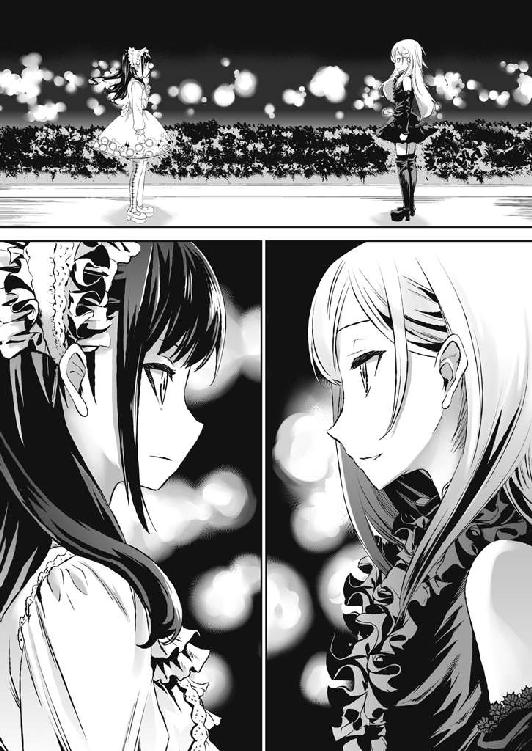

| 桜ノ杜ぶんこ 屍は美少女の香り2 屍の美少女は二度蘇る！ | |
| くしまちみなと | |
| (2012) | |
桜ノ杜ぶんこ
屍は美少女の香り ２
～屍の美少女は二度甦る！～
くしまちみなと
前回までのあらすじ
屍体を愛してやまない高校生・樺根鏡一郞。彼は日課として世界中のＷｅｂサイトから屍体写真を蒐集し、いつかゾンビーを作り出すことを夢見る世界屈指のネクロフィリアにしてゾンビスト。その本性を知る者は、彼のことを屍狂一郎と呼んでいた。
その前に現れた転校生の美少女・灰中圭。
狂一郎は、なぜか彼女から香しき死臭を感じてしまった。
生きている人間からなぜ死臭が？
疑問は好奇心に変わり、鏡一郞は彼女の机の上にフレッシュな脳みそを置いてみるなど、執拗にゾンビー検証を行い続ける。その結果、灰中圭は実はゾンビーであり、その家族すべてがゾンビーであることを鏡一郞は知ることとなる。
目の前で圭の母親の腐乱した腕を見た瞬間、ボルテージマックスとなった鏡一郞は感情の赴くままにプロポーズするが、人妻であることを知り彼は血の涙を流して断念するのだった。
灰中博士から、この現実世界の他に魂の世界と屍体が流れ着くゾンビ・ワールドがあり、そのゾンビ・ワールドが危機的状況にあることを知った鏡一郞は、持ち前の屍体愛の精神から、生きている人類を滅ぼしてゾンビー化させ、世界を救う《人類総ゾンビー化計画》に欲望の赴くままに協力することを誓う。
この人類の危機的状況に動いたヴァチカンは、灰中博士を暗殺するために抹殺者エクソシスト太郎を日本に派遣し、もう一歩という所まで鏡一郞と灰中博士を追い詰めるのだが、圭の双子の姉である智理が作ったゾンビ・パウダーによりアンデッド化した鏡一郞により、その暗殺は未然に阻まれるのだった。
この憂慮すべき事態を知ったヴァチカンは鏡一郞を〝人類の敵〟と認定し、この人類の危機的状況に対応することとなった。
人類の滅亡を意味する《人類総ゾンビー化計画》の実施はいつなのか？ 今、人類は未曾有の危機に立たされているのであった。
来たるべき近未来──
総人口も七〇億を超え、増えすぎた人類は、その膨大な人口増加がなにを意味するのかも知らず、局所的に発生する紛争こそあったものの、大半の人々は輝かしい平和を謳歌しながら子を産み、育て、そして死んでいった。
だが、その輝かしい平和の影で、世界の均衡が大きく崩れ始めていた。
人間が住まう物質界《アッシャー》で人が死ぬとその魂は冥界《ハデス》に流れ、屍体は屍界《ゲヘナ》に流れ着く。魂は冥界《ハデス》で洗浄されて物質世界《アッシャー》に戻されるが、屍界《ゲヘナ》は屍体が流れ着くだけの世界。そこから出て行くものはなく、ただため込まれるだけの最終処分場だった。
つまり、いつか屍界《ゲヘナ》は満杯になり崩壊してしまう。その時、ほかの世界がどんな影響を受けるのか分からない。予想される最悪の結末は、バランスを崩したすべての世界の崩壊。そしてその最悪の予想が発生する確率は七〇パーセントという恐るべき数字だった。
屍界《ゲヘナ》でそのことを憂いた灰中博士は、魂を持ったまま屍体として流れ着いた者たちの知識を総動員し物質界《アッシャー》へ舞い戻り、世界を救う《最終計画》を実施すべく活動を開始したのだった......。
当然、この屍界の動きは物質界《アッシャー》の監視者たるヴァチカンが察知することとなり、エクソシストたちが派遣されることとなったのである。
この輝かしき平和の影で、ふたつの勢力はぶつかり続けた。
そして──
その朝は空に暗雲が立ちこめており、いつ豪雨が大地に襲いかかってきてもおかしくは無い天気だった。雲は時折、稲光で空に浮かび上がり、ゴロゴロ......という雷鳴を響かせていた。
都内某所にある公立高校。その正面玄関に立つ、三人の人影があった。一般の学生たちは学生通用口を使うために、朝の登校時間であっても玄関前は閑散としていた。
「ここか......」
ピカッ！ と稲妻が空に走り、ゴロゴロゴロゴロ......と雷鳴が轟いた。
「とっても素敵な天気......。まるであたしたちの転入を祝ってくれているようね」
「ど、どこがよ......」
再びピカッと稲妻が空を走った。
稲妻の光りが反射して、男の眼鏡を光らせる。
男はクイッと眼鏡のブリッジを中指で押し上げた。
「それでは、いくか......。タブレットＰＣが濡れると、ボクの大切なコレクションが台無しになってしまうからな」
男は二人の女の顔も見ずにそう呟くと、スタスタと歩き出した。
二人の美少女は顔を見合わせ、軽く肩を竦めると男に続いた。
そう。我々はこの男を知っている。
この一見人畜無害なただのオタク男的外見をしているが、心の奥底は真っ黒にド腐れな眼鏡男を！
そして、我々はこの二人の美少女も知っている。
一見ただの双子姉妹だが、片方は健康的な美少女で、片方は深窓の令嬢然とした美少女だが、共に心臓の鼓動がピクリとも動かない存在であることを──
この男は、かつて都内のとある公立高校に通っていた、屍体愛好家の中では世界的に有名な男、屍狂一郎こと樺根鏡一郎だった。
そして、彼に続く二人の美少女は、灰中智理と圭の双子の姉妹。そう、彼女たちは〝フレッシュ・スキン改〟という直射日光と温度変化から肉体の腐敗を護る特殊な皮膚で全身を覆った生ける死者──すなわち、ゾンビーだった。
一年前、屍体愛好家の夢世界であるゾンビ・ワールドこと屍界《ゲヘナ》から物質界《アッシャー》にやってきた灰中博士とその家族の秘密を、微かな死臭をもかぎ分ける、その類い希なる嗅覚と屍体愛のパワーから見破った鏡一郎は、灰中博士が推し進める計画に参加した。
屍体愛好家である鏡一郎の夢と灰中博士の計画が合致したためである！
それは『人類総ゾンビー化計画』という、世界を破滅から救うための誰も挑んだことのない荒唐無稽なプロジェクトＺだった。
人類がゾンビーになれば眠る必要がなくなり、二四時間、仕事にレジャーにと活動時間が飛躍的に増加する。
さらに暖を取る必要がなくなることから、化石燃料の消費がかなり抑えられ、地球温暖化対策も行える。
食べるくせに排泄はしないという特殊な身体故に、最終排泄処理施設も必要なくなり、エコな暮らしを実現出来る。
この計画が実行されれば、京都議定書がどうのこうのと世界各国でもめる必要もなくなり、環境税等というワケの分からない税金を取られることもなくなるのである。
正に庶民の味方！
嗚呼、素晴らしき『人類総ゾンビー化計画』！
讃えよ、『人類総ゾンビー化計画』！
庶民はこの『人類総ゾンビー化計画』を支持し、早くゾンビーになってしまえばいいんだと思う！
なによりも屍体愛好家たちは、その特殊でマイノリティな趣味をもう隠す必要もないパラダイス・ワールドとなること請け合い。
しかし、世の中にはなんでも反対する輩はいるもので、計画を嗅ぎつけたエクソシストとネームレスと呼ばれるエクソシスト下部組織たちは灰中博士の抹殺を謀んだ。しかし、夢のパラダイス屍体世界構築を阻止されてたまるかとばかりに、樺根鏡一郎が襲撃計画を阻止したのであった！
生者でありながら、死者の側についた裏切り者。
エクソシストを統括するヴァチカンの枢機卿は、その阻止報告を聞くなり鏡一郎を〝人類の敵〟と断定し、世界中から新たなる神の先兵を送り込んだ。
だが、ただの人間が真の意味でアンデッド状態の鏡一郎には勝てるはずもない。結果は言わずと知れたものだった。
生きていながらもアンデッドとなった鏡一郎は、送り込まれてくる神の先兵たちをことごとく撃破し、いつしかエクソシストたちからは『ゲヘナの眼鏡悪魔』と恐れられる存在となっていた。
そして、鏡一郎をサポートして神の先兵を蹴散らしまくった灰中姉妹は、『ウィッチ・ツインズ』と呼ばれるようになり、鏡一郎と同様に宗教的に『人類の敵』として認定されたのである。
この一年間で神の先兵たちは一方的に攻め寄せては東京都のいずこかを破壊していくという、日本国と都民にとって、非常に迷惑極まりない局地的宗教戦争を勃発させ続けた。
正体不明のテロ組織により、都内のあちこちで爆発テロが多発するという公式見解を、教会勢力の圧力を受けた日本政府は発表し、それを真に受けた国民はテロの恐怖におののいた。
ちなみに、それが鏡一郎たちを狙ったテロだということは、表向きは一切報道されなかった。
もちろん、教会勢力は大々的に鏡一郎たちを『人類の敵』として民間人に通達し、テロの恐怖も合わせて彼らを全国民力を使って吊し上げようとした。
しかし、智理がかけた〝目的そらしの魔術〟のせいで、教会勢力の影響はまったく現れず、ただでさえ宗教観の薄い日本国民たちは、教会からの通達をまったく理解出来ずにスルーした。
例えるなら『人類の敵だって、ちょーウケるぅ！ 中二病マンガの読み過ぎなんじゃないのぉ！ んー、キミらが好きにやってて迷惑かけないならおっけぃ！』という感じだった。ムダに生きている貴様らを護るために、いったい誰が苦労していると思っているのだと教会勢力は歯ぎしりをしたに違いない。
その結果、恐怖のマスヒステリーを利用した教会勢力が誇る、究極マップ最終兵器とも言える〝魔女狩り〟が不発に終わってしまったのである。
神の先兵もまともに動かず、さらに〝魔女狩り〟も使えない。
ちなみに初回の襲撃の際、不意を突いたおかげで要塞とも思われた豊島区要町にあった灰中邸こそ破壊出来たものの、灰中一家と鏡一郎は地に拠点を移してしまい、米軍ですらその拠点を突き止められないという状況に陥ってしまった。
まさに生ける人類に打つ手ナシ！
生ける人類の滅亡は、刻一刻と迫ってきていた。
打つ手がなくなった教会は一時的に神の先兵の攻勢を断念し、今さらかよという不満の声が聞こえる中、徹底した情報収集に乗り出すことにした。
こうして、一時的ながらも平穏な日々が鏡一郎たちに訪れたのだった。
その結果が、出だしのアレである。
つまり、いい加減ヒマになった鏡一郎と灰中姉妹は、灰中博士と智理の頭脳を使って転入に必要な書類を偽造し、堂々と日本の生ける人間社会―つまり学校への復帰を行ったのだった。
鏡一郎は大して偽造の必要はないが、今まで学校に行っていなかった智理には必要不可欠な書類である。もっとも、以前はアメリカのシンシナティにおり、そこから偽造パスポートを使って日本に移住してきたわけだから、国内のザルなお役所機関向けの転入書類の偽造など簡単だった。
これからはちょっとだけ平穏な学園生活が始まる。
鏡一郎的には、落ち着いて趣味の屍体写真蒐集が出来て、さらに屍体愛好家雑誌『スプラッシュ・リメイン・フリークス』から依頼を受けていたエッセイ『屍体と私』にも、ようやく手をつけることが出来る。書き上げてしまえば、こちらの都合を考えない記事の催促からも解放されてホッと出来るというものだ。
しかし、すべてが順調に進み始めるかに見えるスタートの日が、なにやら風雲急を告げるようなこの悪天候だった。
朝から雷鳴が轟き、特撮映画さながらの異様な色の積乱雲が蠢く空。
「なんだか嫌な感じがするなぁ......」
圭は自分の両肩を抱きしめるようにして、そんな空を見上げて唯一まともそうな呟きをもらした。
そんな不安げな表情を見せたのは圭だけで、智理はまったく気にもせず、初めての学園生活を楽しみにしている様子だった。
当然、あの鏡一郎が天候に不安など感じるはずもない。というか、興味すら示すはずがなかった。
彼は歩行しながらも、スマホで日々更新される屍体写真蒐集の日課に夢中になっていた。
「ちょっとぉ。この悪天候になにも感じないわけ？」
圭の言葉に仕方なさそうに足を止めた鏡一郎は、クイッと眼鏡を上げて空を見上げた。
「そもそも悪天候を見て嫌な予感がするというのは非論理的すぎる。しょせんは天候など地球の表面運動でしかなく、そこには予知や超常現象というものは存在しない。もちろん、天候を予知するという意味での予知は存在するが......」
「あああっ、もういいっ！ あんたに聞いたあたしがバカだったわ！」
どうしても平時の鏡一郎には、この理屈っぽさがつきまとう。
こんな奴がゾンビ・ワールドの救世主だとは、救い出された経験を持つ圭ですら、どうしても想像出来なかった。
一言で鏡一郎を表現するなら、〝生者に興味のないただの屍体愛好家〟だった。もっと悪く簡単な言い方をするなら〝屍体オタク〟である。さらに最も簡素かつ適切な言い方は〝変態〟としか言いようがない。
──なんで、こんな奴がカッコよく見える時があるわけ？
そこはそれ、人体の神秘というやつだった。
「そういえば、この学校はもうじき学園祭なんだってさ。あたし、こういう学校イベントは初めてだから楽しみね」
話題を変えようとしたのかは定かでは無いが、智理がそう言うと鏡一郎はスマホをポケットに仕舞い込みながら答えた。
「ふむ。ボクからしたら、ただの時間の無駄遣いでしか無いイベントだが、学園生活を送ったことのない智理には、いい体験になるかもしれない」
「学園祭はただの時間の無駄遣いじゃないってば！ 智理ちゃん、真に受けちゃだめだからね！」
「大丈夫。圭じゃないんだから、そんな言葉を真に受けはしないわ」
「..................」
そんな大部分を除けば極普通の日常でも聞けそうな会話をしながら、三人は学校の事務局に向かって歩いていた。
そして、時同じ頃──
成田空港に到着したローマ発の大型旅客機から、明らかにジャパニメーションの影響を受けたと思われる変形チャイナドレスを着た美少女眼鏡っ娘と、杖をついて片足を引きずりながら歩くイタリア人中年男性が、日本に降り立った。
中年男性の顔は革製のコルセットであちこち固められている上に、その目は血走っており、異様な雰囲気を醸し出していた。
そして税関を抜けて到着ロビーについた彼は、杖を振り上げて大音声に叫んだ。
「ニポンよ、私は帰ってきたぁああぁぁぁぁああああああぁぁっ！」
「なんでそう叫ぶねんか？」
この頭蓋骨のズレを固定するコルセットを被り、杖をつくイタリア人男性は、言わずと知れたエクソシスト太郎こと、アンブロージョ・ベニャミーノ・ファブリツィオ・バローニオ司祭だった。
エクソシスト太郎は質問をしてきたチャイナドレス娘に、不敵な笑みを浮べて答えた。
「日本語を教えてくれた、フランス人のオタクがニポン破壊するつもりなら、ニポンについたらそう叫べと教えてくれたね。さあ、待っていなさーい。キョーイチロ！」
「それは徹頭徹尾素敵な言葉ねんなぁ！ ウチもぎょうさん叫ぶわ～！ ニポンよ、ウチは帰ってきたあああああああああああっ！」
鏡一郎に徹底的に打ちのめされ、再起不能だったはずの彼は、執念で一年間のリハビリと通信教育により、新たな技を会得してエクソシストとして復活を果たしたのである。
すべては、復讐のため。
ヴァチカンとしても、唯一神の先兵として灰中邸破壊の功績を上げたバローニオ司祭の復活は喜ばしいものであり、打つ手なし停戦を打開する切り札としてローマから送り出してきたのだった。
しかも、なにやら怪しげなニセ関西弁風の日本語を使うチャイナドレス美少女眼鏡っ娘を引き連れて！
なんともやっかいな人物が再びこの日本に舞い戻ってきた。
それは、僅かな休戦期間の終了を意味し、はた迷惑なバトルがこの日本で展開されようとしている事を意味していた。
風雲急を告げるような空模様は、正にこのことを暗示していたのである！
この物語は、教会勢力より〝人類の敵〟という烙印を押された樺根鏡一郎とその一派のゾンビーたちが織りなす、『人類総ゾンビー化計画』を推し進めるアンデッドラブ・コメディである！ 大事なことだから重ねて言うが、アンデッドラブ･コメディであって、ラブコメディではないことをお断りしておく。
【Ⅰ】
そこは壁際に煉瓦製の暖炉があるだけで、窓ひとつない板張りの簡素な部屋だった。
パチパチと薪が爆ぜる音を立てて暖炉の中で火が燃えており、その炎をジッと見つめるようにしながら老人がロッキングチェアに座っていた。
「リデルＭ。時間です」
部屋の暗がりから突然響いた澄んだ少女の声に促され、リデルＭと呼ばれた老人はアルコールで淀んだ目を闇に向けた。
「少し早いのではないかな？」
のろのろとした印象を受ける年老いた言葉。それに苛立つような調子が秘められたゆっくりとした言葉が返ってきた。
「いいえ。出遅れていると感じるくらいです。今を逃したら、次の機会がいつ訪れるか分かりません」
暗がりから現れた真っ白なゴスロリ衣装に身を包んだ美少女は、ビスクドール的な固い表情のままその老人を冷たい目で見つめた。ツンとした印象──というか、どこかキツメの印象を与える黒髪の東洋系の美少女だった。
片や、ニューヨークはブルックリンのさらに下町の路地裏で酒をカッくらって居眠りをし、そのまま凍死してしまうようなホームレスを思わせる白人の老男性である。顔つきにはドコか気品すら感じさせるものが多少あったが、いかんせんそのヨレヨレな印象が邪魔をして、かすかな気品もどこかに消し飛んでしまっていた。
「はぁ......」
大きくため息をついた老人──リデルＭは、懐からステンレス製のウィスキーボトルを取りだし、震える手でキャップを開けるや一口あおった。
「私がなぜ、アルコールに溺れたか話したかな？」
「存じ上げません」
少女はあくまでもツンとした調子だった。
だが、リデルＭは気にした様子もなく語り続けた。
「私が最後にいたのはフランスのパリだ。本来は大英帝国の魔術的玉座に座っているべき私がだ。理由は簡単だ、裏切られたのだよ」
リデルＭはここにはいない裏切り者を睨みつけるように、暗い闇を見据えた。その瞳には、冥い怒りの炎が燃えていた。
「私は愛弟子とも呼べる人間に裏切られた。そして酒に溺れた。逃げ道は酒しか残されていなかった......」
少女は無表情のまま、しばらくの間黙ってリデルＭのことを見つめていた。
「それは、波瀾万丈な人生を御歩みになられたのですね」
美少女の言葉は、リデルＭの恨み言などまったく意にも介していない冷たい調子だった。
「私も、これから波瀾万丈な人生の幕開けをしようとしております身ですから、リデルＭのこれまでの人生に同情はいたしません」
「結構だ。私も東洋の小娘に同情されるほど、まだ落ちぶれてはおらぬ」
その言葉に一瞬だけ少女の眉がピクリと動き、口元が微妙に歪んだ。
「落ちぶれていないとは......。酒代を稼ぐために、パリの裏通りの路上で手書きのエロ小説を売っていた経験をお持ちの方とは到底思えぬお言葉ですわね」
激しい侮蔑混じりの美少女の嫌みにもリデルＭはまったく動じず、その言葉を待っていたというようにウィスキーボトルを軽く掲げて見せ、再びあおった。
「人生は谷と山があるからこそ面白い。私はその両方をを極め味わいつくしただけに過ぎぬよ。さて、新たな山に登る前に、占いをしてみるかな」
リデルＭが左手を挙げると、四、五人でポーカーが出来そうな丸いテーブルが出現した。
そして軽く指を鳴らす毎に、そこに一枚、また一枚とタロットカードが出現し一〇枚のカードがケルト十字に展開していった。
そして、また自動的にカードがめくれていく。
「現状は最悪......障害は多く、そしてこの選択は最悪か......。これほどまでに悪いカードが並ぶことは実に珍しい。実に興味深いな」
少女はこれまで浮べたことのない真剣な表情で展開されるカードを見つめていた。
それは、このゴミのような男は侮蔑を与えるべき存在だが、その占いの腕だけは信用できるとでもいうかのように......。
「なによりも極めつけは一〇番目のカードだ。ザ・タワー......くくくく......。我が身の破滅でも暗示しているのか、それとも敵の破滅の暗示なのか......。対立するものが魔術師というのも実に興味深い」
リデルＭは本当に興味深いものを見るようにカードを眺め、ウィスキーボトルを再びあおった。
「この東洋世界がどうなるのか、実に興味深いものではあるな。私にとっては、黄禍が正しいモノであると立証する貴重な機会でもあるがね」
黄禍──それは、黄色人種に対する警戒感と恐怖感が高まり、黄禍論というひとつの思想に結びついた白人たちによる黄色人種差別論のことだった。
このリデルＭという男が黄禍論者なら、この美少女とのぎこちない関係もなんとなく分かろうというものだった。
リデルＭが再び指を鳴らすと、カードもテーブルも淡く揺らいで消えてしまった。
テーブルとカードが消えたことを満足げに見回していたリデルＭは、よっこらしょという感じでロッキングチェアから重い腰を上げて立ち上がった。
「では、参ろうか。もう一度、山を極めてみるとしよう。できることなら、空位である魔術玉座を奪おうか......くっくっくっく......」
リデルＭは薄暗い部屋をゆっくりと歩いて、いつの間にか壁に出来ていたドアを開いた。
「ついて来ぬのか？」
もう消えてしまったはずのタロットカードがまだ見えているかのように、カードがあった空間をずっと見ていた少女を振り返り、リデルＭが訊ねると、少女はなにを言うのかというように鼻で笑った。
「いいえ参りますわ。私も人生の山を見るために」
「結構な返答だ」
少女は頷き、男の後に続いた。
「もっとも、私に与えられる機会は、今少し後の予定なのですけどね......」
意味深な呟きを少女は漏らしたが、リデルＭはまったく気にした様子もなく、開いたドアの先の極彩色の渦が蠢く不可思議な空間に足を踏み入れてそのまま消えてしまった。
そしてそれを見ていた美少女も、臆することなくその極彩色の渦に足を踏み入れて消えていった。
後に残されたのは、暖炉の火が燃える仄暗い部屋だけだった。
【Ⅱ】
明らかに智理が前もって魔術を使っていたわけだが、鏡一郎と灰中姉妹は同じクラスに編入されることになった。
すでに机が用意されて教室の後ろの方に並べられていた。
よく転校もののパターンで教室の真ん中くらいに空席があるけど、普通に考えればそんなに都合よく空席が教室の真ん中にあるはずがない。まして、隣がカワイイ女の子だったりカッコイイ男だったりするなんていうのは、マンガかゲームかアニメの世界の話である。
ということで、三人のために用意されていた机は、教室の最後列だった。
元々少子化と公立高校離れのせいもあり、クラスの学生数にはかなり余裕があり、三人がそろって転入してもまったく狭苦しさを感じなかった。
「じゃあ、自己紹介をしてもらいましょうか」
担任の先生は、ドコか疲れた印象のある二七歳の女教師で、口元にはマリリン･モンローを彷彿とさせるセクシーなホクロがあったが、似合わない黒縁の眼鏡とオシャレとはかけ離れたひっつめ髪がそれをすべて台無しにしていた。
「灰中圭です。趣味は......まぁ、カワイイもの集めです。帰国子女なので東京の流行とかはネットで聞いたものしか知りませんが、よろしくお願いいたします」
そつなく挨拶した圭に、教室にいた男どもの好感度は上昇した。
「灰中智理です。圭の双子の姉です。趣味は実験。よろしくお願いします」
素っ気ない智理の自己紹介に、盛り上がりかけた教室の雰囲気はやや落ち込んだ。
そして──
鏡一郎はクイッと眼鏡のブリッジを押し上げた。
「樺根鏡一郎です。よろしく」
「え、えっと、樺根君。趣味とか、他に言うことは」
「ありません」
「でも、そんなんじゃお友だちが......」
「必要ない」
キッパリと言い切った鏡一郎に教室がザワついた。
そして、二七歳の女教師・小川幸子の胃がキリキリと痛み出した。
転校デビューからこんな調子で切り出してしまっては、いきなり〝いじめ〟てくれと喧伝しているようなものじゃないかと。
そもそも、こんなヒョロリとした眼鏡君など〝いじめ〟ターゲットの典型ではないか。
ここで〝いじめ〟なんて起こった暁には冬のボーナスの査定にも響くし、なによりもマスコミに叩かれてしまう。
それは今、この水際で防がねばならない。
女教師・小川幸子は自分の保身のために立ち上がった。
「か、樺根君。きちんとご挨拶することも大人になるために必要なものですよ。きちんと空気を読んで、ご挨拶してください」
鏡一郎をＫＹ（もう死語？）扱いする、恐れを知らぬその態度。
しかし彼女の保身七〇パーセント、義務二五パーセント、その他四パーセント、善意一パーセントの台詞を気に入ったのか、鏡一郎はニヤリと笑みを浮べた。
「では、言わせていただきましょう。趣味は屍体を眺めることであり、観察し詳細に分析することです」
シーンと教室が静まりかえった。
明らかに、クラスの学生全員が引いていた。
ハッと我に返った女教師・小川幸子（二七歳、独身・恋人募集中）は、慌ててその台詞を取り繕った。
「よ、要するに......ホラー映画好きってことかな？ と、ということなので、ウチの学校にはオカルト・ホラー研究会なんて同好会もあるから、仲良く出来るお友だちがいると思うわ。皆さん、仲良くしてあげてくださいね」
「ほぅ......」
オカルト・ホラー研究会と聞いて、鏡一郞の眼鏡がキラリーンと光った。
果たして鏡一郎の知識と趣味についてこられる奴らがいるのかいないのか？ そんな値踏みするような目で鏡一郎は教室を見回した。
「では、樺根君、灰中さん、席についてください」
担任教師に促され、教室の最奥にたどり着いた三人。
さて、どの席順で座ろうか？ と訊ねるように鏡一郎が圭の顔を見ると、ため息をついて肩を竦めて見せた圭が、三つ並べられた席の窓側に、鏡一郎を追いやるようにして座らせて、残った席に圭、そして智理の順で並んだ。鏡一郎の趣味をよく知る被害者を出さないための措置だった。
もめ事もなく席順が決まった様子を見て、担任女教師小川は、ようやくという形でホームルームを再開し、転校生の紹介のために時間が押していることもあって急ぎ口調で連絡事項を告げていった。
休み時間。転校生の周りというものは人だかりになったりする。
まして、それが双子の美少女ということであればなおさらだった。
教室の真ん中列最後尾にある智理の席を中心に、智理と圭はクラスメートたちに囲まれて色々な質問を受けていた。
「どこから来たの？」
「あっちの学校に彼氏いた？」
「日本で行きたい所ととかある？」
などという他愛のない質問が飛び交い、圭は愛想笑いをしながらひとつひとつの質問に丁寧に答えるか、あるいはヤンワリとやり過ごし、智理はボソリと答えるかあるいは氷のような眼光で威圧しつつ笑みを浮べながら辛辣な言葉で答えていた。
例えば──
「スリーサイズは？」
というような質問をしてきた不埒な男子生徒は、智理の眼光に威圧されて縮こまっているところに、
「それはあんたの知るべきこと？ そんなくだらない質問をしてあたしの裸を想像する前に、あんたの貧相でたるみきった身体を鍛えてきたらどうかしら？ あたしの身体に並び立てる体つきになったら答えてあげてもよくてよ？」
とまぁ、こんな感じに智理の言葉が飛んでいく。場合によっては、もっと辛辣な回答が投げつけられ、それを受け取った生徒はゲシュタルト崩壊しかねない状況になっていた。
そんな慌ただしく騒がしい姉妹の休み時間に対して、鏡一郎は実に優雅で落ち着いた休み時間を過ごしていた。
もちろん、鏡一郎の周りにはそんな人垣は皆無だ。
生徒たちはなにかを察したか、あるいは生物の直感で近づいてはならないものと感じているのだろう。それは鏡一郎も望む環境でアリ、彼はダバダ～とした落ち着いた気分で休み時間もタブレットＰＣをいじり、趣味の画像蒐集と整理に忙しかった。
「素晴らしい......。この頭蓋についた汚汁と化しつつある肉片のこびりつき方は芸術と言っていいだろう。これは、今年獲得した写真の十指に入るいいものだ」
思わずそんな感嘆の呟きをもらしてしまった鏡一郎。
その呟きを聞きつけてしまった運の悪い男子生徒が、鏡一郎を振り返りそのタブレットＰＣのタッチスクリーンの中にある画像を覗き込んでしまった。
スクリーンの中にある画像は、言うまでも無く屍体画像。しかも、かなり融解気味の屍体写真であり、腐敗して溶けかけた肉片が腐汁と泥で汚れた頭蓋骨にこびりつき、鼻腔の穴には蛆らしき白っぽいなにかが複数ついているというキワモノ写真だった。
見てしまった運のない男子生徒は気絶し、声もなくその場に倒れ込んだ。
無論、鏡一郎の知ったことではないが、人が倒れれば人が集まってくるもので、その瞬間から鏡一郎の優雅な時間が終わってしまう。
チッと軽く舌打ちをしつつ画像を閉じた鏡一郎は、倒れた学生のそばに歩み寄り、脈を確認した。
「残念ながら生きているようだ。保健委員はいるんだろ？ どうしたらいい？」
突然、人が倒れたことで止まっていた時間が鏡一郎の言葉で動き出し、教室は騒然となった。もちろん、休み時間を終えて教室にやってきた教師たちもこの騒ぎを聞きつけ、倒れた男子生徒を保健室に運び出していった。
「あんたのせい？」
ボソリと耳打ちした圭の追求に、鏡一郎はクイッと眼鏡をあげてキッパリと言い切った。
「不可抗力だ」
「............」
圭は九九パーセント疑っているというまなざしで鏡一郎をねめつけてから、その場を離れた。
放課後──
担任教師がポソッと漏らした『オカルト・ホラー研究会』に興味を抱いた鏡一郎は、早速、その部室に足を運ぶことにした。無論、その行動は圭に止められたものの、智理も一緒に行くと言い出したために止めることができず、結局は圭もついてくるという有様になっていた。
「本当にやめよって！ 樺根君の知識に匹敵する高校生なんかいないんだから！」
「分からない。そんなことを誰が決めた？ 世の中に似たものは三〇人はいるというから、ボクと対等に会話を交わせる奴がいるかもしれない」
「智理ちゃんも、なんでこいつと一緒に行こうとするわけ？」
「んー......。ヒマだし」
智理は智理で、そこそこ楽しみにしていた学園生活が意外にも退屈で無為な時間を強制的に過ごさせられる場所であることに転校初日にして気づき、もう退学すら検討しているという有様だった。
「だいたい、授業の内容が低すぎだわ」
「そりゃ、智理ちゃんの頭に比べたら、普通の学校の授業なんて程度低くなっちゃうし、合わせたらほかの学生がついて行けなくなっちゃうよ！」
褒められているような台詞だが、智理的には不服だったらしい。
「そんなことないわ。私にはまだまだ知らないことはたくさんあるのよ？ それに知的探究心を刺激してくれる授業をしてくれるなら、たとえ学習内容が低くとも楽しむことはできたはずよ。それすらも与えられないなんて......嘆かわしい教師どもね。今すぐ、教師を辞めて首を吊るべきね」
智理が求めていた授業内容は、どちらかというと欧米の──しかも、相当にランクの高い大学の講義内容に近かったから仕方ないのかもしれない。伊達にこの年で灰中博士の研究を手伝っているわけではなかった。
「知的好奇心の〝ち〟の字すら刺激を与えてくれない教師は死ぬべきよ。そうね。手始めに文科省を制圧したら、即座にそういう法律を作りましょう」
「制圧って......智理ちゃんは、日本を占領する気なの？」
「占領？ 違うわ」
不安そうな圭の顔を見てニヤリと笑った智理は、その素敵な笑顔のまま呟いた。
「支配よ」
「............」
「おい」
「なによ？」
二人の会話を右から左に聞き流して部室への道を一心に歩いていたと思われた鏡一郎が振り返り、眼鏡をクイッとあげつつ口を開いた。
「縊死......つまり首吊りは美しくない。最も醜い死に方ワースト５に入る死に方だ。どうせ殺すなら、そんな死に方ではなく、もっと美しい死に方をさせてやってくれ」
「たとえば？」
鏡一郎は立ち止まり、楽しい夢を語るような表情を浮かべて語り始めた。
「そうだな......。どうせ絞殺するのなら、濡れた革紐を首と手首、腕、足首、足、腰に巻き付けて、砂漠に野ざらしにするとか......」
「う......」
濡れた革紐は乾燥すると縮むために、ゆっくりゆっくりと殺される拷問兼死刑の方法のひとつだった。
「または大がかりなブラックバイスを使うのもいいだろうな」
「ぶらっく......ばいす？」
「巨大な首締め用の万力だ」
「ぶっ」
鏡一郎の提案に圭はゲンナリし、智理は感心したようにうなずいた。
「相変わらず、そういう知識は豊富に持っているのね......」
「いや、むしろボクの知識はそうやって殺された屍体がどうなっていくのかに主眼が置かれているのだがな......」
「............」
圭は小さくため息をついた。
三人のうちで一人だけ（やや）まともな精神の持ち主がいるとその人は非常に気疲れしてしまうものであるが、まさに今の圭がいい例だった。
「ここか......」
部室割り当て特別校舎の前に立ちその建物を見上げた。
そこは一区画だけ、部活動の部室校舎棟とは離れた場所に建つ古めかしい木造校舎だった。いや、校舎というか一軒家だった。その昔、校務員さん（もしくは用務員さん）が住んでいたという建物で、築年数は約六〇年少々の木造平屋建て。
「雰囲気だけは......ホラーだな」
古びた木枠のガラス窓は所々が割れてベニヤ板でふさがれており、瓦屋根には草が生えているところもあった。
「相当手入れをしていないな」
玄関も古めかしい磨りガラスの引き戸である。プラスチック製の呼び鈴が玄関脇についていたが、かなりの風雨にさらされていたらしく色あせ、元の色がなんだったのか分からないような色になっていた。
「使えるのか？」
念のために鏡一郎はその呼び鈴のボタンに手を伸ばして押してみた。
すると、今時はなかなか聞けないブザァァァァァッ！ という押している間だけブザー音が鳴り響く音が建物の奥から聞こえた。
「使えるらしい」
「いちいち説明しなくても、聞いてたから分かるってば」
「なるほど」
しばらくそこで待つとガタガタと立て付けの悪い音を鳴らして引き戸が開いた。
「だ、誰？ な、何の用だい？」
現れたのは、ふくふくとした丸い体つきの肥満系オタクっぽい男だった。その後ろからは、針金細工のような細っそりと......というか、ヒョロッとした細い系の眼鏡系のオタクっぽい男が顔だけ出して鏡一郎たちを見ていた。
一瞬にしてハズレくじを引いた気持ちに鏡一郎は包まれたが、外見だけで人を判断してはならないと思い、ひとつ頭を軽く振ってから口を開いた。
「こちらが、オカルト・ホラー研究会と聞いてやってきたのですが......」
「ち、違うよ」
「............」
あのクソ女教師め、だましたなと鏡一郎は内心で呟き、キランッと眼鏡を輝かせて職員室の方を睨みつけた。
「こ、ここは〝オカルトを事実現象と考えその存在証明することを前提として、ホラー映画などを検証する研究会〟なんだよ」
「は？」
圭の目が点になり、智理と鏡一郎の眉間にシワが寄った。
「や、やだなぁ。せ、正式名称で言ってくれないと困るんだよね。あ、怪しい部活だと思われちゃうでしょ。あ、あくまでも、お、俺たちは、け、研究会。け、研究者なの、さ」
「..................」
丸い男は困った奴らがまた来たよというように肩を竦めてみせ、なぜか上から目線っぽい口調でそう言ってきた。
「あんたと五十歩百歩じゃない？」
圭がそう耳打ちしてきたが、鏡一郎は心の中で断固として違うと抗議していた。
そもそも、五十歩百歩という表現からして問題があるのだ。
五十歩と百歩の間には五十歩もの差があり、それは絶対に縮まらない。次のターンでは百歩二百歩となり差は明確なものになるのである。
この慣用句を作った奴、前に出ろ！ そう鏡一郎は言いたい気分だったが、今は堪えた。
「で、君たちは〝オカルトを事実現象と考えその存在証明することを前提として、ホラー映画などを検証する研究会〟の入部希望者かな？ じょ、女子は大歓迎だよ！」
「は、はぁ......」
「お、俺は赤川太志と言って、こ、この部活の中では、タ、タロー・カードとかを得意としてるんだ。に、日本ではタロットって言うけど、あ、あれは間違いでさ。正式には最後のｔを発音しないでタローって言うんだよ。まま、まぁ、きょ、今日の君たちの来訪は、俺の占いで分かってたんだけどね。って、メ、メジャー・アルカナだけじゃなくて、マママッマイナー・アルカナも混ぜた、す、すっごい大変な占いをした結果なんだけどさ」
明らかにこの丸い男の目線は鏡一郎ではなく、その傍らに立つ智理と圭に注がれていた。
まぁ、外見は美少女であるわけで、そんな女の子が訪ねて来たら傍らに立つ男なんかゲームで言う背景オブジェクトと同一になってしまっても仕方ないだろう。
だが、このいかにもな解説に智理と圭はなんとかしてくれと言うように鏡一郎の顔を見てきた。
基本、タロットや宝石占いの類いを知っていて上手く使えば、中学・高校と女の子の興味を引くことができるものだが、それをいかにもオタクっぽく語ってしまうと、あっという間にアブナイ・モテナイくんになってしまう。
まして最悪な出だしは、この呼び方の違いだった。
別にタロットだろうがなんだろうが、その民族独特の言い回しでいいじゃんと思うのだが、なぜか微妙なオカルト・オタクはそれが許せないらしく、タロータローと南極で犬でも呼ぶかのように呼びまくる。
しかし鏡一郎は、タロットをタローと言いたがることから、それなりにオカルティックなことに造詣ある人間らしいという判断を下していた。
「とりあえず、中に入れていただけますか？ 立ち話はなんですし、詳しいお話を聞きたいので......」
いつ終わるか分からない赤川のおしゃべりに鏡一郎は口を突っ込んで、ストップをかけた。それがかなり不満だったのだろう。赤川はあからさまにムッとした顔をして鏡一郎を睨んだ。
「そうだね。ああ、君も入部希望者？ まぁ、俺たちの高度な知識についてこられるかテストをして、それに合格なら入れてやってもいいよ」
明らかに男女差別があった。
鏡一郎的には、なぜ自分にはどもらない？ と、明らかに女子慣れしていない話し方に突っ込みたかったが、そこは黙っていることにした。
「ええ？ あ、あたし〝は〟そんなにオカルトな知識はないんですけど......。入部テストって......難しいんですか？」
あたしはの〝は〟に力を入れて、圭は自分だけはオカルト系の知識がないことをアピールした。実際に武闘派の圭のオカルト知識などタカが知れていたから、妙な問題を出されても答えられるはずもなく、前もって釘を刺しておくことが重要に思えた。さすがに、こんな部活に入りたくはなかったが、だからと言って鏡一郎と智理だけが入部できて、自分だけができないというのは淋しいし、一人で学校から帰るというのも嫌なものだった。
だが、そんなこと気にする必要はないよとばかりに赤川は、虫歯だらけの歯を見せながらニヘラと笑った。
「だ、大丈夫。い、今はちょうど女子がいなくってさ。ま、魔女術とか、や、やりたくても、で、できない状態だったんだ。だ、だから、じょ、女子は......だ、大歓迎っ！」
この発言で、鏡一郎はここに来たことがムダな時間つぶしになったことを認識した。
一瞬、このまま『帰るか？』と鏡一郎は思ったが、それを察したらしき智理が鏡一郎の肩を軽く押して部室に入るように促してきた。おそらく、智理にはなにか考えがあるのだろうと察した鏡一郎は、渋々顔の赤川の後について古い家の中に入った。
部室は六畳間が二間続いており、さらに奥にも部屋らしきものがある和室であり、そこには月刊マーなどのオカルト雑誌が散らばり、いかにも男所帯という散らかった様子の部屋になっていた。
「しょ、紹介するよ。に、二年生で代表の飯田十蔵」
先ほど、この丸い赤川の後ろから覗いていた、ヒョロッとした細い系の眼鏡系が体をややくねらせるＪ●Ｊ●的なポーズをとりながら眼鏡のブリッジをクイッとあげつつ、頭を下げてきた。
「ゾンビに関する知識なら、まぁ、私の前に立てる奴などいないな。屍体に関して知りたい時は私に聞きたまえ。よろしく」
飯田の言葉に智理と圭が鏡一郎を見たが、鏡一郎は涼しい顔をしていた。
「で、おおお、俺が二年生で代表代行の赤川太志。タロー占いなら、ま、まぁ、学校で一番......かな？」
代表がいるのになぜ代行がいるのかと圭は突っ込みたかったが、その辺は政党でも代表代行とかを大量に作っているところがあるので、やめておくことにした。
「うむ。おまえの占いは実にすばらしいものがあるぞ。美少女が来訪すると、今朝も占っていたからな」
「は、はぁ......」
「お、同じく二年で代表代行の牛島友康だ。と、特技は、ダウジングと、電波受信全般かな。まぁ、今日は三〇万キロほど先を横切った宇宙船が発したエノク語を受信しちゃったけどね」
そう三番目に自己紹介したのは、男子高校生なのかと疑うほどに背が小さい男だった。
「..................」
「..................」
「..................」
もう智理は諦観の境地に達したような顔をしており、鏡一郎も似たようなものだった。唯一、相づちを打っていた圭は、本気で助けてというように鏡一郎の上着の裾を引っ張ったが、まだ彼は動かなかった。
「以上の三人がこの〝オカルトを事実現象と考えその存在証明することを前提として、ホラー映画などを検証する研究会〟の幹部である」
幹部というが、明らかに部員はこの三人しかいなさそうだった。
まぁ、そういうことで、代表という後に代行をつけてお互いに格差を作らないようにしていたのだろう。
「じゃあ、まずは自己紹介からしてもらおうか。そこの君から」
代表の飯田が指名したのは智理だった。
智理はやや面倒くさそうに軽く髪をかき上げ、指先ですくようにしながら脇に流しながら部員三人の顔を見た。
「あたしは灰中智理。今日、転校してきたばかりの一年生。趣味は実験と薬草の栽培。得意なものは八つ裂き。好きなものはマンドレイクのデスメタル。よろしく」
「..................」
部員三人はなんと言っていいのか困る智理の自己紹介に、目を点にして顔を見合わせた。
趣味が実験というのは、天敵に近い理系女ではないのか？ という彼ら的には背筋に脂汗が流れる想像が脳裏をよぎったからだ。
「じゃ、じゃあ......次。お、同じ顔をしてるってことは......双子？」
今さらソコに気づいたかと智理は呆れたが、圭は素直にうなずいた。
「あ、はい。智理ちゃんの妹の圭です。趣味は......可愛いもの集めで、得意なものは......ぶ、武術を......少々。好きなものはたこ焼き......です。よろしく」
女子で武術という感じに、やはり部員三人は困惑気味に顔を見合わせたが、健康的な外見をしている圭が武術をやっていると言ってもおかしくはなく、最近は長刀や女子ボクシングのマンガなども流行っていることから、それもアリだろうというようにウンウンとうなずいて見せた。
そして代表は『次』と言うように鏡一郎を見た。
鏡一郎はヤレヤレというように眼鏡のブリッジを左手の中指でクイッと押し上げて、その呆れ顔の表情を隠しつつ自己紹介をはじめた。
「樺根鏡一郎です。趣味は屍体画像収集。得意なものは魔術とか色々です。よろしく」
鏡一郎はニヤリと笑って、代表たちを挑発した。
「ぶ、無礼な！ おまえは目上の私と同じ趣味を持ってるとひけらかして、この二人を差し置いて私に取り入ろうという算段か？」
もうわけが分からないよと言う顔をして、圭は智理を見たが智理も肩を竦めて『静かに見てなさい』という様子を示すばかり。
「目上...だと......？」
細い上弦の月のように口の両端をとがらせた悪魔のような笑みが、鏡一郎の顔に浮かび上がっていた。
「ただ早く生まれてきたからといって偉ぶれるような世の中ではないでしょう？ ゾンビーをゾンビと言ってしまう辺りでその浅慮っぷりが披露されたわけだし、女子がいないから魔女術が使えないという辺りでもお里が知れるというものです。そもそも......」
まず、鏡一郎は赤川を見た。
「タロットをどう呼ぼうがその本質は変わらないわけで、そんなものは別段どんなオカルト関係のものにはつきものでしょう。たとえばクトゥルフをクトゥルーと呼んだり、ク・リトル・リトルと呼んだりするのと一緒だ。だいたい文字を発音するしないなど、フランス語ではよくある話で、有名な日本の猫キャラが、エロキチとフランスで呼ばれて愛されているのをご存じですか？ さらにタロットはイタリア語ではタロッコ、ドイツ語ではタロックと呼ばれているのだから、本当にどう呼ばれようが自由なわけだ。本気で呼び方にこだわりを持ちたいのであれば、せめてラテン語読みをするとかしたらどうですか？」
次のターゲットは牛島だった。
「そもそも、エノク語とはなんですか？」
「え？ えええと......て、天使語......みたいな」
戸惑いながら答えた牛島を鏡一郎は鼻で笑った。
「天使が宇宙船に乗っているのですか？」
「て、天使は宇宙人なんだよ！」
「そういう説もありますね。では、最初に登場したエノク語はなんです？」
「え？ えっと......エメラルド・タブレットだ」
「そう。そう語った日本のオカルティストもいましたが、世界的にはエメラルド・タブレットはヘルメスが刻んだもので、アレクサンダー大王が発見したとされたものです。当然、その言葉はギリシア語であり、事実第一のエメラルド・タブレットにはギリシア語という表記も残されています。エノク語を最初に使ったとされるのは英国女王エリザベス一世に仕えた魔術師のジョン・ディーとされています」
「ま、間違いはだ、誰にだってあるだろ！ そうだよ、その、ジョン・ディーだよ！」
「おかしいですね。ディーは天使語、天上の言葉、神聖言語などと呼びましたが、決してエノク語の名前を口に出さなかった」
牛島はしまったと言うように顔をゆがめた。
「どうやら、先輩方よりもボクの方がこの手の話には詳しそうですね」
「うぬぼれるなよ！ お、俺の屍体に関する知識をなめるな！」
「では、ボクから質問させていただきましょう。青酸カリを口紅に練り込んで人は殺せますか？」
「なん...だ......と？」
「青酸カリ入りの口紅で人は殺せますか？」
一瞬戸惑いつつ、代表のメンツを賭けて飯田は叫んだ。
「殺せる！ そういう小説のトリックを見たぞ」
「フィクションでしか殺せないトリックですよ。唇に塗る程度では致死量に至らないのですからね。そもそも、口紅に練り込むなどどうやって作るのですか」
「そ、それは殺人の手口だろうが！ 屍体の知識とは違う！」
「では、あなたの言う屍体の知識とはなんですか？」
「それは......の、呪いで作られたゾンビとか、薬物で作られたゾンビとか......」
必死でゾンビのネタを探す飯田を尻目に、脇に置いた鞄の中からタブレットＰＣを引っ張りだした鏡一郎は、自分のコレクション画像を開いて部員三人に見せつけた。
「ボクの言う屍体は、その言葉通り本当の屍体なんですよ」
一〇インチの液晶タブレットに映し出された生々しい人間の腐乱死体。
そのまごう事なき本物の人間の屍体写真を見て、部員三人は尻込みして後ずさった。
「どうしたのですか？ 先輩。いや、代表殿。屍体に関しては、お詳しいのでしょう？ これはどんな状況の屍体ですか？」
「ど、どんな状況って......」
赤川は顔を画面から背けつつ、目だけ動かしてチラッと見てまた目をそらした。
「そ、そんなの腐乱死体だろ！ 腐った屍体以外にあるのかよ！」
吐き出すように言葉を絞り出した赤川に、鏡一郎は眼鏡のブリッジをクイッと中指で押し上げてから答えた。
「ありますよ」
そう言うが早いか、鏡一郎は指先で画像を拡大した。
「ご覧ください。これは死後三〇日が経過した腐乱死体です。どうです、このドス黒くなった肉の溶け具合は最高でしょう。これは絞殺された屍体でして、そのために首の部分にロープで絞められた痕──索痕あるいは索溝と言いますが、それが残ってしまっています。そこから腐敗がはじまったのでしょう。ご覧ください、ここにきっかりと索溝が残っているのです」
さあ見ろと言わんばかりに鏡一郎がタブレットＰＣを押しつけるので、赤川たちはチラッと見て、再びこみ上げてきた嘔吐感を堪えた。
どれほどゾンビ好きと言っても、やはりリアルな屍体と空想のゾンビは違う。まして、ゲームなどのエンターテインメント作品に登場するゾンビは綺麗すぎるか、あまりにも創作的過ぎる傾向にある。
そうしたものにどれほど見慣れたとしても、リアルな屍体が醸し出す生存本能に働きかける嫌悪感を払うことは中々できない。
「ところでこの屍体ですが、どうして絞殺屍体だと判明したかお分かりですか？」
「そ、そんなの、首が絞まって死んだからだろ！」
おやおや、そんなことも知らないのか？ そんな風に明らかにバカにした冷笑を鏡一郎は口元に浮かべた。
「もしかして、代表は屍体にお詳しいと言っておきながら、絞殺と定型縊死の違いをご存じないのですか？」
──いや、普通の人は知らないから！
そう鏡一郎の背後でやりとりを聞いていた圭は心の中でツッコミを入れていた。
可愛そうに、あのおどろおどろしい屍体コレクションを見させられているんだろうなと圭は同情しつつ、どうしてこんなことをさせっぱなしにしているのかと智理を見たが、彼女は彼女で鏡一郎に負けない冷笑を浮かべ、まぁ黙って見ていなさいと言うように目配せしてきた。
「絞殺とは紐状のもので首を絞めて殺害する他殺死体のことであり、首吊りなどの屍体は縊死と言うのですよ。縊死──自殺の場合は定型縊死と言いますが、前頸部正中から下アゴの角──エラと呼ばれる場所ですね──の下を通って耳の後ろまで斜め方向に索溝が走り、アゴ下の索溝が最も深く、高くなるにつれて浅くなっていきます」
そう説明しながら、鏡一郎は自分の顎から耳の後ろにかけて人差し指で索溝ができる場所を示した。
「対して絞殺の場合は、ほぼ水平方向に索溝が走り、絞め方によって差が出ますが、索溝の深さはほぼ一定になります。この屍体をご覧ください。ほら、ここです。しっかりと索溝の痕が水平方向についているでしょう？」
屍体画像を目の前に押しつけられた牛島は、口を押さえながらウンウンと頷き、赤川に助けを求めるように目線を送った。しかし、彼らの中で最も屍体に詳しいはずの赤川ですら顔面が蒼白になり、イヤイヤという感じに小さく首を振っていた。
「ふむ。お気に召さないご様子ですね。では、こちらはどうでしょう？ これは生きながら焼かれた焼死体でして、なぜ生きながらなのかと言いますと、炭化した顔面にその苦悶の表情が刻まれたまま残っているからなのですよ」
「ぶっ......」
「おやおや、これもお気に召さない？ では、こちらはリアルリストカットの写真でして、ドコをどのような形状で何回リストカットすれば人は死ぬかという調査のために命を投げ出した崇高な屍体の写真です」
「ひいぃぃぃぃぃぃぃぃぃっ!!」
悲鳴が部室にこだまして、うるさいなぁと言うように圭は耳を手で押さえた。
そんな形で延々と鏡一郎の屍コレクションを見せつけられた部員三人は、ホラー好きでオカルト好きのはずなのだが悲鳴を上げまくり、鏡一郎がタブレットＰＣの電源を落とした時にはそろって失神していた。
「で、これでよかったのか？」
部員三人が完全に失神しているのを確認してから、鏡一郎は振り返って智理に訊ねた。
「そうね......。もう少しマシな部屋ならよかったんだけど......。まぁ、贅沢は言ってられないわね」
「ど、どういうこと？」
話が見えない圭は、智理と鏡一郎の顔を見比べた。
「あたしたちのたまり場っていうか、なにかあった時のための部屋が、学校にもほしかったのよ」
「はあ？」
「いざという時──そう、たとえばエクソシストの襲撃を受けた時、逃げ込んで武器とかを隠しておける場所ね」
「なるほど......」
それは確かに深刻かつ重要な問題だった。
なにが一番深刻かというと、エクソシストたちは無差別に攻撃をしてくるために一般人への被害が甚大なものとなってしまう。その結果、死者が出てしまった場合にはその数だけゾンビ・ワールドに負担がかかるのだ。
エクソシストたちは人類の存亡を賭けて戦っているわけだが、その結果として死者が出た場合、この物質界が存亡の危機に少しずつ追いやられてしまう。そんなこと、彼らが知るよしもないのだが......。
できる限り一般人を巻き沿いにして死者を出したくないのなら、立てこもる場所がほしいというのが智理の望みだった。
「一戸建てなのが幸いね。地下に脱出用の通路を勝手に作っておくわ。圭ちゃん、そこの三人をドコかに捨てておいてくんないかな？」
「なんで、あたしが......」
「肉体労働担当でしょ」
「そんなの男手があるじゃん！」
「鏡一郎にはもう働いてもらったからね。それに、彼は屍体担当でしょ」
「その担当ならあたしたちだって一緒じゃない......」
そう口では文句を言いつつも、圭はヒョイヒョイと三人の男をつまみ上げ、部室の外に持って出て行った。
それを見計らっていたかのように、鏡一郎は智理に声をかけた。
「さて、圭が出て行ったところで聞きたいことがあるのだが......」
「なにかしら？」
「なぜ、急に転校を決意した？ ヒマだったとか、そういうものはなしだ。キミが日本の学校という所にあまり興味を持つようには思えなかったのだがな」
智理はクスリと笑った。
「気づいてたんだ。圭ちゃんがヒマそうにしていたからという理由もあったんだけどね。実際、興味がないわけでもなかったわ。きちんと、勉強することの楽しさを教えてくれるのなら......ね」
「なるほど......で？」
建前の理由はいいという雰囲気の鏡一郎に、智理はクスリと笑った。
「実はね、おもしろい映像を見つけたの」
そう言うと、智理は自分のバッグから七インチサイズの小型のタブレットＰＣを取り出した。
「転入前に発見した画像なんだけどね。これを見てよ」
そう智理が見せた画面には、画質の粗い画像が一枚映っていた。
「ドコの写真だ？」
「成田空港の到着ロビーの画像よ」
粗い画像で目鼻立ちまでは分からないが、明らかに神父と思われる服装をした男性が一人、カートを引きながら歩いていた。
その輪郭は、鏡一郎が忘れることのできない相手だった。
「エクソシスト太郎か!?」
頭に黒い何かをつけて、さらに眼帯らしきものをしているが、その姿は紛れもなくあのエクソシスト太郎その人に思えた。
「どうやってこんなものを？」
「成田と羽田、それに大阪空港、関西国際空港の四ヶ所の監視カメラのハッキングくらいしているわ。今後増やす予定だけどね」
基本的にエクソシストを派遣してくるのはヴァチカンであり、日本に来るためには必ず国際航路を使わなければならないという水際があった。それ故に智理は監視の目を広げていたのである。
「なるほど......。それで転校の理由は？」
「まだ分からないの？ 今の隠れ家にコイツを引っ張り込んだらまた引っ越しになっちゃうわ。それは避けたいだけよ」
「そこで迎え撃つ場所が必要になった......と？」
「そうね。適度に広い空間があって、夜間は誰もいなくなる場所というと、学校っていい所なのよ。噂通りなら、避難訓練もしているらしいから、いざという時は逃げてももらえるじゃない」
「それはそうだが......」
その選択が正しいのかどうか、さすがに鏡一郎にも判断がつきかねた。
「それにね。あたしらが学校に通っているっていう話が漏れれば、そこから奴らをおびき出すこともできるわ」
「なるほどな......。では、ボクも戦いの用意をしておいた方がいいということか......」
鏡一郎はクイッと眼鏡を押し上げた。
「そうね。そうしてくれると助かるわ」
そう話を区切ったところで、圭が玄関の引き戸を開けて戻ってきた。
「ゴミ捨て場の所に捨ててきちゃったけど、まずかったかな？」
「いいんじゃないか？ 屍体のことをまともに語れない自称ゾンビストなど、しょせんゴミ以下だろう」
鏡一郎にとって、まともに語れないゾンビストだけではなく、生きている人間すべてがゴミ同然だった。
「起きたらそのまま家に帰るでしょ。二度とこの部室に来てくれないことを祈るわ」
汚いものでも見るような目でゴミ捨て場の方を見た智理は、そう静かに言い放った。
「さて、あたしはここの改造に乗り出すわ。さすがに地下通路をすぐに掘るのは無理だろうけど、ノームと取引をしてなるべく早めに片付けることにするから、圭と鏡一郎は、できるだけ他の生徒をここに近づけないようにして」
「了解した」
「気をつけるけど、ここに人を近づけないようにするのって無理じゃない？」
「まぁ、できる限りでいいわ」
あんまり期待はしてないから大丈夫というような顔をして、智理は笑った。
【Ⅲ】
一週間後、鏡一郎たちが学校の教室に入るなり、その行く手を遮るようにクラス委員長の浦沢まどかがピリピリした雰囲気をまとい仁王立ちして立ち塞がった。
「ちょっといいかしら」
浦沢まどかはいかにも生真面目そうな、ややキツメの顔つきをしたツン系の顔立ちをしており、非常に気位の高そうなイナなタイプのクラス委員長。そんな雰囲気のある女の子だった。
「断る。ヒマじゃない」
「..................」
鏡一郎はスマートフォンの画面から目を離さずにそう答えると、まどかの脇を通り抜けて自分の席につこうとした。しかし、そんなことで引き下がってはクラス委員などやっていられない。
ツインテールの髪を踊らせて再び鏡一郎の行く手を遮った。
「ストップ！ クラス委員としての命令です。止まりなさい！ 静止しなさい！」
ウザそうに顔をスマートフォンから上げた鏡一郎は、改めてまどかの顔を見た。
「ストップして、止まって静止したが、委員長がボクになんの御用だ？」
「昨日、生徒会長に呼び出しを受けました」
「結構なことだ」
「はい？ 生徒会長に呼び出しを受けることは結構なことですか？」
「違うのか？ 政治家に呼び出されて、お話をすることがこの国ではある種のステータス的なものだと思っていたのだが......」
「あなたは変なテレビ番組の見過ぎです！」
「そうでもないだろう。ＳＮＳなどで政治家のサイトを見るがいい。本来なら国民の下僕、国家第一の僕であるべき政治家を先生と呼び、挙げ句、ただの握手に嬉しそうにしている輩がどれほどいるか、簡単に分かるだろう」
鏡一郎の政治観は別にして、生徒会長と政治家を並べるのはどうだろうかというツッコミを圭はしたくてたまらなかった。
「そんな下僕根性のある人と私を一緒にしないでください！ 私は苦情を言われるために、生徒会長に呼び出しを受けたのです！」
「ほほう。なにか悪いことをしたのだな。生徒会長からお説教をくらうほどの悪いことをするとは、委員長も中々ヤルな」
「あなたたちのせいですよっ！」
あなたたち──すなわち、鏡一郎と圭と智理の三人ということであり、三人そろって苦情の対象になるとしたら、考えられることはひとつしかない。
あの長ったらしい〝オカルトを事実現象と考えその存在証明することを前提として、ホラー映画などを検証する研究会〟という名前の同好会に参加していた三人についてだ。
ゴミ捨て場に放置したことを抗議されたか、あるいは部室に勝手に出入りしていることを咎められたのか......。
「あなたたちのせいで、〝オカルトを事実現象と考えその存在証明することを前提として、ホラー映画などを検証する研究会〟の会員の三人が登校拒否になっているそうなんですが、心当たりはありませんか？」
「はいっ!?」
さすがに登校拒否と聞いて圭も声を上げずにはいられなかった。
「樺根君だけじゃなさそうね。二人の灰中さんも、この件には関わっているのかしら？」
腕組みし、ギロリと睨みつけてきたまどかは、一歩も引かずという体勢を取っていた。
「これは埒もない」
圭がなんとか言い訳をしようとした矢先、苦笑交じりの鏡一郎の声が静かに響いた。
「委員長は、あのクソ長ったらしい名前の部活、そう〝オカルトを事実現象と考えその存在証明することを前提として、ホラー映画などを検証する研究会〟がなにをしている同好会なのかご存じですか？」
「も、もちろんよ。気持ちの悪いホラー映画を見てニマニマしているだけの同好会よ」
「そう。ボクらは一週間前にそこに入会した」
「そうらしいわね。あなたたちの入部届が出ていたのを見て、生徒会長が私を呼び出したんですから！」
「そして、ボクは入部テストを受けさせられた。こんな感じにね」
鏡一郎はいつの間に録音していたのか、いつも持ち歩いているＩＣレコーダーをまどかの前に突き出し、録音されている内容の一部を再生した。そこには確かに、薄気味悪い声音で自己紹介する三人と、トゲトゲしい声で鏡一郎を詰問する代表の声が録音されていた。
「そこで、ボクは自分の趣味と知識を披露しただけにすぎませんよ」
「いじめはしていないって言うの？」
「少し考えてもみてください。転校して来たてで右も左も分からない、こんなヒョロッとした眼鏡男がいじめを受けるならともかく、いじめをするように見えますか？」
内心で圭はコクコクと頷き、見えると肯定していたが、それは決して表には出さなかった。
「それを証明できるの？」
「証明するもなにも、ボクは自分のコレクションを見せて代表と議論を戦わせただけですよ。それ以外には、なにもありません」
ヤレヤレという大仰なジェスチャーを交えて静かな口調で話す鏡一郎だったが、なぜか人を威圧してくるその雰囲気がいかにもな怪しさをまどかに与えていた。
「で、その登校拒否になってしまった代表は、今、いったいなにをしているのですか？」
「あなた、代表たち上級生が部室に顔を出さないのをおかしいと思わなかったの？」
自分たちが意図してやったことだから、当然おかしくは思わないとは口が裂けても言うことはできない。もし、そんなことを言ったら、智理に口を裂かれることくらい、鏡一郎も圭も分かっていた。
「上級生ですしね。一度しか面識がない上に文化系同好会ですから、別段強制参加という拘束力もないのでまったく気づかなかった」
いかにもな白々しい返事だったが、それを嘘だと追い詰める根拠も証拠もまどかにはなかった。
敢えてソレっぽく言うなら、魂になにかが囁くからという感じだった。
「いいでしょう。今の所は、あなたたちの発言を信用しましょう。でも、なにか問題があれば、必ず問い詰めますからその時は覚悟していらっしゃい！」
「結構だ。ところで、ひとつ聞いていいかな？」
「なんでしょう？」
立ち去りかけていたまどかは、鏡一郎に呼び止められて足を止めて振り返った。
「赤川先輩たちの登校拒否の理由などについて、具体的に聞いていないのか？」
「人づてのお話だから信憑性はそちらで確認してちょうだい。彼らは共通して〝屍体が来る......〟とか〝焼死体が......〟と、うわごとのように言っているそうよ」
「なるほど......」
どうやら正気度チェックに失敗したという様子だった。
だとすると三人の先輩の部室復帰は当分の間はあり得ないこととなる。
──これ幸いというべきか......。
「いや、邪魔をして悪かった。先輩達の情報が入ったら、念のために教えて欲しい」
「わかったわ」
フンッと言う調子で踵を返したまなみは、そのまま教室の自分の席に戻っていった。
クラス担任が教室にやってきて、『席ついて～』とどこの教室でも聞けるような台詞を吐いたために、クラスでオシャベリをしていた学生たちは慌てて自分の席に散っていった。
鏡一郎たちも例外ではなく、黙って席に向かっていた。
──あの女のせいで今朝の写真整理ができなかったな......。仕方が無い、一限目を使って整理するか......。
なにがあっても趣味の屍体写真整理の日課だけは怠らない鏡一郎だった。
しかし──
「あー......ちょっと、聞いてください。また、新たな転校生を紹介します」
教室中がどよめいた。
「先生、またっておかしくない？ このクラスには、もう灰中さんたちが三人も転校してきているんだけどぉ」
クラスの誰かがそう口にしていた。
それは誰もが思う疑問だった。そもそも、鏡一郎たちが三人まとめて同じクラスに入ってくること自体、おかしな話なのだから。
「あー......まぁ、先生もそう思うんですが、校長先生にお願いされてもいるし、海外からの帰国子女ということでまとめていた方が良いという判断なんだと思います。ほら、先生、英語ペラペラだから」
先生が英語ペラペラという部分はまったく無視され、帰国子女と聞いてまたクラス中がザワついた。
中には、わざわざ振り返って圭と智理のことを見る者までいたくらいだ。
「それと、制服がまだできてない上に前の学校では私服だったということで、しばらくの間は彼女は私服で通学することになります。あまり騒がないであげてくださいね」
そうクギを刺されると誰もが気になるというものだ。
余計に教室はザワついた。
そして珍しく、鏡一郎がスマホで行う屍体写真整理の手を止めて担任のことを見ていた。
──帰国子女だと？
新たな転校生で帰国子女という、微妙なキーワードが鏡一郎の魂をザワつかせた。
一週間ほど前に見せられた成田空港の到着ロビーの画像。
──あの画像にエクソシスト太郎以外写っていたか？
今すぐに智理にあの画像をよこせと言って確認したいが、さすがにそれをやって目立つのはまずい。
鏡一郎は懸命にあの時、智理に見せられた画像を細部まで思いだそうとした。
連続した映像からひとコマだけ切り取った画像だけに、普通にエクソシスト太郎の周りに何人かの人はいたように思えた。しかし、あの特徴なき顔つきのネームレスたちはいなかったように思える。
──転校生が特徴のない奴なら、ヴァチカンからの刺客という可能性が高いな。
ある種の期待を持ちながら、鏡一郎は肝心な転校生が姿を現すのを心待ちしていた。
そして──
「じゃあ、転校生を紹介いたします。入っていらっしゃい」
担任教師の声の後、ガラッ！ という教室の扉が引き開く音と共に現れた転校生を見た学生たちは、全員がポカーンと口を開いた。
それはそうだろう。ゲームの世界から飛び出してきたような、変形ミニ・チャイナドレスをまとい、髪の毛をお団子結いした眼鏡っ娘が入って来たのである。
「ウチ、鈴々花子と言いますねん。よろしゅうたのみますねん」
名前を聞いた瞬間、鏡一郎のこめかみがピクリと動いた。
「りんりん......はなこ......さん？ えっと、どちらからいらしたのかしら？」
担任教師は、恐らくその怪しげな謎めいたニセ関西弁風味の方言で、本当に中国からの帰国子女か迷ったのだろう。
「中国は四川省の成都の北にガアアアアアアアアアアッと行った所にある綿竹市からきましたねん」
「北にがあああっと？」
「ちゃいますねん。北にガアアアアアアアアアアッと行った所ですねん」
ガアアアアアアアアアアッと行った所という説明に、担任教師は首を傾げた。
ちなみに大阪の人にはこれで通じるという噂がある。
なお、綿竹市とは、三国志で有名な諸葛孔明の息子の諸葛瞻が没した綿竹関のあった場所だったりするが、本作とは関わりありそうな屍体に関するエピソードはないので詳しい説明は割愛する。
「と、とにかく、綿竹市からいらしたのね。皆さん、仲良くしてあげてください。鈴々さんの席は、一番後ろの灰中智理さんのお隣ね」
担任教師に名前を呼ばれた智理は、手を上げて自分の位置を鈴々に教えた。
足音も立てない軽快なステップでそこまで行った鈴々は、自分の席に荷物を置くと、智理に手を差し出した。
「よろしゅー頼みますねん」
丸眼鏡が余計に幼さを助長している無邪気そうな幼顔に笑みを浮かべた鈴々に、智理も微笑を浮かべて手を差し出した。
「よろしく。あたしも転校したての帰国子女だから、この学校のことはよく分からないから、質問は他の子にした方がいいと思うわ」
「他の子？ そっくりさんのお隣さんですのん？」
「こっちは双子の妹の圭。だから、質問は前に座る男性の方とかがいいかも」
智理に指名された鈴々の前に座っていた男子──そう、仮に山田君と名付けよう──は、感激したようにぴょんと跳び上がって振り返り、ポケっとしている鈴々の手を取った。
「よろしくお願いします！ 俺、学校のことならなんでも分かるから、質問いつでも受付中！ ちなみに、彼女もいなくてすっごい募集しているから、よかったら応募してくれると嬉しいな。ちなみに好みは...」
「ストップ。ホームルーム中よ。あまり調子に乗っていると、小川先生に八つ裂きにされちゃうかもよ？」
山田君（仮名）は智理の妖しい微笑にゾクッとしたものを感じたのか、それ以上自分をアピールすることなく、智理の勧め通りに教卓の方に向き直った。
「小川センセ、悪い子、八つ裂きにしますのねん？」
「やるかもよ？ 体罰は教育と躾けに必要ですがモットーらしいから」
鈴々はコワーっと言う顔をして、連絡事項を伝えだした担任教師を見た。
「ニポンの教育は、スパルタに戻るねん？ コワイワー」
「あなた、その日本語どこで習ったの？」
「え？ ウチの日本語、おかしいねん？」
「おかしくはないけど、色々な地方の言葉が交じってるみたいなんだけど」
「そうなん？ どないしよ。ウチいじめられてまうわ！」
アワアワとはじめた鈴々花子に、脇から気の毒そうに見ていた圭が話しかけた。
「大丈夫だよ。そんな言葉でいじめるような人いないから。でも、どこで習ったの？」
「ＣＤつきの本やねん。アメリカで売ってるものをもらって勉強したねんで」
ちなみに、こういう複雑怪奇な謎の日本語を教えている本は、実際にあるらしい。その影響かは知らないが、サラリーマンと忍者が戦う人気小説でも、怪しげな日本語が飛び交っている。
そんな圭と智理たちの鈴々花子とのやりとりを耳だけで確認しながら、鏡一郎は眼鏡をクイッと押し上げた。
安易に花子とつける辺り、どうしてもエクソシスト太郎の臭いを感じてしまうのだが、ヴァチカンと中国が仲が良いという話を聞いたことはなかったし、あのお堅いエクソシストたちが中国人の小娘をエクソシスト認定するとは考えがたい。なによりもエクソシストの下部組織であるネームレスの一員にしては、顔と服装に特徴がありすぎた。
──気のせいなのか？
中国から来たというワリに名前が花子な所と、アメリカで売ってる日本語教材で勉強してくる辺りツッコミを入れるべきか迷う所だが、無邪気そうな幼顔に、大きな丸眼鏡というアニメチックなポイントは、どう考えてもエクソシスト関係者のようには、今の所は見えなかった。
──気のせいということにしておこう。
鏡一郎はそう結論づけると、再び屍体写真整理に没頭しはじめた。
【Ⅳ】
「リデルＭ......。役者はそろったようです」
幼さがどこか感じられるが凛とした響きを持つ声は、カーテンで陽光を閉ざされた薄暗い診察室のような部屋から聞こえた。
「私が出て行っていないのに、役者がそろったとは面白いな」
「では、リデルＭ以外の役者がそろったようです」
「ふん。結構なことだ」
リデルＭと呼ばれた二〇代後半から三〇代くらいの男性は、横長レンズの眼鏡をツイッと指先で軽く押し上げると、白衣のポケットからステンレス製のウィスキーボトルを取りだし、震える手でキャップを開けるやググッと一口あおった。しかし中身がなかったのか、リデルＭはムッとした顔をしてボトルを見て軽く振ってみた。
ボトルの中から水音はしない。
「チッ」
激しい舌打ちをしてウィスキーボトルを床に叩きつけると、リデルＭはそのまま薬品棚を探し始めた。
「エチルアルコールか......。ないよりマシだな」
消毒用アルコールを見つけたリデルＭは、プラスチックのフタを捻り、八割ほど液体が入ったその瓶に口を付けた。
「中々イケるな......」
そんな感想をもらしたリデルＭを、真っ白なゴスロリ衣装で身を包んだ東洋系の美少女は貶んだ表情を浮かべて見つめていた。
「なんだ、エチルアルコールを飲むことは珍しいか？」
「あり得ません」
「そんなことはない。私ならメチルアルコールでも問題はなくイケるからな」
「ご冗談を......。せっかく手に入れた新たなお体を、メチルアルコールなどで失明させるおつもりですか？」
メチルアルコールは、誤飲すると失明どころか死に至る危険性がある。
それを飲んでも大丈夫と言い切るリデルＭとは何者なのか？
そして今さらだが、若返っているどころか、明らかに今、リデルＭと呼ばれている男性は東洋人の姿をしていた。あのくたびれたニューヨークの下町の路地裏で凍死していそうなホームレス的外見は、現在のリデルＭにはカケラも残っていなかった。
いや、共通する部分がひとつ。
その狂熱的な目つき。それは、暖炉の部屋にいた老人のリデルＭと今の東洋人のリデルＭに共通するところだった。
「そろそろ私も予定の行動を取ろうと考えておりますが、リデルＭはお一人でも大丈夫でしょうか？」
「無論、問題はない。ふん。どうせ、一人と言っても監視の目はついておろう？」
「どうでしょうか？ 私に課せられた任務のひとつに、あなたの監視が入っておりました。無論、私のもうひとつの大切な任務を遂行する上で、あなたの監視など続けていることはできませんが......」
「私を監視することはムダの極みだ。私はきちんと任務を遂行する意志がある。そうだろう？ そうじゃなければ、なぜ私がこんな東洋人の身体を使わねばならんのかね？」
そう言ってリデルＭはもう一度エチルアルコールの瓶をあおった。
「ふむ。もう少し香り付けができれば、普通の飲み物と言えるな......」
ただのアルコールを飲んでいるのだから、無味無臭（アルコール臭はするが）もいいところで美味しさなどないだろう。
「お酒が欲しいなら、そんな代用品ではなく、きちんとお求めになられたらどうですか？」
「無論。学校が終わったらそうするつもりだ」
つまり、それまで待てないからエタノールでガマンしようということらしい。
白いゴスロリドレスをまとった少女は軽くため息をついてから、英国式にスカートの裾をつまみ、軽くお辞儀をした。
「それでは、失礼させていただきます。計画の遂行、お願いいたします」
それだけ言うと、少女は沈むように床の中に消えていった。
その姿を見送ったリデルＭは、もう一度エタノールをあおり飲んだ。
「やれやれ、不精者を演技するのも疲れるものだ」
少女が完璧にいなくなったのを確認してから、リデルＭはボソリともらした。
その指先はもう震えておらず、アルコール中毒の演技をしていたのではないかと思うほどだった。
「しかし、世界を震撼させているという男がどんな奴かと思いきや、まだ子どもではないか......。しかも東洋人とはな」
ピッと掲げたリデルＭの人差し指と中指の間には、瞬時に一枚の写真が挟まっていた。
それは鏡一郎の写真。
「キョーイチロウ・シカバネ。常軌を逸した熱狂的屍体愛好家であり、その趣向的野心のために世界を屍で覆い尽くすか......。我が弟子ペルデュラボーが聞いたらどんな感想をもらすかな。くっくっくっく......」
その狂気的な笑みは、どこか鏡一郎と似た雰囲気を持っていた。それは、紙一重のあっち側にいる人間特有の笑みなのだろう。
冷笑を浮かべたリデルＭの指先に挟まった写真は、火も着けていないのに燃え上がり、やがて完全な灰となって床にこぼれ落ちた。であるにも関わらず、掲げたままのリデルＭの指先は火傷ひとつ負っていなかった。
「さて。世界のバカどもが屍体にうつつを抜かしている間に、私が本来やるべきことに着手しようか......。私の死から約一〇〇年。世界はどれだけ私を理解するに足りる存在になったかな」
リデルＭは再び病的とも言える冷笑を浮かべると、エチルアルコールの瓶にまた口をつけた。
【Ⅰ】
「それでは学園祭のウチのクラスの出し物ですが、多数決によりゾンビー・メイド喫茶となりました」
この提案をした奴はバカなんじゃないの？ という険しい表情を浮かべながら、怒りでプルプルと震える手を懸命に抑えながら、クラス委員長の浦沢まどかは宣言した。
──投票した奴も絶対にバカよ！ 大バカ！ なにこのゾンビー・メイド喫茶って。メイド喫茶が廃れてきているからって、それに流行モノでゾンビーを入れればいいなんてバカの極みよ！
そう内心で提案してきた匿名クラスメートを罵りながら、まどかは深呼吸をして高ぶる気持ちを抑え込んだ。
そして──
「民主主義の基本である多数決による決定ですので、これに対して異は唱えませんが、やるからには徹底したこだわりを持って行っていきます。最低でも学園祭特別賞を狙いますからね。目標は最優秀出展賞です。ヨロシイですね！」
ジト目と化した据わった目でクラス中を見回したまどかは、一人、窓際でそっぽを向いている鏡一郎に目をやった。
──どうせ、こんなバカな屍体提案をしてくる奴はあんたでしょ！
まるで精神がリンクでもしているのか、時同じく、同じ事を圭も考えて鏡一郎を睨みつけていた。
まどかの場合は根拠もなく、オカルト関係の部員だから鏡一郎の仕業に違いないという決めつけだったが、圭の場合は根拠があった。
なぜなら、鏡一郎こだわりの〝ゾンビー〟と書かれていたからだ。
よほどのマニアでも無い限り、そんな言葉にこだわりを持つはずがない。
「樺根君ね、提案したのは......」
すぐ隣の席にいた圭は、鏡一郎を睨みながらボソボソと話しかけた。
「ん？ 匿名という話ではなかったかな？ しかし、ゾンビーとは、こだわりを持つ者がこのクラスにもいるのだな」
当の鏡一郎はニマニマとニヤケ笑いを浮かべながらこう返したものだから、
「あんたしかいないっつーの！」
と叫んでパンチしたい思いを圭は必死で抑えた。
──それにしても......。
背筋に視線を感じて圭は隣の智理のそのまた隣に座る鈴々花子をチラ見した。
新たにやってきた転校生、鈴々花子は智理の隣の席なったのだが、そこから鏡一郎と灰中姉妹を観察している様子だった。
話しかければ話もするし、片言がたまに入るが流暢な日本語を使うためにクラスメートとのコミュニケーションに問題はない。
しかし、授業中もそして休み時間も放課後も視線は感じられ、唯一感じないのは接収したに等しい正式名称が長ったらしいオカルト研究部の部室にいる時だけだった。
ちなみに、視線を感じることを消すことはできないらしい。
以前、北米の研究者が視線にも極々微量ながら圧力があることを論文発表して、ＮＡＳＡが視線でスイッチが入るシステムなどの研究を検討しているという情報が科学雑誌に掲載されていた。つまり、視線を感じるというものはその圧力のせいであり、それは絶対に消すことができないから気配は消せても視線を感じさせることは消せないのだろう。
最初にその視線に気づいたのは鏡一郎だった。
恐らく、生身の分だけ視線に敏感だったのと、鈴々花子の観察の比率が、鏡一郎だけがやたらと高かったせいだろう。
鈴々花子はマジメに授業を聞いている素振りこそ見せているが、なぜかその方向から視線だけは感じられた。
当初は圭か智理が自分のことを見ているのかとも考えた鏡一郎だったが、観察するような視線をあの二人が自分に向けてくるわけはなく、消去法だが視線の主は鈴々花子となった。
ちなみに視線を感じることを鏡一郎が二人に伝えてから、注意を払うようになったせいだろう。圭も智理も同じように注がれる視線を感じるようになっていた。
つまり、視線の主は明らかに鈴々花子ということになる。
しかし、こっちを見ている気配はない。
──こいつ......もしかして......。
鏡一郎はあることに気づいた。
そして、休み時間に意を決して鈴々花子の机の脇にフラリと立った。
「鈴々さん」
「ほい。どないしたん？」
「少し、聞きたいことがあるんだが......」
鏡一郎はどう話を切り出したものかと考え込み、クイッと中指で眼鏡のブリッジを押し上げた。
その瞬間、なにかのツボにハマったかスイッチでも入ったのか、鏡一郎を見上げる鈴々の頬がほのかに赤く染まり、ポ～ッとした様子で鏡一郎を見つめはじめた。
「鈴々さん......」
「は、はい。なんですのん？」
「ストップ！ あんた、また妙なことを訊きだすんじゃないでしょうね？」
そのやりとりを何気なくそばで見ていた圭は、ふっとデジャヴを感じて慌てて鏡一郎の肩を掴んだ。
「あの子はゾンビーじゃないわよ」
そう囁いた圭に、鏡一郎は憤慨したように眉根を寄せた。
「そんなことは分かっている。キミはボクがなんでもかんでもゾンビーや屍体につなげる男だと思っているのか？」
そう思われても仕方ないとは思うのだが、本人に自覚はなかった。
「転校したてのあたしの机の上に、羊の脳みそを置いた男が、どの口でそんなことを言うわけ!?」
「この口で言っている。過ぎ去った過去のことをグジグジ言う女は嫌われるぞ」
「あんたに嫌われても問題ないわよ！」
この夫婦漫才のような鏡一郎と圭のやりとりの間も、鈴々はポ～ッとした顔で鏡一郎のことを見つめていた。
「鈴々さん......。なんというか、余計なチャチャが入ったから後で話をしよう」
「な、なんですのん？ 今、ここで言うてください！ さもないと、ウチ、ぎょーさん困ってしまうわぁ」
なにが困るのか鏡一郎と圭にはサッパリ分からなかったが、本人がそう希望するなら仕方が無いと鏡一郎は話を続けた。
「鈴々さん......」
「はい！」
「あなた......その......」
「な、なんですのん？ ハッキリ言うてな」
「あなた......目玉はずせますか？」
「は？」
相変わらず斜め上逝く質問に、鈴々はポカーンとし圭は頭痛いというように額に手で押さえた。
「なにバカなこと言ってんのよ！ 鈴々さん、ゴメンね！」
謝ってテキトーにごまかし、鏡一郎をどこかに連れて行って教育的指導のために二、三発殴っておこうかと考えた圭が、鏡一郎を引っ張ってさっさと退散しようとしたその時だった。
ポカーンとした顔をした後で、なにやら思い詰めていた鈴々花子がキッと鏡一郎を見上げた。
「い、今はぎょーさん無理やけど、か、樺根君がはずせと言うなら、頑張ってはずせるよに努力したるわ！」
「はい？」
圭的には、もうなにがなんだか分からない空中戦に巻き込まれた感じだった。
なぜ、ああいう質問が出て、そしてこう答えられるのか？
「なんでそういう質問が出て、そういう回答が出るんでしょうか？ 脳の回転の悪い、あたしに分かるように説明してくれないかな？」
「ふむ、そう下手に出てくるのなら、説明してやってもいいだろう」
「なによ偉そうに」
「なにか言ったか？」
「いいえ。さっさと説明しなさい」
──場合によっては、足取り腕十字固めをキメてやるんだから！
なにやら不穏なことを圭は考えていた。
「いや、なに。鈴々さんは軽快なステップで足音も立てずに歩いていたりするから、もしや雑伎団の出身かと思っただけだ。最近、キメ技で目玉を取り出すということをする人がいるという噂だったからね」
「はい？」
もう、圭の目が据わってジト目になっていた。
「ウチ、さすがにそれはできまへん。でも、いつかできるようになったら、その時はお見せしますわぁ」
「なるほど、ありがとう」
「なんなの......この会話は......」
「はい、圭ちゃん。お取り込み中のところゴメンね。クジ引いて」
いきなり現れた智理は、圭の手を取って丸い穴の空いたクジが入っている箱に手を突っ込ませた。
「な、なに？ 引けばいいの？」
こっくり頷いた智理に促されるままに圭がクジを引くと、アタリと赤ペンで書かれた紙が出てきた。智理はそれを見てニンマリと笑いながら、同じく鈴々花子にクジを勧めた。促されるままに引いたクジはやはりアタリ。
「連続アタリっておかしくない？」
「全然」
「で、このクジはなんなの？」
圭の質問にニンマリと笑った智理は、すっと黒板を指さした。
そこに書かれていたものは、フロアスタッフという文字。
「フロアスタッフって......なに？」
「具体的にはウエイトレスね」
「はいいいいいっ!? なんでよ！ どしてよ!?」
「クジで当たったから」
「べ、別にそんな......。いや、やるのは全然構わないんだけど......」
目をシロクロさせて圭があわてている理由は、その下にカッコつきで書かれた文字にあった。
（ゾンビーメイド）
説明を必要とするならゾンビーのメイドさんということになる。
「汚らしいゾンビーじゃなく、コミカライズなゾンビーメイクらしいわよ」
追加された具体的な智理の説明に、よけいに圭はあわてた。
「ちょ、ちょっと待ってよ！」
それを隣で見ていた鏡一郎は、ふむと笑った。
「適材適所なようだな」
「なっ、そういうあんたはなにをやるわけ！」
「食品企画だそうだ」
「食品......企画？」
その聞き慣れない言葉に圭は焦りつつ智理を見た。
「ああ、あたしもそれみたい」
「な、なにをやるお仕事なわけ？」
「そのままだな。出す食べ物を考える役目らしい。よかったな、圭。おまえのおかげで発見できたゾンビーたこ焼きを提案しておこう」
「はいいっ!? 全然よくないんですけど！」
「それにしても......」
鏡一郎は鈴々花子に目をやり、値踏みするように上から下まで視線を向け、眼鏡をクイッと押し上げた。
「鈴々さんはメイド服ではなく、その私服のままやってもらった方がよさそうだな」
「そうね。あたしもそう思うから、委員長にそう申請しておくわ。衣装代も浮くから、文句は言わないでしょう」
智理はそれだけ言うと、鈴々花子に鏡一郎の思惑を説明し、そして彼女を連れて教卓で指示を飛ばしている委員長の元に行ってしまった。
「ねぇ、さっきの話、どういうことなの？」
「さっきの話？」
「目玉云々の話よ！」
「ああ......」
鏡一郎はどう説明したものかちょっと考え込み、眼鏡を外してちょっとした汚れをクリーナーで拭き取り、かけ直してから説明をした。
「あの子は怪しい。そう感じたからカマをかけてみただけの話だ」
「はい？ それにしちゃ、ずいぶんと変なことを言ったみたいだけど......」
「いや、一瞬、ゾンビーかとも思ったんだが......。死臭は感じられないしな。中国四千年の神秘ということで、目玉を取り外し可能なオールレンジの視界を持っている刺客とも思ったんだが......どうも変だ」
「どうも変って？」
圭は智理と一緒に委員長の話を聞いてコクコク頷いている鈴々花子の方を見た。
どう見ても、一生懸命に頑張ってクラスに馴染もうとしている女の子にしか見えない。
「刺客だってこと？」
「恐らく、九〇パーセント以上の確率で刺客だと思う」
「そんなに高確率で!?」
驚いた圭に鏡一郎は肩を竦めて見せた。
「おまえはあの子が刺客じゃないとでも思っていたのか？」
「う......それは......。まぁ、変わった子だとは思っていたけど......」
圭は口をとがらせてそっぽを向いた。
つまり、刺客という認識はなかったことになる。
「まぁ、そういう素直なところが圭らしいと言えば圭らしいんだけどな」
鏡一郎に言われて、圭は思わず赤くなった。
「ちょ、ちょっと妙なこと言わないで......。え？ ほめてない？」
「くっくっくっく......。いや、ほめているよ」
そう笑った鏡一郎は、鈴々花子を見て言葉を続けた。
「問題は、ドコから送られてきた刺客か？ ということだ」
「エクソシスト......じゃないの？」
他にドコの誰が刺客なんて物騒なものを送りつけてくるのか？ そんなことを言いたそうな顔で圭は鏡一郎の顔を覗き見た。
「エクソシストだと思いたいんだが......。排他的な奴らが東洋人の......しかも、中国人を刺客として使うだろうか？」
「前に、うちに襲撃してきた時も、ソロルなんとかって東洋人がいたじゃない」
「ネームレスにな」
決して記憶力が悪いわけではない圭どころか、記憶力にはそれなりに自信のある鏡一郎ですら、ソロル・ドナータの名前を忘れていた。それほどまでに、ネームレスは徹底的に印象に残らない顔立ちをしていた。
「ネームレスという組織の性質上、その民族の最も平均的な顔つきに整形しているんだろう。だから、あの時の襲撃に関わっていたネームレスたちは皆同じような顔をしていた。平均的ということは、イコールで特徴がないということになり、記憶に残りづらい」
流行のメイクをしすぎたり、あるいはその時の流行の形に美容整形をしてしまうと、極平均的な顔になってしまうのと一緒だ。この場合、本人的には流行の最先端を行っている雑誌モデルと同じ存在になっているはずなのだが、そのつもりの人間が大量に出るために量産化という平均化される。
つまり、見分けがつかなくなるという現象が発生する。
「だが、あの子はあまりも特徴的すぎて見分けがついてしまう。とすると、ネームレスとはまた別の組織に所属していると考えた方がいいだろうな」
「ネームレスとは別のって......」
「同じエクソシストの下部組織か、あるいは別の宗教団体か......」
「そんな!? 第三勢力ってこと？」
「可能性はゼロじゃない。なんたってボクは〝人類の敵〟らしいからな」
そう、鏡一郎は圭たちを助けるために〝人類の敵〟の烙印を押された。と、少なくとも圭だけは信じていた。
鏡一郎的にはまったく気にもしていないというか、むしろこれで大手を振ってゾンビストとして生きて行ける程度にしか考えていないのだが、護ってもらった側としては気にせずにはいられないという感じだった。
「どうする気なの？」
「んー......。そうだな」
鏡一郎はもう一度鈴々花子に目をやったが、圭からは眼鏡が光りを反射して彼の表情が上手く見えなかった。
「まぁ、向こうが仕掛けてくるまで待つとするよ。少なくとも、こちらから手を出す必要は感じないからね」
少なくともクラスメートたちを巻き込んだ戦いだけはしたくない。
そう思っていた圭は、鏡一郎の返事にほんの少しだけホッとした。
【Ⅱ】
「まったくもうっ。帰りがどんどん遅くなっちゃうじゃない！」
もうストレスも末期状態になってきているのか、クラス委員長の浦沢まどかは愚痴をかなり大きな声でブツブツと呟きながら、薄暗い住宅街を自宅に向かって歩いていた。
表通りはクルマの通りも激しいのだが、ちょっと裏通りに入るとクルマも人の往来も少なくなってしまう。黄昏れた空に宵闇の幕が静かに下りようとする時間だとなおさら人通りは少なかった。
そんな感じだから、自然と愚痴を言う声も大きくなってしまうのかもしれない。
「もうっ。本当にバカなんじゃないの？ ってか、バカ丸出し？ なんでこんな予算の計算も暗算でできないわけ？ もう、信じらんない」
学園祭間近のクラス委員の苦労が偲ばれる愚痴だった。
そんな愚痴をこぼしながら歩いていたまどかは、不意に白い影のようなものとすれ違い、ドキッとして立ち止まった。
なにか、すれ違ってはいけないものとすれ違ってしまった。
そんな思いがまどかの脳裏をよぎっていた。
微かに身体が震えてきて、背筋を悪寒が這い上がってくる。であるにも関わらず、身体全体にうっすらと汗が滲みでてきていた。
──わ、私......霊感なんかないはずなんだけど......。
つまり、すれ違ってそして背後に感じるソレは、そう言う存在に思えた。
時刻は逢魔ヶ刻。つまり、魔と遭遇しやすい時間帯だった。
──ど、どうしよう......。
なにかがいる気配を感じるだけに、振り返りたくはなかった。
しかし、立ち止まったまま足が動こうとしない。
こんな時、相談に乗ってくれる誰かがいるといいのだが、生憎と遅くまで居残っていたためにいつも一緒に帰るクラスメートはいなかった。
──えっ子の裏切りものぉ......。
そんな理不尽な心の叫びをまどかがもらした時、ユラリと背後の気配が動いた。
「あの......落としましたよ」
「は？」
その瞬間、金縛りが解けたようにまどかの身体が自由になった。
なんとなく身体のあちこちが攣った後のような筋肉が引きつった感覚に囚われていたが、とにかく自分が落とし物をしたらしいこと。そして早く振り返って声の主にお礼を言わないとならないと思いながら、引きつる身体を動かしてまどかは振り返った。
そこに立っていたのは、真っ白な美少女。
いや正しくは、真っ白な服を着た美少女が立っていた。
大量にレースを使った乙女チックな純白のゴスロリドレスをまとい、頭にボンネットをかぶった完璧なゴスロリストな少女だった。漆黒の長い髪が白いドレスに映えて、とても似合っていた。
あまりゴスロリ趣味に理解を持たないまどかも、目の前に立つ少女ほど完璧に着こなしていてくれているのなら、まったく文句のつけようはないと思い、ため息をついてしまうくらいの似合いっぷりだった。
「落としましたよ。これ」
スッと差し出した手には、まどかが携帯につけている不細工な三毛猫のマスコットがあった。
「あ、ありがとうございます！ 大事なものだったので、無くしてたら落ち込んで泣くところでした」
「そう。だったらよかった」
少女は歩いている様子もないのにまどかに近づいてきた。
──あれ......？ こんなに近くにいたっけ？
少女はゆっくりとした動作でまどかの手を取り、ブサネコのマスコットをその掌にチョンと載せた。
「あ、ありがとう......ございます」
「いえいえ。これくらいはなんでもありません」
少女はそう言って微笑んだ。
その微笑みを見ていたら、なんだか頭がクラクラしてきてまどかは自分の視界がグルグルと回っている気分になっていた。
「大変失礼いたします。あなたの大切なものがひとつでも欠けていると私も困るものですから......」
「ど、どうし......て......」
「だって、これから私はあなたになるんですもの......。大切なモノが欠けたままでは、困ってしまいますでしょう？」
再び少女が微笑んだ時、少女の両手はなぜかまどかの両肩をつかんでいた。
そして、眩暈の状況がピークに達した時、まどかの意識は暗闇の中の大きな渦に、吸い込まれるように堕ちていった。
【Ⅲ】
「潜入工作員から連絡が、途絶えている、いうことですかぁ？」
暗い礼拝堂で一人瞑想をしていたエクソシスト太郎ことアンブロージョ・ベニャミーノ・ファブリツィオ・バローニオ司祭は、音もなく隣に現れたネームレスのシスターの一人にそう答えた。
「はい、マスター。連絡が途絶えたまますでに二日が経っております。その間、こちらから連絡をしましたが、応答する様子がありません。外部からＧＰＳも起動できないためにこちらから居場所を突き止めることはできません」
無感情で抑揚のないシスターの口調は、この暗い礼拝堂で聞くと薄気味悪くもあるが、エクソシスト太郎は馴れているのか、まったく気にした様子もなかった。
「バックドアは、使えないですか？」
「無理でした」
なにか危険な目にあっているのだろうか？
眉間にシワを寄せて、起こりえる事態と展開を考えて見たが、この段階で鏡一郎が動くとはどうしても考えがたかった。少なくとも、鏡一郎の側からエクソシストに対して攻撃を仕掛けてきたという報告は一度としてない。
かかる火の粉を振り払うではないが、最低限の戦闘という様子で、鏡一郎は基本受け身で戦っていた。それは、鏡一郎側からしてみれば、なるべく死者を出さないようにしてゾンビ・ワールドの圧迫を防ぐという意味があったのだが、エクソシスト太郎はそうは取らず、専守防衛的な、日本の自衛隊のような考え方があるのだろうと考えていた。
「つまり、鏡一郎が戦闘にかんするポリシーを変えたか。あるいは、第三の勢力が介入してきたという可能性あるねぇ」
「第三勢力......。我々エクソシストにケンカを売るような組織は......」
「悪魔崇拝者たちということですね」
やれやれというようにエクソシスト太郎は頭を振った。
悪魔崇拝者組織のドコかが鏡一郎の支援を決め、手始めに潜入工作員を殺害したという可能性は、頭の痛い問題だった。
「オゥ、ディオ......困りました。ホントに、困りました」
まるで己の運命を呪うような大仰な仕草で頭を抱えたエクソシスト太郎は、そのまましばらくの間考え込んでいた。
「あの......私が見に行って参りましょうか？」
ネームレスのシスターが私服を着れば、人の流れに溶け込み別段誰も気にしなくなる。
そのための特徴のない顔立ち化であり、人にあまり気にされない雰囲気を保つ訓練を受けてきた。
だが、そのシスターの提案を残念そうに首を振ってエクソシスト太郎は退けた。
「いや、貴女の印象操作も、ガコーという場所では、効果、出しませんね」
「ああっ」
そうシスターが唯一忘れていた部分。それは、学校というとてつもなく潜入しやすいが潜入し続けることが難しい場所ということだった。シスターはすでに二〇代後半でアラサー域に突入している。いてもいい大人の数が限定されているうえに、どうやっても一〇歳も下の人間しか集まっていない場所に潜入調査することは無理だった。
残念なことにこの一年余りの鏡一郎との戦いで、二〇代前半のシスターや神父たちはことごとく潰され、再起不能となったまま補充されていなかった。
「潜入するなら、私、行きますね」
「ど、どうやって......？」
エクソシスト太郎はなにか秘策でもあるような顔をして、ただ笑ってみせた。
【Ⅳ】
「おはようございます。樺根さん、圭さん、智理さん」
登校してきた鏡一郎たちが教室に入るなり、そう華やぐ笑みを浮かべながら挨拶してきたのは、クラス委員長の浦沢まどかだった。
「お、おはようございます」
未だかつて無い珍事に、鏡一郎は眉をしかめつつ、失礼しますと頭を下げて去って行くまどかの後ろ姿を二度見してしまっていた。
そればかりではない。なぜか教室中がおかしかった。
まどかをチラ見しながら、ヒソヒソと教室中の学生が話している。
「ねぇ、どうかしたの？」
智理は鈴々花子の前の席の山田君（仮名）をつかまえて訊ねた。
「ああ、智理さん、おはようございます」
「おはよう。で、どうかしたの？」
素っ気ない智理の対応に『そこにしびれる憧れる』的なうっとりした表情を浮かべた山田君（仮名）は、ああと思い出したように話し始めた。
「委員長の様子がおかしいんですよ」
「はい？」
「朝、誰に対してもおはようございますとすっごい笑顔で挨拶してくれて......。俺、二年間同じクラスにいるけど、委員長に挨拶されたのって初めてな気がする」
つまり、委員長の浦沢まどかとは、そういう性格の人間ということだった。
無口系のツンとしたタイプの優等生で、どこか他の学生達を見下している気位が高い女の子。成績は当然のことながらこの学校のトップであり、全国模試でも一〇〇番以内に入る実力の持ち主。取り巻き連中（旗本）には優しく、そうじゃない連中（外様）には厳しくがモットーなんじゃないかと言うくらいに裏表がハッキリしている。しかし、クラス運営に関係することは絶対公平を破らず、やることはキッチリやってくるので誰も文句は言えない。なにより、クラス委員長という面倒くさい仕事を率先してやってくれるので、とりあえず任せておけばいいか？ という感じでいつもクラス委員をやっているという女の子だった。
そんなまどかが、昨日とは打って変わった調子でクラスメートたちに話しかけ、そして笑顔を振りまいている。
「初めて挨拶された？」
「え？ あああ。そのことっすか？ いやぁ、性格ブスと陰口叩かれていた委員長ですからね。ああも変貌しちゃうと、その、なんというか......萌えっていうんですかねぇ。ちょっとキツめの顔がほんのりと和らいで、おはようございます......なんて言われちゃったら俺、なんというかその......モキュッて感じに」
「ごめんなさい。あなたの感想は聞いていないの」
「ですよねー」
「ありがとう。もう行っていいわ」
ですよねーではないと思うのだが、山田君（仮名）は、智理と三言以上話せて幸せ～というような顔をしながら自分の席に去って行った。
「ということよ。マインドコントロールでも受けたのかしら？」
「んー......」
鏡一郎は首からシルバーのチェーンで下げている〝プルソンの護符〟のペンダントヘッドを握りしめた。
もしもまどかがマインドコントロールなどを受けているのであれば、隠されたものを見出すはずの〝プルソンの護符〟をずっと持っている鏡一郎になんらかの啓示が与えられてもいいとは思うのだが、それらしきものは感じなかった。
ただ、なんとなくしっくりこない違和感を感じるのは確かだが、同時に懐かしいものを感じる気がした。
──この感覚はなんだ？
胸がザワつくというのだろうか？ まどかを見ていると、胸が締め付けられるような不思議な苦しい感覚に襲われる。
──狭心症か？
まったく色気がない推測だった。
いやいや、と首を振り鏡一郎は過去に自分が味わった近い感覚を探ろうとした。
この体験を鏡一郎はドコかで一度味わったことがあった。いや、それは近い体験だけで、過去に何度かある。
そう、それはあの『バタ○アン』でオバ○バを見た時に感じた胸を締め付けられる想い。
さらに圭が転校してきた時に死臭を嗅いだ時に感じた想い。そして、圭のあとをつけて灰中家に乗り込んだ時、圭の母親の瑠衣さんが腐乱しているゾンビーであることを知ったあの時のトキメキ！
そう、この気持ちは......恋ッ!?
「な...ん......だと？」
鏡一郎は眩暈を感じて近くの机に手を突いた。
そのあり得ない結論が出た時、鏡一郎の脳内は真っ白になっていた。
「バカな......」
「どうかしたの？」
突然、目の前でフラフラしはじめた鏡一郎を心配した圭は声を掛けたが、鏡一郎はそれにすら気づかず、驚愕の眼差しをまどかに向けた。
「あり得ん......」
「なにが......あり得ないの？」
「あり得ん。絶対にあり得ん！ このボクが生身の人間に恋するなど、首相が女装コスプレで記者会見に出てくるくらい絶対にあり得ない！」
鏡一郎の叫びに一瞬、教室がシーンと静まりかえった。
が、すぐに何事もなかったかのように、クラスメートたちはオシャベリに戻るなり、取りかかっていた宿題に戻るなりした。
明らかにアブない鏡一郎に付き合う気は誰もなかった。
圭と智理以外は......。
「あんた、なに言って......って、生身の人間に......恋？」
圭は絶句し、智理はおぞましいものを見るかのような目で、苦悩する鏡一郎を見据えた。
屍体愛好家のド変態、屍狂一郎が生身の人間の女に欲情するなどあり得ない。
「バ、バカだなぁ灰中圭。ボボボボボボボボ、ボクが生身の人間に恋なんてするはず、ないじゃないかぁ......はっはっはっはっはっはっ」
まったくの無感情の棒読み状態。
鏡一郎は珍しくパニックに陥っている様子で振り返り、虚ろな眼差しを圭に投げかけた。
「あんた......大丈夫？」
「あり得ん！ 絶対にあり得ん！ ボクが生身の女に恋をするなど絶対にない！ そうだ、なにかがおかしい。なにかボクに毒でも盛った奴がいるのか......」
あっという間に憔悴し、フラフラする足取りで前傾姿勢になりながらクラス中を見回した鏡一郎。
その血走った目つきは異様であり、口元に浮かんだメフィストフェレスもかくやと思うような悪魔的に口の端が上がった笑みは、クラスメートたちを恐怖のどん底に叩き落とすのに十分な迫力を備えていた。
それは正に暴走した人型決戦兵器を思わせる様相だった。
「いい加減にしなさい！」
圭は持っていた鞄をドッカリと鏡一郎の脳天に叩き込み、体勢を崩した鏡一郎の手を取って足払いを掛けてすっ飛ばした。鏡一郎の両足が人の頭の高さに届くほどに浮き上がり、その瞬間を狙って圭は鏡一郎の頭を床に叩き落とした。
「ちょっとは落ち着きなさいよね！」
頭からリノリウムの床に突っ込んだ鏡一郎が気絶したのを確認してから、圭は彼を引きずって、教室の端っこの鏡一郎の席に放り投げるように座らせた。
「あははははは。たまに、こういう発作起こす人っているよね。手がかかるんだからさ」
ニャハハと圭は笑って見せたが、自分に注がれる眼差しが恐怖の色で染まっていることに気づかぬ圭ではなかった。
──とほほほ......。男の子にまで怯えられてるよ。
泣きたい気持ちを抑えて圭は鞄を自分の机に置くと、その憤りのすべてを鏡一郎に向けるべく再び彼の机に向かった。
「さっさと正気に戻って起きなさい！」
ダラリンと気絶している鏡一郎の襟首を掴んで引き起こし、ベシベシと平手打ちをかますこと十数回。
ほっぺたを赤く腫れさせた鏡一郎は、後頭部に物凄い痛みを感じながら目を覚ました。
「おまえなんてことをしてくれるんだ？ くそっ、死んだらどうする？」
「あんた、死なないじゃない」
「死ぬって。死んで魂ついたままゾンビ・ワールドに逝けなければ呪うからな」
本気で呪い殺されそうな言葉だった。
しかし、圭の攻撃で落ち着いたのか、鏡一郎はある程度冷静に自分の感じたことを分析しはじめた。
「いったいなにがあったわけ？」
「分からん。が、なんというか胸が締め付けられるようなドキドキ感を感じた」
「あんたが？ 生きてる女の子を見て？」
疑いの眼差しを向けつつ、圭はちょっと複雑な想いを感じながら委員長のまどかの様子を盗み見た。
仲の良い友だちと談笑している彼女は、物腰が柔らかくなった今、確かに美少女と呼ぶに相応しい顔つきとなっていた。いや、決して昨日までのまどかが不細工というわけではないのだが、雰囲気からして別人になっていて、言葉に嫌みも険もなくなっている。
「まぁ、確かに美少女かもしれませんけどぉ......」
「そうか......」
「な、なによ？」
「つまり、こういうことだ。浦沢まどかはゾンビーないし屍体ということだ。だからボクはあの娘に惹かれたということだ」
ようやく鏡一郎的に納得のいく結論に達した。
だが──
「だって昨日までしっかり生きていたじゃない！」
「昨日死んだのかもしれないだろ！ よく考えてみろ、基本的に言い伝えられている死人返りの伝説で変わらぬ追加条件はなんだ？」
「知らないわよ」
「おまえは学習能力がないのか？ 死人返りで帰ってきた者は、基本性格が変わっているということだ。どのゾンビ映画でも、似たようなことをやっているだろうが」
「そんなの見てないわよ！」
「基本的に生前の性格とは異なり、残虐・残酷になっていると言うが......」
「どっちかって言うと逆じゃない？」
圭の指摘通り、どちらかと言うと昨日までのまどかの性格の方が、荒々しくて扱いづらいものだった気がした。
「外面がいいからと言って、本性が残虐ではないとは限らないだろう？ 例えば、おまえのようにな」
「な、なんであたしのようになわけ！」
「男にアルゼンチンバックブリーカーをかけたり、足払いをかけたりする女が凶暴じゃないと言えるのか？」
そう言いつつ、鏡一郎は席から立ち上がり、談笑しているまどかの方に向かった。
「ちょ、ちょっと」
鏡一郎が動き出したら、圭が止める間もない。
スタスタと歩き出した鏡一郎は、あっという間に談笑するまどかのそばに立っていた。
「浦沢さん、ちょっといいかな？」
「なぁに？ 樺根君」
まどかの談笑相手は鏡一郎を見て若干引き気味になったが、まどかは顔色ひとつ変えずにニッコリと笑って応じた。
「あら、おでこから血が出てる......」
「え？ ああ、さっき頭を打ったからな」
実は血が出てるというどころのレベルではなく、髪の生え際から眉毛にかかるくらいに一筋だけ血が流れていた。
あわててまどかは自分のバッグからティッシュを取りだし、鏡一郎の額の傷にあてがった。
「樺根君って、ちゃんと血が流れているのね。うふふ」
「な......それはどういう意味？」
自分をゾンビーだと思っていた。
それはつまり、まどかがエクソシストの手先ということなのか？
「樺根君って、無表情な上に顔色が悪いから、吸血鬼みたいな人かと思ってたわ」
「え......」
鏡一郎の推測はまったくはずれていた。
──いやいやいや、そうじゃない！
鏡一郎は、自分の額の傷を押さえるまどかの手をつかんだ。
「浦沢さん、ちょっと脈を取らせてもらってもいいかな？」
「脈？ いいけど、なんでそんなことを？」
確かに、いきなり脈を取らせてくれと言われたら、誰もが疑問に思うだろう。
「趣味なんだ」
「え？ 変な趣味をしているのね。将来、お医者さんにでもなる気なのかしら？」
「それはないかな。実家は病院だけど、家は兄たちが継いでくれているからね」
鏡一郎は了承を得たことを幸いと、話しながらまどかの手の脈を探った。
「そう。お家は病院をやってらっしゃるのね......」
ニッコリと笑って鏡一郎の顔を見る眼差し。
その眼差しに、鏡一郎はドコか見覚えがあった。
だが、同年齢（正しくは一個下）に従妹はおらず、親しく話した女性など兄姉以外は灰中姉妹以外存在していない。
「どう？ 脈はあった？」
──バカな......。
にっこりと微笑んだまどか。
驚愕の表情を浮かべる鏡一郎。
果たして脈は......あった。
まどかの白く細い手から、規則正しい血の流れる脈動が感じられた。
──そんなバカな......。
「あ、ありがとう......。も、もう、結構だ......」
アイデンティティが崩壊した気分とは、まさにこの瞬間味わっているものか？
鏡一郎は顔面蒼白になりながら、フラフラと自分の席に戻り、崩れ落ちるように座り込んだ。
「あの......どうだったの？ 生きてる人間だったでしょ？」
「そう......。おまえの言う通りだ。なぜだ？ なぜボクが生者にこんな想いを抱くのか？ おかしいだろ。これでは、ボクはエセ屍体愛好家ではないかっ！」
愛すべきものが生者であってはおかしい。
それこそが屍体愛好家たる由縁であり、信念のはずだった。
だが現実にはどうか？
浦沢まどかを見るたびに胸が高鳴り、探究心が沸いてくる。
──なぜだ？ なぜなんだ......？
「人間に懸想するなど、まるでボクは変態じゃないかっ!!」
「..................」
いや、それはまったく正常な人間ですとツッコミを入れるべきなのだろうが、肝心なツッコミ担当が圭なので、そこはツッコミを入れられなかった。ゾンビーだし。
実際、圭はなんと言っていいのか分からず、それは智理も同じだった。
彼女たちからしてみたら、鏡一郎の感覚はごく自然なものでしかない。
人間は人間に恋をして当然なのだから。
今までの鏡一郎が、あくまでも〝規格外〟だったのである。
頭を抱える鏡一郎をどうしたものかと見ていた圭の袖を智理が引っ張り、鏡一郎から少し離れた所に連れ出した。
「どうしたの？」
どうしてこんな時に鏡一郎から離れるのか腑に落ちない圭に、智理は悩める鏡一郎を一度見てから答えた。
「しばらく放っておくといいと思う。どうせ、簡単には解決できないことだと思うから」
「でも......」
智理の言うことが正しいことはなんとなく圭にも分かる。
でも、こういう時に役には立たなくてもそばにいてあげるのが友だちじゃないのか？ とも思ってしまう。
「あたしとしては、大事なオモチャがなくなっちゃうのは悲しいけどね。でもさ、こうなってくると、普通ではないけど生身の人間なのに〝人類の敵〟の烙印を押されたのは、かわいそうだったかもね......」
「え......。ああ......」
そう鏡一郎はエクソシストを統括する枢機卿から、全世界に向けて〝人類の敵〟と認定されていた。つまり、今さら引き返すことはできず、同時に今、人間に恋することは許されないことでもあった。相手が人類側に裏切れば、ゾンビ・ワールドの計画に支障が出るかもしれない。
「それにしても、圭ちゃん的には別の意味で残念だった？」
「な、なによぅ！」
なにを言われているのか分かっている分、どうしても素直にはなれずに圭はそっぽを向いた。
「とぼけるのなら別に構わないけど、その気があるのならさっさと言ってしまうのが一番かもよ？」
ニヒヒと笑った智理に、圭はムーっという顔をしてニヤリと笑った。
「そういう智理ちゃんだって、このままでいいわけ？」
「..................」
智理も黙ったままそっぽを向いた。
双子だけに、好みが似るのだろう。
問題は、その相手がまっとうな恋愛系にはまったく興味のない男だということだった。
「まぁ、気長にいきますか......」
「さっきはさっさと言えって言ったくせに......」
「時と対象によるわ。圭ちゃんだったら、さっさとって意味よ」
なんとなく、アンオーディナリー・ボーイズ・ミーツ・ガールズ（普通ではない少年と少女の恋の出会い）が始まりそうな予感ではあるが......。
その時、頭を抱えていた鏡一郎はガバッと起き上がって自分の鞄をつかみ、智理と圭の脇をすり抜けて教室を出て行った。
「あれは、相当悩んでいるようね......」
「うん......」
一人になりたくて教室を出た鏡一郎は、とりあえず一番適した場所として未だに智理が秘密裏に改装工事している部室に向かうことにした。一度通用口の靴箱に向かい、自分の靴を引っ張りだそうと自分の靴箱の扉を開けた時、中に一通の手紙が入っていることに気づいた。
本来ならラブレターと思うだろうが、鏡一郎は絶対にそんなことは思わない。
なにより、手紙よりも気になるものを鏡一郎は靴箱の中から嗅ぎ取っていた。
──抹香臭い？
扉を開けた瞬間、ほのかにお香の香りを感じた気がした。
──この香の匂い、嗅いだことがある......。
そう悩む鏡一郎の背後に、白い靄のようなものが立ちこめはじめたことに、鏡一郎は気づかなかった。
その靄に気づかぬままに鏡一郎は手紙を開いた。
そこには──
『お久しぶりです。屋上で待ってます。果報は寝て待てね』
という意味不明な言葉が書かれていた。
もうそれだけで、差出人は鏡一郎には理解できた。
「性懲りも無く、また戻ってきたか......」
踵を返した鏡一郎は、そのまま校舎の屋上に向かうために階段を駆け上がった。
そして、その背後に立ちこめて人型を形成しつつあった白い霞のようなものは、鏡一郎に相手にもされずにその場に人型を作ったまま立ち尽くしていた。
そして階段を駆け上がった鏡一郎は、ためらいもなく屋上の鉄扉を押し開けた。
そこにいたのは、忘れることのできないイタリア人であるにもかかわらず、なぜかエクソシスト太郎という偽名を使う、アンブロージョ・ベニャミーノ・ファブリツィオ・バローニオ司祭だった。
「ドーモ、お久しぶりです、キョーイチロ」
「久しぶりとか言うまえに、きちんと待ち合わせ場所くらい指定したらどうだ？ 屋上はここだけじゃなく、特別教室棟の上にも、他の校舎の上にもあるんだぞ！」
ポカーンとするツッコミだった。
いや、確かに屋上で待っていますと言われても、屋上というものが複数ある学校では、ドコに行ったらいいのか迷ってしまう。
「でも、あなた、ココ、来ました。問題ないね」
「そもそも、ドーモってなんです？」
「日本の挨拶聞きましたね？ アメリカで大流行のニンジャ小説でも、日本のビジネスマン、戦いの前でもドーモと挨拶すると書いてありました」
「また間違った日本観を......」
そう言いつつも、本気で訂正しようと日本側も考えないからいけないのである。
九〇年代のアメリカで売り出された日本の観光案内のビデオには、渋谷のデパートで良い日本の妻は夫のために妾を買ってくるとまで紹介していたくらいだ。
「ボクと戦おうと言うのなら、そのあなたの間違った日本観も含めて叩きのめしますよ」
「シィ......逆襲にあう可能性も考慮しておくことね」
エクソシスト太郎は肩を竦めて見せたが、ようやくその痛々しい姿を見て鏡一郎は眉をひそめた。
頭からアゴにかけて、革製のコルセットベルトを巻き、さらに眼帯までしている。
「その傷は、ボクがつけたものですか？」
「シィ。あなたとの戦いでついたものです。だがしかーし、この傷は増長していた私には、いい薬になりましたね。この一年のリハビリ生活アーンド、新たなる特訓を行うことで、私は不死鳥のように甦ったでしょう！ 故にこれからは、私のことをエクソシスト次郎と呼ぶがいいのです！」
「..................」
なんかもう、いっぱいいっぱいな発言だった。
「なんで、戻ってきたから次郎になるんですか？」
「偉大なる漫画家のイッシのモーリ師は、二番目に現れたヒーローにジローとつけていました。故に、私もその故事に倣い、名前を変えたのでーす！ ジローや二号は初代よりも強くなっていることが、日本のヒーローモノの定番です！」
「誰からそんな情報を？」
「私に、日本語再教育してくれた、フランス人のオタク友達デース！」
フランスは最大の日本オタク文化受け入れ国家と言われており、間違った日本観を含めて盛大に盛り上がっている国だった。
「そんな奴から日本語を習わないで、ちゃんとした日本語学校で習えばいいでしょ」
「それでは、生きた日本語が手に入りません。私は、あなたのこと片付けたら、以後は日本に住んで、日本の人たちに布教していくという役目を担うことになりまーす。その時、本当の日本語が役立つのです！」
それならばなおのこと、きちんとした日本語学校に行けばいいのではと思うのだが、そんな野望が叶うはずはないために鏡一郎はもうなにも言うことはなかった。
「私が聞きたいことはひとつです！ 潜入工作員をどうしましたか、あなたは？」
言葉の順番が逆だろと思いつつも、潜入工作員と聞いて思い浮かぶのはやはり鈴々花子のことだった。
──そういえば、今日はまだ会っていないな。
先ほどの教室に、鈴々花子の姿がなかった。
いつも早めに教室に出てきていると思っていたのだが、今日に限っては遅かったらしい。
「ボクはまだ鈴々と戦っていないぞ。そういえば、花子の命名はあんたか？」
「そのトーリです。日本の素晴らしい名前のひとつと、聞いてますね」
いったいドコからそんな情報を仕入れるのだろうか、鏡一郎的には聞きたかった。
「キョーイチロと戦っていないのなら、鈴々はいったい誰と戦って音信不通になったですか？」
「そんなの知りませんよ」
「では、仕方ありませんね。ここで会ったが百年目。あなたを倒して聞かせていただきましょうか」
「その日本語も間違っていますよ。だいたい、ボクをここに呼び出したのは、あなたでしょうが！」
エクソシスト太郎は有無を言わせないというように、両手を下に下ろした状態のまま、ユラリとしたノーガード戦法に見えるファイティングポーズを取って見せた。
これ以上は話すことはないという意思表示だろう。
戦闘ともなれば、あの袖口からモーニングスターなどを繰り出して戦うつもりなのは間違いなかった。
「いいですよ。今日は虫の居所が悪いんだ。さっさとカタをつけさせていただきます」
そう言い切り、ニヤリと笑った鏡一郎は、自分の肘と手首の間の腕の骨を叩き負った。
ボキッ!! という耳を押さえたくなるような激しい音と共に、骨がズレて鏡一郎の左腕が筋肉の収縮のせいで短くなった。
なぜそんなことをするのか？ エクソシスト太郎──いや、次郎には分からず、ファイティング・ポーズを取った足が自然と後ずさりしていた。
「キョ、キョーイチロ。あなたは、なにを......しているのか？」
戦闘前に自分にダメージを与えるなど、まったく理解できない。
「ボクの身体は痛みを感じなくすることもできると言いませんでしたか？ それとも、脳が削れて記憶できなかったとか？」
「ぬうううううっ」
前回の戦いの時、確かにソロル・ドナータが散弾で鏡一郎の足を破壊したにもかかわらず、瞬時にそれを再生させていたのをエクソシスト次郎は思い出していた。
しかし、なぜ自らの身体を破壊するのかが理解できなかった。
そればかりか、あの時は瞬時に再生させたにもかかわらず、今、鏡一郎の腕の骨は折れたままだ。
前腕（肘から手首まで）の骨を折って、いったい鏡一郎になんの得があるのか？
当の鏡一郎は不気味な笑みを浮かべて眼鏡に光りを反射させ、その表情を読み取らせないようにしていた。
──くっ......。一人できたのは、早まった行動だったか？
「かかってこないのですか？」
「..................」
ジリジリとエクソシスト次郎は移動しながら、鏡一郎の隙を窺った。
しかし、鏡一郎は腕を折って以降はどんな構えも見せず、隙だらけと言えば隙だらけな格好をしていた。
だが、それは誘いのために隙を見せているようにしか受け取れない。
──なんのための通信教育か!? 私は、中国伝来の暗器術をマスターしたはず！ こんな東洋の小僧に二度と負けるはずはない！
エクソシスト次郎は、袖の下から角を丸く落とされた五〇センチほどの長さの銅製の棍棒を引き出した。
このまま睨み合っていても埒が明かない。
エクソシスト次郎は思い切って棍棒を振りかざし、一気に間合いを詰めて棍棒を突き込んだ。
突き込まれる武器の長さと間合いを想定していた鏡一郎は、バックステップでかわす。
その瞬間、いきなり武器が伸びた！
突き出されたエクソシスト次郎が手にした棍棒の中央で棒がふたつに分離し、二〇センチほど伸びていた。それは、ふたつの棍棒を鎖でつなげたヌンチャクのような連結式双節棍だった。
間一髪、鏡一郎はハリウッド映画張りに仰け反ってそれを避け、次に振り下ろされるであろう棍棒の攻撃を横に跳んで回避した。
「くっ！」
会心の一撃を狙った初撃がかわされた瞬間、エクソシスト次郎は舌打ちして右手の二節棍を捨て、腰帯から柔らかいフニャフニャした刀身を持つ腰帯剣と言われるベルトに隠す剣を引き抜いた。
それは新体操のリボンよりも硬度があるものの、とても断ち切るような威力を持っているようには思えない刃だった。
「当てて引き斬る系統の武器ですか。二節棍といい面白そうな武器を持っていますね。でも、考え方はボクと一緒だ」
「なに!?」
今度は自分だとばかりに、鏡一郎は短くなった左腕を振り上げてエクソシスト次郎に殴りかかった。
考え方はボクと同じという鏡一郎の言葉から、エクソシスト次郎はその間合いを見切り、実際の腕の長さよりも若干長くなることを想定してバックステップで攻撃をかわした。はずだった。
予想通り骨折した場所で腕は伸びた。だが、鏡一郎はさらに肘関節も脱臼させて想定以上の長さに伸ばしてきた。
「くっ！ だが、見切ったっ！」
エクソシスト次郎はヒュンヒュンと金属製の巻き尺をくねらせた時に出るような音を刃から発しながら、その刃を鞭のようにしならせて鏡一郎の腕を叩き斬った。
「私の勝ちだっ!!」
通信教育武術講座の賜物！
今まで誰も成し遂げられなかった〝人類の敵・屍狂一郎〟を倒したエクソシスト。もしかしたら、この功績から枢機卿への道が開いてしまうかもしれない。
そんな素敵な夢にエクソシスト次郎の顔が緩んだ瞬間、ベシッという音と共にナニかが彼の下アゴを殴りつけてきた。
そのまま大きく仰け反り、コンクリートの床に叩きつけられた。
「なっ......」
「オール・レンジ攻撃というべきでしょうかね」
「な...ん......だと？」
見開かれたエクソシスト次郎の目に映ったもの。それは、さきほど前腕の中程から斬った鏡一郎の腕だった。腕は器用に指を動かし、残っている手首のバネをつかって跳ね回る。
恐るべきアンデッド。
〝人類の敵〟故にできる荒技だった。
「お、の、れぇえええええええっ！」
飛びかかってきた鏡一郎の左手首を間一髪のところで横に転がって避けるや、立ち上がり様に二節棍でそれを砕き、さらに腰帯剣で真っ二つに引き斬るや、床のコンクリートを蹴って鏡一郎に迫った。
片方の腕でしか戦えない今なら、間髪を入れない連続攻撃をかければ勝てる。そうエクソシスト次郎は考えたのかもしれない。
だが、無情にも一瞬で鏡一郎の左手は再生した。
「見せておいたはずですよ。ボクの足が一瞬で再生するところをね」
ニヤリと鏡一郎の口元が笑いで歪んだ。
鏡一郎は右手で突き出された二節棍を内側に弾き、体勢を崩させてエクソシスト次郎の二撃目を打てないようにしむけ、バランスを崩したその顔面に左拳を叩き込んだ。
ズガシッ！
激しい音を立ててエクソシスト次郎の身体は吹っ飛んだ。
頭蓋骨にヒビが入り、アゴの骨も砕けているかもしれない。
鏡一郎の拳は、今や殺人兵器そのものと化していた。
尻を突き出すような格好でうつ伏せに倒れたエクソシスト次郎が、まだ諦めずに起き上がろうとしたために、鏡一郎はその尻を蹴った。
「もう終わりにしましょう。あなたにボクを討つことはできませんよ」
「ぐぬぬぬぬぬ......」
やはりアゴの骨が折れており、エクソシスト次郎はうめき声を上げる以外なにもすることができなかった。
──神の先兵たるこの私が、屈辱的敗北をするとは......。
「ボクたちはムダな戦いをしたくありません。必要以上の死者も出したくないのです」
「..................」
「できることなら、静かに暮らさせていただけませんか？」
本当に鏡一郎たちが静かに暮らすだけなら、エクソシスト次郎ももしかしたら手を引くことを考えたかもしれない。
しかし、鏡一郎たちを野放しにすることは、刻一刻と人類の滅亡が迫ってくることにつながってしまう。
「ふがふが......」
──漢には負けると分かっていても、次代のために戦わなければならない時があるのです。
今ここでエクソシスト次郎が退けば、ヴァチカンは次の一手を考える間すらなくなってしまう。たとえ一日でも、鏡一郎たちの計画の邪魔をしなければならない。そして、早急に灰中博士を見つけ出して抹殺しなければ、現在の人類は滅びてしまう。
いけ！ 戦え！ 僕らのエクソシスト次郎！
そんなキャッチがエクソシスト次郎を主役にしていたらついたかもしれないが、残念ながら主人公は鏡一郎なので流れることはなかった。
そして──
「いつまでソコに隠れている気だい？」
鏡一郎が肩越しに後ろに目をやると、屋上から校舎内に戻る階段の影から、鈴々花子が姿を現した。
「背後の花子さんもボクを襲う気なのかな？」
鏡一郎の言葉に、エクソシスト次郎は一縷の希望を見出した気がした。
暗器の達人として彼が無理を言って中国の暗器通信教育協会から借り出してきたエキスパート。人類存亡のこの危機を救ってくれる唯一の切り札！
──さて、どう出てくる？
今まで鏡一郎を観察していたのは、恐らくはこの時のため。
エクソシスト次郎が暗器を使ってきたことから、この鈴々花子が彼の指導をしたないし、その指導者になにかを託されて一緒にやってきたのだろうくらいの想像は鏡一郎にもついた。
「どうかしたかい？」
本場中国の暗器使いということで、さすがの鏡一郎も警戒していた。
鏡一郎が使っているアンデッドもチート技なら、それに匹敵する技を中国四千年の歴史で使ってくるかもしれない。
いつでも飛び退けるように鏡一郎が身構えていた時だった。
鈴々花子の口元がムニムニっと緩み、ぴょんぴょんと跳び上がりながら大喜びをしはじめたではないか!?
「アイヤー、リアル鬼畜眼鏡ねんなぁ！ もう、たまらんわぁ！」
「..................」
鏡一郎の斜め上逝く奴がいた。
「もう、キョウイチロさんの眼鏡をクイッとブリッジで上げる姿といい、その冷酷無比な対応といい、ウチはもう......キュンキュンしてまうわぁ！」
──終わった......。なにもかも......。
エクソシスト次郎の心からの一縷の望みも失われた。
そう、極度の眼鏡男子好きな鈴々花子にとって鏡一郎は、もうドストライクな男だった。
一心不乱に脇目もふらずＰＣに向かい（屍体写真整理）作業する姿。
（生きている）人間に対するクール過ぎるほどにクールな対応。
そして、自らの身体を破壊しても相手を倒し、かつ敗れた相手を足蹴にする鬼畜眼鏡っぷり。
どれもこれも、鈴々の理想とする眼鏡男子の姿だった！
「鈴々さん。キミはいったい何を言ってるんですか？」
だが、人の趣向などにまったく興味のない鏡一郎は、斜め上逝く鈴々の発言にズレた眼鏡のブリッジを指先でクイッと押し上げながら振り返った。
しかし、その仕草がまた鈴々の琴線に触れてまたモキュモキュさせ、鈴々はキャアアアアッという嬉死にそうな顔を見せた。
「キミはそこのエクソシストの仲間じゃないのか？」
そう訊ねられて鈴々はハッとしたような表情を見せた。
「い、一応、仲間です」
「じゃあ、ボクと戦うのか？」
その質問に、鈴々は困惑した。
コレ以上の男は存在しないというドストライクな眼鏡男を見つけたにもかかわらず、立場は敵対関係のロミオとジュリエット。互いに殺し合わなければならないという、まさにジャパニメーション的な立ち位置に、鈴々は自分が選択を迫られていることに気づいた。
エクソシストを裏切って鏡一郎の元に駆け寄るか？
あるいは、人類の裏切り者の汚名を被って鏡一郎の協力者となるか？
選択肢は、二択!!（アレ？）
──ああ、今のウチにはどっちも選べへん......。
いや、どっちを選んでも一緒というのは気のせいだろうか？
だが、鈴々の中では微妙に違いがあった。
前者はあくまでもエクソシスト連中を裏切って、鏡一郎と愛の逃避行をすること（注意・鏡一郎の意志はここには含まれておりません）。
後者は、エクソシストを裏切るのは一緒だが、さらに一歩踏み込んで鏡一郎の協力者となり、人類絶滅のカウントダウンを早めるかということ。
まだ前者の方が逃避行な分だけ、人類絶滅へのカウントダウンは若干遅れるかもしれない。しかし、灰中博士が存命な限りはあくまでも現行の人類絶滅が遅れるだけだった。
この微妙な違いを深く考えているのかまでは分からないが、とにかく鈴々はこの二択で迷い悩んでいた。
「た、戦えまへん......。ウチのゴッツゥ好みの眼鏡男子と戦うなんて......できまへんわぁ......」
そう、今だから明かされるこの読者は知らなかったであろう驚愕の事実！
鈴々こそ、エクソシスト次郎の密命を受けてこの学校に潜入工作員として派遣されてきていた存在だったのだ！
日を追う毎に鏡一郎が気になって気になって仕方なくなっていく鈴々は、エクソシスト次郎と連絡を取って戦わされることを嫌がり、連絡を取らないようにし、さらに支給されていた携帯電話を壊してＧＰＳ追跡もできないようにしておいたのだった。
そのためにエクソシスト次郎が直接学校に侵入するという鈴々にとっては予想外の事態が発生し、結局は鈴々の正体もバレてしまったわけだった。
「そのエクソシストの仲間なのに、ボクとは戦わないと？」
「戦えまへん。樺根君が女やったら、秒間一七連射でドツキ倒せましたのになぁ......。嗚呼、無情ってやつやね」
どこかのファミコン連射Ｔ橋名人みたいなことを言って、鈴々はガックリと肩を落としてエクソシスト次郎のそばに歩み寄った。
「このオッチャンは、テキトーにその辺に捨ててきてよろしか？」
「別に構いませんよ。というか、病院に連れて行ってやって。死なれても困る」
この発言に、鈴々はエエエッ！ と驚きを見せた。
──こ、これが日本の故事で言う、敵に塩を送るってヤツ？
驚く顔を見せた鈴々に、鏡一郎は薄く笑った。
「言ったでしょ。死なれて、こんなヤツにゾンビ・ワールドに来てもらってもボクら的にも困るんですよ」
──こ、これが......日本風ＢＬ的ツンデレってやつ？
妙な腐女子的思考が交じっていたが、とにかく許可は取ったわけで鈴々はエクソシスト次郎のそばに歩み寄り、その傷の具合を確かめた。
擦過傷がある他にアゴの骨が折れており、さらに肋骨が何本か折れているようだった。さらに蹴られた影響からか、もしかしたら尾てい骨にもヒビが入っているかもしれない。
とにかく運ばなければならない。
鈴々は躊躇なくヒョイっと言う感じに恰幅のいいエクソシスト次郎の身体を担ぎ上げた。
「どういう筋肉をしているんだか......」
「ウチか？ 身体を鍛えていれば、これくらい楽やて」
鈴々は担がれてうめくエクソシスト次郎を気にした様子もなく、鏡一郎を振り返った。
「ほな、また会いましょ」
「クラスメートとして会うのは構わないが、敵として会いに来るというのならできれば遠慮したい。ボクはそのエクソシスト次郎が想像しているほど、好戦的じゃない」
鏡一郎の言葉に鈴々は頷いた。
そして軽々とエクソシスト次郎を担いでそそくさと屋上から姿を消した。
後に残った鏡一郎的には、人類が決して一枚板なわけではなく、非常にカオスな状態であることをまざまざと見せつけられたというような感覚があると共に、いったいなんで自分はこんな場所に呼び出されたのか今イチ理解できない思いがいっぱいだった。
「もう、なんだろ。帰るか......」
まだ学校の一日は始まったばかりではあるが、このまま学校にいても苛立つ気持ちが収まらない気がして仕方なかった。
鏡一郎は踵を返して階段に向かって戻りかけた。
その時になってもまだ、鏡一郎は気づいていなかった。いや、気づけなかったというべきかもしれない。
あの通用玄関の所に立ちこめていた人型をした白っぽい靄のようなものが、エクソシスト次郎と鏡一郎が戦っている時からそこに潜んでいたことに。
そして、ニマニマと笑いながらその様子を観察していたことに......。
──いいぞいいぞ。その体質、素晴らしい。
その霞は観戦しながら、そう嬉しそうに独り言をこぼしていた。
そして今、鏡一郎が階段を下ろうとするのをその霞は身構えていた。
殺意は感じられない。
しかし、異様な欲望や妄執というそんな気配が霞からは感じ取れた。
そしてその左手と思われる部分に霊的な力が集中し、凝縮しはじめているのが霊感が高い人なら感じ取れただろう。
しかし、残念ながら鏡一郎に霊感などなく、彼は当初の悩みを抱えたまま屋上から階段棟に入る扉の所にまでなんの警戒もなしにきてしまっていた。
──屍狂一郎。貴様に恨みはないが、この勝負を先制でいただかせてもらう！ アストラル・タッチッ!!
その凝縮した霊的なパワーが込められた左掌が扉を開けて入口に入りかけた鏡一郎の眼前に迫った瞬間──
「あ、忘れた」
鏡一郎はヒョイと身体を戻し、外に置きっ放しにしていた鞄を取りに戻った。
──バッ、バカなっ!?
勢いをつけて動き出した手は簡単に止まらない。
まして、そのアストラル・タッチなる謎めいた技を使っているのである。今さらそのモーションを止められるはずもなかった。
そしてその掌の先には階段棟のモルタル壁があり、今そこに、ワモンゴキブリ君が、カサカサと動いては触角を振って辺りの様子を窺いつつ、なにも知らずにポケッと現れた。
──な、なんだとおおおおおおおおおおおおおっ!!
霞は嫌悪が七〇パーセントほどの叫びを上げて、そのワモンゴキブリ君にタッチした。
──ぎょわああああああああああああああああああああああっ!!
タッチの瞬間、ピリリッとプラズマのようなものが霞とワモンゴキブリ君の間に走った。
そして次の瞬間、霞は悲鳴混じりの絶叫を上げながら、一気にワモンゴキブリ君に吸い込まれてしまった。
一瞬、ワモンゴキブリ君はキョトンとした様子を見せたが、すぐさま必死に走って階段を下りはじめた。
踊り場を回った時、ゴンゴンと激しい地響きを立てて鏡一郎が階段を降りてくる。
ワモンゴキブリ君は目に恐怖の色を浮かべて必死に走り続けた。
なんとか鏡一郎よりも早く一階の廊下にたどり着いた時。
一限目の授業が終わって廊下にあふれ出してきた学生たちの群と遭遇した。
まさに『前門の虎後門の狼』状態。
ゴキブリが廊下を走っていたなら、まちがいなく学生たちは大騒ぎをして殺そうと追い詰めてくるだろう。そして、後ろから迫る鏡一郎はどうしてくる？
多数よりもまだ一人の方が回避出来ると判断したか、ワモンゴキブリ君は必死に後戻りをして階段を上りはじめた。
だが踊り場まで達したその時──
鏡一郎と目が合った。
「ゴキ...ブリ......だと？」
鏡一郎の眼鏡がキラリンと光り、殺気染みたなにかを感じ取ったワモンゴキブリ君はジリッと後ずさりをした。
「ゴキブリのクセにその目に高い知性を感じるのは気のせいか？ その昔読んだなにかの小説で、ゴキブリとは意思疎通が可能であることを実験するために、夜な夜なゴキブリを飼育する水槽とにらめっこしている主人公がいたな......」
相変わらず斜め上逝く着眼点だった。
「貴様に知性があるならこの...」
「樺根君!!」
呼びかける声に、恐れもなくワモンゴキブリ君に伸ばされかけていた鏡一郎の手が止まった。
声の主を探し、見上げると階段の上から鏡一郎を見下ろしている浦沢まどかと目があった。
「委員長か？ 今、忙しい。話があるなら後にしてくれ」
鏡一郎はそう言って、足下でワタワタしているワモンゴキブリに再び注意を向けた。
「そうはいかないのよ、鏡ちゃん」
ピクリ......と鏡一郎の眉が動いた。
現在、鏡ちゃんと呼ぶのは年の離れた鏡一郎の姉しかいない。両親も、二人の兄（太一郎と銀一郎）もそう呼ばない。
そもそも、幼稚園以降、鏡ちゃんと呼ばれたことはなかった。
「誰だ......おまえは？」
鏡一郎が自分の脳内データバンクを漁っても、同級生ないし一学年下に浦沢まどかの名前はなかった。
この自分の気持ちをザワつかせ、かつ自分を鏡ちゃんと呼ぶ女は何者なのか？ エクソシストにすら怯まなかった鏡一郎の足が、自然と一歩下がった。
「ふふふふふ......さて、誰かしら？」
ゆっくりと階段を降りてくるまどかは、この状況を楽しんでいるような笑みを浮かべながら、指先で軽く髪を横にすいた。
その仕草に鏡一郎は見覚えがあった。しかし......誰か？
もはや鏡一郎の興味は完全にまどかに移っていた。
まどかに目線で合図されたワモンゴキブリ君はカサカサと階段の縁を伝い、どこかへと消えていった。
「うふふふふ......。分からない？ 憶えてないの？ ちょっとショックだなぁ......」
「..................」
この顔に確かに見覚えはある。
だが、しかし......。
「あり得ない......しかし......いや、あり得ない」
「なにが......あり得ないの？」
静かに近づいてくるまどかに、さらに鏡一郎は一歩後ずさった。
鏡一郎の記憶の中にある面影。
鏡一郎に最大限の影響を与えた女性の面影。
まどかの中に、そんな女性の面影が見え隠れしていた。
しかし......。
「浦沢まどか。おまえはいったい何者だ？」
まどかは立ち止まりクスクスと笑った。
「残念......」
同じ踊り場に立ったまどかは上目遣いに鏡一郎を見上げた。
約一五センチほどの身長差が、男を刺激する上目遣いにさせてくる。
だが、今の鏡一郎の胸中はそんな恋愛感情混じりのドキドキ感というよりも、むしろ恐れから発する鼓動のざわめきが占めていた。
──新たな、エクソシストの手先か？
鏡一郎が眉をしかめた時、まどかは立ち止まりスカートの裾を少しつまみ上げて頭を下げた。
「ごきげんよう、鏡ちゃん」
「なっ......」
その台詞のその仕草も、鏡一郎の記憶の中にある一人の女性のものだった。
「私は、もう浦沢まどかではないのよ。あなたが今、脳裏に思い描いている女の子そのものよ」
ニッコリと微笑んだまどかに、鏡一郎は訝しむ眼差しを向けた。
「だが......おまえに脈はあったぞ」
「だって、この身体は浦沢まどかのものだったのですから......。でもね、私は真奈香。樺根真奈香よ。鏡ちゃん」
鏡一郎を屍体愛好家にするきっかけを与えた、あの美しい屍体と化した従姉。
八年間もの間、鏡一郎に香しき死臭の基礎を与え続けたあの従姉が目の前にいる。しかも生きている姿で。
鏡一郎は思わず頭を振った。
──あり得ない。
あの死臭は幻覚だったというのか？
しかし、落ち着いて考えると真奈香はまどかの身体という言葉を使っていた。
「つまり......浦沢まどかの身体に、真奈ちゃんは取り憑いている......と？」
鏡一郎の質問に、真奈香はどこか複雑な表情を見せた。
「憑いているのではないわ......。表現的には正しくないわね」
「表現的に正しくない？」
「もはや、浦沢まどかという人物はドコにも存在しないの。もちろん、この学校の名簿の中には存在しているし、クラスメートたちの記憶の中にはいるでしょうね。でも、浦沢まどかは私──樺根真奈香になってしまった」
「どういうことだ？」
「簡単に言うと、私の魂がこの身体を乗っ取ってしまったのよ」
「な...に......？」
「ひとつの肉体に入れる魂はひとつだけよ。二心同体ということもマレにできるらしいけど、私はその技を知らないわ。だから私の魂がこの身体に入る時、浦沢まどかの魂は押し出される形で外にこぼれ落ちたの」
「じゃあ、浦沢まどかの魂はどこに？」
真奈香の顔から一切の表情が消えて、地下を指さした。
「冥界《ハデス》に堕ちたわ」
「ソコに堕ちた魂は......どうなる？」
まっすぐに真奈香を見据えて質問した鏡一郎の視線が痛かったのかもしれない。真奈香は目を逸らした。
「冥界《ハデス》に堕ちた魂は、大罪を犯したものや危険な技を持つ者以外は膨大な順番待ちの期間を経て、魂の洗濯がなされ、新たにこの世に甦るの。浦沢まどかの場合は特殊な事情で冥界《ハデス》に堕ちたわけだから、大した順番待ちをせずにこの世──物質界《アッシャー》に戻ってくるわ」
それは、かつて灰中博士から語られた死後の魂の流れと同じものだった。ただし、ひとつだけ違っていたのは、膨大な順番待ちの時間があるということ。
「どうしてそんなに順番待ちをするの？」
「この世の人間だけでも七〇億もの人がいるの。虫や動物たちを含めたら、どれだけの魂が一日に物質界《アッシャー》から冥界《ハデス》に流れ着くと思うの？」
「そうか......」
たしかに、昆虫や動物たち、さらには微生物などありとあらゆる生きとし生けるものたちの魂の数を考えたら、一日に生まれてくる生物の数などタカが知れている。順番待ちなどという特殊な状況も発生するのかもしれない。
「しかし......記憶に近すぎるな......」
真奈香の姿を見て、思わず鏡一郎は呟いた。
魂が肉体に入ることで、器である肉体はその魂の情報に合わせて変化してくるというのが灰中博士の説明にあった。実際、今、目の前に立つ真奈香の顔つきは、鏡一郎の記憶の中にある棺に収められた時の真奈香の顔そのものにも思えた。
「私がこの浦沢まどかに入ると決めた時から準備をするのにかなり時間がかかったのよ。一番相性のよい肉体がこの子だということだったから......」
「ちょっと待て、じゃあ、ボクらがこの学校に転校してくることを前もって知っていたということなのか？」
前々から準備をしていたというのであれば、そういうことになる。
しかし──真奈香は首を横に振った。
「この学校を選んだのは偶然よ。ソウル・メンバーズがあなたたちの活動範囲から恐らく一番近い所にいる相性のいい娘を選んだにすぎないわ」
「ソウル......メンバーズ？」
聞き慣れない言葉だった。
「私が今、所属し、そして支配されている組織よ」
どんな組織なのかは知らないが、人を支配していると言われるような組織など、ロクな組織ではない。最悪は自分が破壊すべきかと考えた鏡一郎の顔からその思惑を読み取ったのかもしれない。真奈香はクスクスと笑いはじめた。
「さすがの鏡ちゃんでも、ソウル・メンバーズの破壊は不可能だと思うわ。だって、この世にないもの」
「この世に......ない？」
そうか......と鏡一郎は納得した。
つまり、そのソウル・メンバーズという組織はどういう理由なのかは不明だが、真奈香の魂を呼び出すかなにかして浦沢まどかの身体に魂を落とし込み、彼女を支配しているということかと鏡一郎は考えていたのだが、どうやら若干違うらしい。
「なるほど。些末なことは後で考えるとしよう。最大の問題があるからな」
「最大の問題？」
鏡一郎は頷き、答えた。
「最大の問題は、どうして真奈ちゃんがボクに接触をしてきたのかということだ。いったいなんの目的で、ボクに接近するように命じられたのかな？」
鏡一郎の質問に真奈香は一瞬だけ面食らったような顔を見せたが、すぐさま満足そうな微笑を浮かべた。
「さすがは......〝人類の敵〟と認定されただけはあるわね。私が知っている鏡ちゃんは、まだ八歳の小さな頃のままだったから、そんなに頭が回る姿を見せられるとは思わなかったわ」
「さすがにボクもいつまでも子どもじゃない。それに、真奈ちゃんの組織はエクソシスト寄りなのが分かったよ」
「どうして？」
鏡一郎は眼鏡のブリッジを中指の先でクイッと押し上げた。
「その〝人類の敵〟という枢機卿の認定を知っている人間は、皆そちら側だ」
「なるほどね......」
真奈香は小さく笑い、そして吹っ切ったような笑顔で鏡一郎を見つめた。
「では、単刀直入に言います。鏡ちゃん、屍体愛好なんてものはやめて悔い改めなさい。灰中博士への協力を止めるのなら、ヴァチカンに取りなしもします。今のままでは大変なことになってしまいますよ？」
「ほぅ......大変なこと......」
延々と付け狙われてテロ活動に晒される今以上に大変なことがあるだろうか？ そんなことを鏡一郎は考えつつ、もうひとつの問題を口にした。
「いくら真奈ちゃんの願いでも、ボクは屍体愛好という趣味をやめるような変態にはなれない」
「..................」
真奈香は一瞬、自分の耳を疑った。
「ちょっとまちなさい。屍体愛好家こそ変態であって、そうじゃない人間を愛することは変態ではないわ」
「それは主観の違いだ。ボクにとっては生身の人間を愛するなど言語道断。人は腐乱してこそ美しい！」
堂々と胸を張って宣言した鏡一郎だったが、そう思うが故にこそ、浦沢まどかに自分が惹かれたのではないかとあり得ない考えに怯え、自分が変態になってしまったのではないかと考えたのである。
そのことを思い出し、鏡一郎は再びおののきを感じた。
「真奈ちゃん、キミは結局なんなんだ？ 生身の人間と考えていいのか？」
それは重要な質問だった。
その質問に対して、真奈香は優位の立場に立つ人間が浮かべる笑みを見せた。
「そうね、生身ではあるけど、そうではないとも言えるわ」
「いったい......」
「分かりやすく言うならある種の幽霊という見方もできるわ。つまり、私もあなたと同じアンデッドなのよ」
「なっ......」
真奈香の宣言に、鏡一郎の顔が強ばった。
【Ⅰ】
カーテンを閉め切った薄暗い保健室に樺根真奈香は入ってきた。
その足下には、先ほどのワモンゴキブリ君がおり、真奈香の歩調に合わせて必死でついてきていた。
「無様ですね、リデルＭ」
真奈香はそう言うと、布製のついたてで囲われたベッドに向かい、そのついたての一部をずらした。
二台あるベッドのひとつが使われており、そこにはあの神経質そうな眼鏡を掛けた東洋人の男性──そう、リデルＭが精気のない顔をして横たわっていた。
ベッドの傍らに立った真奈香が手を伸ばしてリデルＭの胸元を乱暴に探ったが、彼は一向に目覚める気配がなかった。
真奈香はお構いなしに探り続け、リデルＭの首から下がっていた彼女の人差し指ほどの大きさのジャンビア──アラビアの小曲刀──のペンダントヘッドのロックを外して引き抜いた。
大きさが大きさだけに、ジャンビアのブレードは小さくてとても細く、柄に至っては指でつまむ程度の大きさしかない。
真奈香はその小さなジャンビアの柄を器用につまみ、そばに控えていたワモンゴキブリ君の背に突き立てた。
しばらくの間もがいていたワモンゴキブリ君だが、やがてそのもがきは失われ、手足を縮めるようにして死んでしまった。
すると、その背中から白っぽい霞のようなものが噴き出した。
この小さなゴキブリの身体のドコにこれだけの霞が入っているのか？ と思える量が噴き出し、空中に人型の霞を形成するや、すすーっと流れて横たわるリデルＭの上に向かい、その口から彼の体内に入り込んだ。
その直後、閉じられていたリデルＭの目がカッと見開かれた。
血走った眼差しをキョトキョトと左右に動かした後、両手を突き上げてガバッと起き上がった彼は、小汚いものを見るようにジャンビアに突き刺さったままのワモンゴキブリを指さした。
「さっさとそのゴキブリを捨てろ！」
「ご自分でお捨てください。心外かもしれませんが、私があなたをお助けしたのですよ」
カッと見開いたままの目でリデルＭは真奈香を見据えた。
「あれくらいで恩を売った気か、小娘が!! 私一人でも、あの場は切り抜けられたわ！」
リデルＭは床に突き立ったままのジャンビアを引き抜くと、ベッドのシーツにゴキブリをこすりつけるようにして突き刺さっているゴキブリを取り除き、アルコールをかけて消毒をはじめた。
「大げさな」
「ええいっ。私の魂の汚れは取れんのだ。これくらいせずにどうする！」
真奈香は軽蔑するような眼差しでリデルＭを見据えながら、近くにあったパイプイスを引っ張り出してそこに腰掛けた。
「では、リデルＭ。あなたの目から見た樺根鏡一郎はいかがでしたか？」
ジャンビアを丁寧に拭いて湿気を飛ばしてから鞘に収めたリデルＭは、ポケットからステンレス製のウィスキーボトルを取り出し、一口飲んでからプハァ...と息を吐き出し、校医のイスに腰掛けた。
「あのエクソシストとの戦いを見る限り、完璧なアンデッドだな。しかも、究極と言って良いだろう」
「究極？」
リデルＭは頷き、もう一度ボトルをあおった。
「欠損した部分の肉体再生はほぼ一瞬で行われていた。量的な制約、あるいは部位的な制約があるのかもしれないが、少なくとも四肢の再生──前腕の半分から先レベルの量であるなら、一瞬で再生させてしまう。同時に痛みに対するコントロールもしっかりできている。四肢を失っても痛みも感じないなど、化物の極致であろうな」
さらにもう一度ボトルをあおり、リデルＭは推論を述べ続けた。
「なによりも究極すぎる部分は、陽光を浴びても肉体が滅びないということだ。西洋の伝承にある究極のアンデッドたるヴァンパイアは、その怪物的な力を得る代わりに陽光に弱いという弱点を持つ。しかし、キョーイチロとエクソシストが戦ったのは午前中もいいところだ」
「つまり......過去の究極のアンデッドであったヴァンパイアを、はるかに凌駕する存在であるとお考えなのですか？」
「少なくとも私はあのキョーイチロ以上の存在を見たことがないし、ヴァンパイアも伝承のようなものを見たことがないから、あくまでも比較対象は吸血して傷を再生し、人間の力をはるかに凌駕するヴァンパイアでしかない」
「霧やコウモリに化けられる伝承通りのヴァンパイアがいるなら、樺根鏡一郎を上回るかもしれないと？」
「ふむ、そうだな。実に興味深い研究対象だ」
確かに鏡一郎は霧にもコウモリにも変身はできない。しかし、吸血する必要もなく、任意に傷どころか部位欠損の瞬間再生を可能とし、人間の膂力をはるかに凌駕する、ある意味究極の生物──超人だった。
「ヤツを生物と呼んでいいのかは分からんが、少なくともヤツが協力しているゾンビーとは異なる存在だ。アンデッドであるからと言ってキョーイチロをゾンビーどもと一緒にしてはもったいない存在だな」
リデルＭはそう言ってアゴに手をやって考え込んだ。
その顔に浮かんでいる邪な表情から、ロクなことを考えていないことは真奈香にも理解できた。
同時に真奈香は、鏡一郎と戦わずに本格的に仲間に引き入れられる可能性があることも考えに入れることにした。
少なくとも、完全な屍体であるアンデッドを冥界《ハデス》の味方として使うわけにはいかない。だが、幸か不幸か鏡一郎は生体であるアンデッドだった。
──戦わないで済むのなら、それに越したことはない。
真奈香のその考えを読んだわけではないだろうが、リデルＭは彼女に目をやって唇の端を吊り上げるような笑みを浮かべた。
「キミの従弟は実に面白い男だ」
「ありがとうございます、リデルＭ」
素っ気無い返事にリデルＭは肩を竦めてみせた。
「ただし子ども過ぎる嫌いがあるな。あれでは、ゾンビーどもも手を焼いているだろう。同時に、キミがどうやろうと考えているかは知らんが、彼を我々の側に引き込もうとするのはムダの極みだ」
「どうしてそう思われるのですか？」
一見すると先ほどと変わらない素っ気ない言葉だったが、微かに動揺が走っているのをリデルＭは見逃さなかった。
「ヤツは屍体愛好家だ。そういう意味では、どう考えても冥界《ハデス》の意向に沿うことはできんだろう。冥界《ハデス》は魂を洗濯し、それを物質界《アッシャー》に戻す役割をしている。使い捨ての屍体などに興味を持つような輩を好むとは思えん」
「屍体愛好家でなければ、よろしいのですね」
「そうなるな。それならヴァチカンともヤツだけは関係を修復できる。そうなると見物だな。一時は〝人類の敵〟の烙印を押された者が、今度は〝人類の救世主〟となるのかもしれんのだからな」
「物質界《アッシャー》と冥界《ハデス》の救世主ですか......」
「さて、そこまで行くかは分からんな。ハイナカ・レポートを見たかね？」
真奈香は首を横に振った。
それは、灰中博士が冥界《ハデス》に送ってきたという世界を救うためのレポートであり、冥界《ハデス》の上層部で失笑を持って迎えられたという噂しか聞いたことがない。
「ハイナカ・レポートにはこう書かれていた。屍界《ゲヘナ》に屍体循環システムを作らない限り、遠からず屍界《ゲヘナ》は屍体で満杯になって崩壊する......とな」
「屍界《ゲヘナ》が......崩壊？」
三界鼎立で安定している世界のひとつが崩壊した場合、残りのふたつの世界はどうなってしまうのだろうか？
続くリデルＭの言葉が、その真奈香の疑問に答えた。
「屍界《ゲヘナ》が崩壊すれば、物質界《アッシャー》と冥界《ハデス》も崩壊するだろうと書かれていた。私も、その考えには賛同できるが、冥界《ハデス》の上層部はそれはあり得ないと考えたらしい」
「なぜです!?」
すべての世界が崩壊すると聞いてあわてた真奈香の言葉に、リデルＭは嘲笑に顔を歪めた。
「しょせん屍界《ゲヘナ》はオマケの世界。ゴミ捨て場が崩壊すれば、新たなゴミ捨て場を作れば良いという考えらしい」
「な......」
そんなに簡単に新たなゴミ捨て場を作り出すことはできるのだろうか？
その疑問は、真奈香の心から消えなかった。
「シカバネキョーイチロの問題は、ある意味簡単に処理できる」
「簡単......に？」
怪訝そうに真奈香の顔が歪んだ。
「我々に必要なものはキョーイチロの肉体であって魂ではない」
「まだ、アストラル・タッチをお使いになると？ 次もゴキブリが邪魔をするかもしれませんよ？」
淡々とした真奈香の皮肉に、さすがのリデルＭも顔をしかめた。
「あんな偶然は二度と起きんよ。あのような穢らわしい虫に入り込むなど、あり得ん」
体中がゾワゾワするというように全身をかきむしった後、リデルＭは再びボトルをあおった。
「二度と起きなければいいですけど。その相沢という方の身体に戻るためにも、私が必要なことをお忘れ無く」
「ふん。キョーイチロの身体に入れれば、このような男の身体など用済みよ」
リデルＭは真奈香と同じように物質界《アッシャー》と呼ばれる現世に降臨する際、この学校の保健室校医である相沢勤という教員の身体を使っていた。
「それでは、失礼いたします。もう、二度と無様な真似はしませぬように......」
真奈香はそう言い残して薄暗い保健室を後にした。
彼女的には、自分をずっと慕ってくれていた記憶がある従弟を殺害する気はなかった。しかし、このままではそれもやむを得ないことになりかねない。
しかし、先ほどの階段での会話が甦ってくる。
『いくら真奈ちゃんの願いでも、ボクは屍体愛好という趣味をやめるような変態にはなれない』
自分の正体を明かした後もあの調子であり、そして屍体愛好という変態極まりない趣味であるにも関わらず、それに目覚めていない人間の方が逆に変態だと言い切っていた。
──どうやって、説得したらいいの？
真奈香は廊下で頭を抱えて座り込んでしまった。
このままでいくと従弟は人間世界の崩壊を企む第六天魔王のような存在となりかねない。
実際、ゾンビ・ワールド側は鏡一郎を救世主と考えている節があるという報告を真奈香たちは受けていた。
実際、先ほど聞いたハイナカ・レポートが正しいことを言っているのなら、鏡一郎は物質界《アッシャー》という世界にとって救世主であり、人間世界にとっては世界崩壊を企む魔王そのものとなる。
生前、真奈香はロールプレイング・ゲームの魔王は見方を変えると正義となるという話を聞いたことがある。現在の支配体制を敷いている王様が圧政をしているなら、魔王は救世主となるということだ。
──それと同じこと......。
正直な話、真奈香はなにもやることもなく、ただ物質界《アッシャー》に戻される抽選を待つ冥界《ハデス》での生活には飽き飽きしており、今回の作戦が上手くいけば再び人間として生活できるという報酬は魅力的なものだった。
だが、従弟を殺してまで得るだけの価値のあるものなのか？
さらにリデルＭの計画が実行されれば、従弟の身体は残るが魂は消えてしまう。それはもう従弟と呼ぶべき存在ではなく、ただのリデルＭなだけだ。今のこの身体が、もう浦沢まどかのものではなく、樺根真奈香のものであるのと同じように......。
──私のやろうとしていることは、正しいのか？
そう自問した時、先ほどの階段での鏡一郎との別れ際の様子が思い出された。
「分かりやすく言うならある種の幽霊という見方もできるわ。つまり、私もあなたと同じアンデッドなのよ」
「なっ......」
あの時宣言した真奈香の言葉に、鏡一郎は顔を強ばらせた。
「私はこの身体が死んだとしても、また別の身体に取り憑く手段を知っているの。つまり、殺されても死なない存在──アンデッドね」
ある意味、鏡一郎と同様に特殊なアンデッドだった。
しかし、それをアンデッドという定義に入れていいのかと聞かれると、鏡一郎は首を傾げてしまうだろう。
「ふむ。実に興味深い。しかし、それはアンデッドなのか？ 取り憑く前の真奈ちゃんは正真正銘のアンデッドだが、取り憑いた後は人間と同義になってしまう。しかし、その身体を殺しても魂は死なないわけで......確かにアンデッドだ。これはとても研究する余地があるな」
ブツブツと呟きながら考えはじめた鏡一郎を見て、真奈香はため息をついた。
「話し相手がいる時に、自分の世界に引きこもるのはおやめなさい」
久々に聞いた従姉のお姉さん口調に、鏡一郎は思いついたように顔を上げてきた。
「真奈ちゃん、ひとつハッキリさせてくれ。キミはボクを殺しにきたのか？」
そのストレートな質問に真奈香は口ごもった。
真奈香がこの任務の適任者として選ばれた時、誰が相手なのかは知らなかった。それ故にどうせ対象者が死んで冥界《ハデス》に逝き、自分が物質界《アッシャー》に戻るという入れ替わりが起こるだけという簡単な思いでこの任務を受けることにした。
しかし、物質界《アッシャー》行きが決まってからターゲットが自分の従弟である鏡一郎だと分かり、その気持ちにためらいが生じていた。
自分を姉のように慕ってくれていた六歳年下の従弟の姿が脳裏に浮かぶにつれて、ためらいは震えと恐怖に変わった。
だが、そんな素振りを見せることはできない。
下手なことをすれば、またあの無限に続く待ち時間の世界に戻されてしまう。
「どうしてそう思うの？」
「真奈ちゃんがエクソシスト側だと思ったからね。彼らはボクを〝人類の敵〟と呼び、殺害対象にしている。最近では賞金をかけるという可能性も出てきているらしい」
「なんですって!?」
それは初耳だったがあり得ない話ではなかった。
もはやなりふり構わず、テロリストなどを総動員してでもこの〝人類の敵〟認定された少年を殺害しようと企んでいるのだろう。ある意味、人類側の無駄な悪あがきと言えた。
「そういうわけだから、ボクを殺す気がないのなら、近づかない方がいい。せっかく現世に甦れたんだしね」
鏡一郎はそう言った後、今日はこれでと言って去って行った。
真奈香はなにも言うことができず、従弟が去る姿を見届けるしかできなかった。
──私がやるべきことは、鏡ちゃんを殺すことではなく、あの子をたぶらかす悪女であるゾンビー姉妹から救い出すことだ。
そう、灰中姉妹というゾンビーがいるから、鏡一郎は屍体愛好などという神をも恐れぬ所業に手を染めているのだ。あの姉妹が鏡一郎をたぶらかすから！
そんな感じに、なにやら真奈香は盛大な勘違いをしていた。
断っておくが灰中姉妹に会ってから屍体愛好に目覚めたなどというハンパな経歴を、鏡一郎は持っていない。彼は、八歳の時にこの屍体愛好という（屍体愛好家たちの視点から見たら）崇高かつ理解されがたい趣味の扉を開いただけで、その趣向は生まれた時から備わっていた。
まさに、生まれながらにしてノーライフ・キングたる素養を持っていた男なのである。
だが、真奈香はそんなことは知らず、いつもそばにくっついている目障りなゾンビー姉妹が鏡一郎のことを、その汚らわしき肉体でたぶらかしたとしか思えなかった。
「まずは、鏡ちゃんをあの女たちから引き離さなければならないようね......」
彼女は自分（浦沢まどか）がクラス委員長であることを最大限に活かして、鏡一郎の改心作戦に乗り出すことを心に決めた。
この立場を活かせば、鏡一郎や灰中姉妹との連絡手段を知ることは造作も無かった。
真奈香は学校事務局に届けることが義務づけられている三人の携帯電話連絡先を知るために、事務局に向かった。
【Ⅱ】
地下に潜伏するアジトの自室で机に向かい、鏡一郎は頭を抱えていた。
すでに自分が浦沢まどかに惹かれた理由は解決できたので、そのことで悩んでいたのではない。
あれは浦沢まどかに取り憑いた、樺根真奈香の死の香りを感じ取っただけであり、断じて生身で生体の女に惹かれた変態だったわけではないことが判明し、鏡一郎はホッと胸を撫で下ろしていた。
目下、鏡一郎の頭を悩ませているものは、真奈香をアンデッドとして考えていいものかどうか？ ということだった。
恐らく、学術的にはゴーストやレイスなどというものに分類されるのであろう。つまり、それもひとつの屍体として認識していいのではないのか？ という新しい屍体愛好のひとつを考えていた。
──エクトプラズムを愛でることは、融解しかけた腐乱死体を愛でることのさらに高次の恋愛になるのではないか？
相変わらず、そんな斜め上逝く思考を重ねていた。
鏡一郎としては、これが屍体愛好家雑誌『スプラッシュ・リメイン・フリークス』から依頼を受けていたエッセイ『屍体と私』のもうひとつのテーマとして成立するのではないか？ と考えていた。
しかし、このことが鏡一郎にとって思わぬ落とし穴になることを、まだ本人は気づいていなかった......。
エッセイの大体の流れが決まり、さて書き始めようとした時だった。
鏡一郎のスマホの着信音が鳴り響いた。
「誰だ？」
画面に表示された電話の主は浦沢まどか。つまり、樺根真奈香だった。
一瞬、出ようかどうしようか迷ったが、スマホのＧＰＳが切れているのを確認してから鏡一郎は着信ボタンを押した。
「もしもし......」
『よかった。出てくれたね。今、ドコにいるの？』
「自宅にいますよ」
『ウソおっしゃい。叔父様に確認は取らせてもらったわ。お電話をしたら、別の方の家に寄宿させていただいているそうじゃない』
「そうですね。だから、ここも自宅と言っていいかと思いますが」
間違ってはいない。
住んでいる場所が家であれば、別に実家の他に自宅と呼べる場所があってもいいのだから。
『ご挨拶したいわ。どなたの家に寄宿されているの？』
この真奈香の切り返しに、鏡一郎は即答できなかった。
こちらの都合も考えないとならない。
「こちらの家の者に相談をしてから、折り返し電話します」
『ありがとう』
電話を切るなり、鏡一郎はあわてて部屋を飛び出し灰中博士のもとに向かった。
鏡一郎はリビングに灰中一家を集めて一通り今日の出来事を説明し、そして真奈香から電話がかかってきたことを話した。
「つまり、その鏡一郎君の従姉という子は、冥界《ハデス》から物質界《アッシャー》に送られてきたエージェントということかな？」
説明を受けた灰中博士はしばらく考えた後で、そう質問してきた。
だが、明確にそうだと返事ができる自信が鏡一郎にはなかった。
「ボクには冥界《ハデス》と言われても具体的にどういうものか理解しかねるので、判断はできません。そもそも、ゾンビ・ワールドと冥界《ハデス》の対立関係も具体的には分かりませんので......」
鏡一郎の返事に、灰中博士は腕組みをして考え込んだ。
「そもそも、屍界《ゲヘナ》に対して冥界《ハデス》も物質界《アッシャー》もあまりいい印象を抱いていないのが現実でねぇ」
「それは、屍体置き場ということだからでしょうか？」
「そうなるな。しょせんはゴミ捨て場という感覚なのだろう。特に、高次に位置する冥界《ハデス》は我々を歯牙にもかけていないというのが現実だった」
そうやって語られたものは、かつて灰中博士が体験した冥界《ハデス》の断片的な情報だった。
灰中博士は、ゾンビ・ワールドが崩壊の危機にあることに気づき物質転移装置を作る過程で、実験的に自分たちの今の状況を客観的にまとめたレポートを冥界《ハデス》に物質転移装置で送っていた。
届くかどうか分からないが、これが届けば物質界《アッシャー》などに行き来する実験は成功することになるし、冥界《ハデス》側も協力してくれるかもしれないと考えた結果だった。
その後しばらくして、冥界《ハデス》からひとつのメッセージが送られてきた。
つまり実験は成功したことになる。
しかし、届いたメッセージを聞いた博士たちは愕然とした。
『腐ったゴミ箱が壊れれば、別のものを用意すればいいだけ。くだらぬメッセージを送りつけてくるな』
そう、メッセージには足蹴にするような文章が書かれていただけだった。
怒り狂うものもいた。このまま冥界《ハデス》に攻め込んでしまおうというものたちですらいた。
だが、灰中博士は冷静にただひたすら物質界《アッシャー》への道を切り開くことに専念した。
「我々が物質界《アッシャー》に干渉すれば、いずれ冥界《ハデス》側からの干渉があることは予測できたからね。現在の冥界《ハデス》と物質界《アッシャー》の循環関係が壊れてしまえば、困るのは冥界《ハデス》だ」
物質界《アッシャー》で発生した生体に冥界《ハデス》が魂を付与することで、このふたつの世界の循環は成り立っている。ところが、物質界《アッシャー》で生体が発生しなくなったら、冥界《ハデス》の魂はずっと生体が生まれるのを待つしか無い。
循環がなくなった世界は腐り果てるかもしれない。
「つまり、我々の侵攻を恐れはじめた......と？」
「恐らくはそういうことだろうね。端から見ていれば、この一年余りの戦いで、物質界《アッシャー》の守護者たるエクソシストたちは惨敗に惨敗を重ねているようにしか見えないから、いつ物質界《アッシャー》が崩壊させられるのか不安で仕方が無いのだろうね」
「なるほど......」
そう、この一年余りの戦いで、鏡一郎という存在のおかげでゾンビ・ワールド側はエクソシストたちに圧勝できた。しかし、ゾンビ・ワールドは決定打を打てていない。
それは、《人類総ゾンビー化計画》の中心である、人間をゾンビーに変えてしまうゾンビ・パウダーが未だに完成していないからだ。
「知られてはいけないことは、このゾンビ・パウダーが未完成ということだな。もうひとつは、鏡一郎君のアンデッドが限定的だということだ。これが知られてしまうのは、ゾンビ・パウダー未完成という情報以上に注意すべきことだな」
その場にいた全員が、灰中博士の言葉に頷いた。
そう、鏡一郎のアンデッド時間は実は限られたものだった。
最初の発現時は約一時間ほど持続していたが、現在は一時間の間に一〇分間が限界だった。つまり、一〇分アンデッド化したら、残り五〇分は常人のままということになる。
まぁ、常人の状態でも生者に対しては人間の持てる力の七〇％を発揮できるわけで、それだけでも超人と言えるのだが......。
しかし、これは鏡一郎の最大の弱点と言える部分だった。
「で、どうしますか？ 従姉の真奈香がここに来たがっていますが......」
誰もが考え込んだ時、智理がニヤリと笑みを浮かべた。
「私に考えがあるわ。いいかしら？」
イヤな予感が丸出しの笑みだったが、智理の提案に誰もが乗らざるを得なかった。
【Ⅲ】
鏡一郎から電話がかかってきたのは、彼に電話をかけてから約二〇分ほど経ってからだった。
真奈香の予想よりも、若干早かった気がした。
「もしもし。ずいぶんと時間がかかったのね」
『それは失礼。で、今、真奈ちゃんはドコにいるの？』
真奈香は目の前を走る都電を見送りながら、辺りをキョロキョロと見回して目印になるものを探した。
「飛鳥山公園にいるわ」
『なるほど。さっきの音は都電が走る音か』
真奈香は鏡一郎が意外にも抜け目なくこちらの周囲の音に気を配っていることに気づき、思わず微笑みをもらした。
──やるじゃない......。
『これから迎えに行くから、そこで待っていて欲しい』
「分かったわ。飛鳥山交差点の入口の所で待っています」
そう言って真奈香は電話を切った。
目の前は明治通りと本郷通りが交差するクルマ通りの激しい主要道路だった。
夕暮れのラッシュ時ということもあり、道行くクルマの数はすごい量だった。
ここは記録に残されていた灰中家の要塞邸宅があった要町町から、直線距離で四キロ離れた場所にある。
真奈香は土地勘が失われることを恐れて、以前住んでいた場所からそれほど離れた所に移動はしていないはずと考えていた。つまり、ここに来るまでの時間を考えれば、大体の位置は割り出せるはずだった。
五分後、向かい側の車道に停車したタクシーから降りてきたのは、鏡一郎と灰中姉妹の三人だった。
真奈香の眉根が寄せられ、目線がきつくなった。
──なんで、あの女たちがいるの？
そう思いつつも、真奈香は頭で計算をはじめていた。
電話を切った五分後にタクシーで現れたということは、タクシーを捕まえるまでの時間を考えても距離的には一キロから一・五キロ圏内という所だろう。意外と池袋から離れきっていない気がした。
──つまり、この周辺にこの子たちのアジトがあるということね。
信号が変わるのを待って横断歩道を渡ってきた鏡一郎たちを、真奈香は複雑な微笑を浮かべて迎えた。
「こんばんは」
「ゴメン。待たせたね」
「いいえ。五分くらいしか待っていないわ。そちらのお二人は？」
分かっていながらも質問してきた真奈香に、智理が鋭い視線を向けた。
「灰中智理よ。こっちは妹の圭。そしてあたしたちの家に来たいというのは、どういうことかしら？」
直球の質問に、真奈香は薄い悪意のこもった笑みを浮かべた。
「私は、鏡ちゃんが寄宿しているところにご挨拶にお伺いしたいと言っただけで、別に灰中さんにお会いしたいとも、灰中さんのお宅にお伺いしたいとも言ったわけではないわ」
「そう。でも、それはあたしの家に来たいということと同じことだし、どうせ分かっているんだから遠回しなことはおやめくださらない？」
いつになく、智理の言葉にはトゲがあった。
真奈香と智理の睨み合いに、鏡一郎と圭は背筋に悪寒が走るのを感じた。
いつものように黒のゴス系衣装をまとっている智理に対して、真奈香は正反対の白いゴスロリ系の衣装を身にまとっている。
まさに、黒対白の対決！
ここは攻撃を受けた直後のグラウンド・ゼロか？ とばかりに、二人は周囲に恐怖感をまき散らして睨み合っており、そばにいた鏡一郎と圭はその恐怖に怖気を感じた。
まさに女同士の最強決定戦という趣が頂点に達した時、真奈香が口を開いた。
「鏡ちゃん。こんな邪悪な姉妹と一緒に暮らすことはおやめなさい」
「誰が邪悪なのかしら？ 一度八つ裂きにでもされると分かるかしら？」
「そんな血まみれな発言をされるあなたは、本当に邪悪そのものでしょ！」
「あたしは世界を救うと決めたのよ。その邪魔だてをするあなたこそ邪悪なんじゃないのかしら？」
ムッとした調子で言い返した智理と、その言葉にムッとした真奈香。
二人はさらに睨み合った。
それは傍らにたたずむ鏡一郎と圭には凄まじい稲妻の応酬が行われているように思えた。
「き、気のせいか？ バチバチと電気が走ってるように見えるが......」
「気のせいじゃ......な、ないんじゃないかな？」
鏡一郎の皮膚には、鳥肌が立ちまくっている。
「鏡ちゃん。怒らないから、叔父様の家に戻りなさい。今なら、単純な家出で処理してあげます」
「なにその上から目線は？ あなた、つい昨日まで死んでいて状況も認識していないくせに、勝手なことは言わないでくださらない？」
「勝手はどっちですか！」
「鏡一郎があたしたちと同居している理由は、ご両親とご兄弟に迷惑をかけないためよ。実家に戻れば、エクソシストどもが強襲してきた時、どうなると思っているの？」
「それはあなた方が鏡ちゃんをたぶらかしたせいでしょ！ 私がエクソシストたちに取りなしをして、鏡ちゃんは無関係だということを証明します！」
「たぶらかす？ バカバカしい。鏡一郎の方から、あたしたちの家に乗り込んできたんだからね！」
「なんですって!? 鏡ちゃん、本当なの!?」
ギランッと鬼のような目線を向けられて、鏡一郎は一歩後ずさった。
「まぁ、ボクからお邪魔させていただいているのは確かだ」
「ほら見なさい」
鏡一郎の言葉に智理が勝ち誇ったように笑った。
そんな智理をさらに視線で殺せるような目で睨みつけた真奈香は、ふぅ......とひと息深呼吸をしてから、再び鏡一郎を睨んだ。
「鏡ちゃんは自分がやっていることを分かっているの!?」
「やっていることというか、やろうとしていることだな。理解しているよ」
「それが間違いじゃないという自信は本気であるの？」
「もちろんだ」
鏡一郎は胸を張って答えた。
自信にプラスして最大級の願望とも言えた。
そんな自信たっぷりの鏡一郎を見て、真奈香はたまらないというように両手をギュッと握りしめながら激しく首を振った。
「そんなのあり得ないわ！ あなたがやろうとしていることは大間違いよ！ 人類を滅ぼすことが正しいはずないじゃない！」
「ボクは人類を滅ぼそうとはしていない。生きている人間を滅ぼして、新たな新人類を作り出そうとしているだけだ」
「同じことでしょ！」
ピシャリと打ちのめすような言葉に、鏡一郎はたじろいだ。
「鏡ちゃん。あなたが考えている人類総ゾンビー化計画なんか間違いなのよ！ 魂の再生と浄化こそが正しい輪廻転生の姿であり、世界の循環はそれで完璧にまとまっているわ」
「では、なぜその正しい循環の中にゴミ捨て場が作られたの？」
「え......」
意外な智理の反論に真奈香は戸惑いの顔を見せた。
「あなたたちの言葉でいう屍界《ゲヘナ》──―気に入らないからあたしはゾンビ・ワールドと呼んでいるけどさ。どうして、あなたの言う完璧なはずの循環の中に、循環しない世界が存在しているの？」
「それは......いらないものをため込む場所は、この物質界だって......」
口ごもりながら反論した真奈香に、智理はハッと鼻で笑った。
「つまりそれは完璧な循環じゃない世界だからそうなったのよ。この物質界の人間社会だって完璧になんかできていないから、こうして毎日毎日ゴミが出るんじゃない。そして挙げ句に処分できないものまで出てきてどうしようということになる。そう、屍界《ゲヘナ》にため込まれていく屍体のようにね」
「それは......」
「真奈香さん......」
さすがに智理のキツイ言葉だけでは反感を買うだけかと感じたのか、真奈香に反発される前に圭も論議に加わってきた。
「あたしたちは、領土拡張とかそういうバカな野心があって、《人類総ゾンビー化計画》なんてものを推し進めているわけじゃないんです。ゾンビ・ワールドが崩壊したら、支え合っている他のふたつの世界も崩壊してしまうんですよ。だから......」
「ウソだっ!!」
柔らかな物言いをしようとした圭の言葉を、真奈香は強い叫びで遮った。
「屍界《ゲヘナ》などという汚らわしい場所が崩壊しようとも、この完璧な世界が崩壊するはずはないわ！ そう、私は冥界《ハデス》で教わってきた！」
真奈香自身がその言葉を信じているのかは分からなかった。
だが、俯き、手が真っ白くなるほどにきつく握りしめられた拳は、彼女が鏡一郎たちの言葉に聞く耳を持っていないことを証明していた。
「そう......。じゃあ、穏便な話し合いは決裂ってことね」
「智理!?」
「だって、この人は聞く耳を持ってくれないわ。こんな人をあたしたちの家に迎え入れることなんかできるわけないじゃない」
「それは......そうだが......」
そう、この場に集まったのは、真奈香が鏡一郎の家に来たいと言ったからだった。
智理がいきなりこの場で真奈香を八つ裂きにすると言い出さなかったことに鏡一郎がホッとしたその時、さりげない動作で動いた智理が一気に真奈香との間合いを詰めた。
あまりにも自然過ぎる動きだったために、真奈香は飛び退くこともできず、鏡一郎が止める間もなかった。
「クッ...なっ!?」
智理は流れるような動作で手に隠し持っていたガーゼで真奈香の口を塞いでいた。
暴れようとするのもつかの間、あっという間に真奈香の全身から力が抜けて崩れ落ちた。
「なにをした？」
「睡眠薬。面倒くさいからクロロホルムを嗅いでもらったのよ」
最初から用意していたのだろう。
真奈香を支えて抱きかかえている智理の片方の手には、細い試験管と分厚いガーゼが握られていた。
「圭ちゃん。携帯を調べて。それと発信器を持っていないか確かめて」
「わ、分かった」
圭は二人のそばに駆け寄り、真奈香の身体を調べ、そして携帯電話のＧＰＳのスイッチが入っていないことを確認してから電源を落とし、さらに裏のカバーを開けて電池も抜き取った。
これで、ＧＰＳを使って追跡することは基本的に不可能になるはずだった。
圭の作業を見守っていた智理は、検査する圭の様子を黙って立って見ていた鏡一郎に目をやった。
「鏡一郎。あんたがどう思っているのかは知らないけど、あんたの従姉は薬が効く生身の身体よ」
「そんなことは......分かっている。その身体は、浦沢まどか委員長のものだ」
淡々と語る鏡一郎の言葉から、彼の真意をつかみ取ることはできそうもなかった。
「無用な心配はしなくてもいい。もしも、真奈ちゃん......樺根真奈香が敵に回ったのだとしても、ボクにはなんの障害もない」
「そ、そう......」
鏡一郎の胸中を察しているのか、気遣わしげに返事をした圭がその顔を見ると、まるでその表情を隠すかのように、鏡一郎は中指の先でクイッと眼鏡を押し上げたところだった。
【Ⅳ】
北区王子駅前にある飛鳥山公園の地下には首都高中央環状線が走っており、さらに地下鉄南北線が走っているという地下階層空間になっている。
鏡一郎たちは、その飛鳥山公園に作られている点検路を通り、その地下に真奈香を運び込んだ。
鉄階段をいくつも降りて、たどり着いた横穴は、高さが二メートルちょっとくらいの丸い点検通路であり、時折ゴーッという激しい音が聞こえることから地下鉄の構内に繋がっていることが推測できた。
三人はそこをしばらく歩き、さらにその地下に潜る階段を降りて、新たに現れた横に広がる通路を歩き続けた。
三〇分ほど歩いただろうか？
三人は立ち止まり、壁面を走る電線やパイプの下に手を差し込み、そこに巧妙に隠されているスイッチを押した。
すると、重々しい音を立ててコンクリートの壁面が上にずり上がり、奥に続く隠し通路がそこに顔を出した。
ずり上がったコンクリートの壁の厚さは、優に二〇センチはあるだろう。それを見る限り、前回の灰中邸のような襲撃を受けても防備し続けられそうに思えた。
そしてその隠し通路をしばらく進むと、一般住宅に見られるような玄関扉が姿を見せた。
ここが、《人類総ゾンビー化計画》の最前線基地であり、特撮番組にでも出てきそうな備えを持つアジト（家）だった。
「で、連れてきたのはいいが、どうする気だ？」
家に戻って肩に担いでいた真奈香をリビングのソファの上に下ろした鏡一郎は、振り返りながら智理に訊ねた。
「ちょっとね。確認したいことがあるの。殺しはしないから心配しないで」
ニヤリと笑って話す智理を見ていると、どうしても『殺しはしない』という言葉がウソに思えてくるから不思議だった。
同じ思いを圭も鏡一郎も抱いていたのだろう。二人とも変な顔をして顔を見合わせた。
「どう思う？」
「信じるしかないと思うが......」
そのやりとりを聞いていた智理は、白衣を羽織りながらクスリと笑った。
「本当に失礼な人たちよね。これで双子の姉妹だっていうんだから、やんなっちゃうわ」
そうぼやきつつ、智理はリビングの片隅に持ってきていたストレッチャーをソファのすぐ脇に移動させ、そこに真奈香をヒョイと載せた。
「いったい、なにを調べるんだ？」
「本当に冥界《ハデス》からきたのかを確認するだけよ。裸にひん剥くから鏡一郎は研究室に入ってきちゃダメよ。もっとも、従姉の裸体を見たいというのなら、別に構わないけど......」
「遠慮しておこう」
鏡一郎の即答につまらなそうな顔を一瞬浮かべた智理は、すぐに隣に立っていた圭を連れて研究室にストレッチャーを押していった。
研究室に手早くストレッチャーを押し込んだ智理は、扉を閉めて鍵をかける。
その間に圭が診察台の準備を整えていた。
「あ。その診察台じゃダメ」
圭が整えかけていた診察台を見て、作業を止めさせた智理は、奥にあるもうひとつの診察台を引っ張り出してきた。
「こっちじゃないとね」
「え、えええええっ!!」
それは、拘束用のバンドがセットされた診察台であり、暴れる患者用によく映画などで使われるアレだった。
「さあ、裸にして載せるのを手伝って。ゴス系の衣装って、こういう時面倒臭いのよね」
自分がよく着ている服装を棚に上げて、智理はテキパキと圭に指示してあっという間に真奈香を下着姿にし、そしてブラもショーツも引っぺがした。
そして、ドンとやや乱暴に手術台に載せると、両手両足、そして腰と腹部にもベルトを絞め、さらに首まで拘束した。
完璧に動くことなど不可能な拘束具合だった。
ベルトにゆるみがないか智理が確認し始めた時だった。
「う、うぅ......ん......」
朦朧とする頭を緩やかに振って目覚めさせようとしているかのように動かし、小さなうめきをもらして起き出した真奈香は、しばらくの間、現在自分がどんな格好で、なんの部屋にいるのか理解出来ていない様子だった。
「おはようございます。真奈香さん」
「お......は......？ え......。ええええっ!?」
自分の身体がまったく動かせないこと。そして、裸にされていることに気づき、真奈香は雪のような真っ白な肌を羞恥に染めて身じろぎをしようとした。が、どうやっても身体を動かすことは叶わない。
軽くパニックになりつつも、すぐそばにいるのが智理ということで、自分が囚われたことを認識したのだろう。脱出しようともがいていた真奈香は、無理を悟り一気に全身から力を抜いて大人しくなった。
「灰中智理さん。私をどうする気かしら？」
「どうして欲しい？」
「私に聞くの？ 答えは決まっているじゃない。さっさとこの拘束を解いて服を返してちょうだい！」
睨みつけつつそう言い放った真奈香に、智理は人の悪い笑みを浮かべた。
「残念。それはできないの」
「だったら、どうする気なの？」
「綺麗な肌ね......」
「は？」
「真っ白で素敵な肌をしているのね......」
そう言いつつ智理は真奈香の肩の辺りをそっと指先で触り、すすーっと動かした。
「うっ......。くすぐったいからやめなさいよ！」
身動きできない真奈香には、そう叫ぶのが精一杯だった。
なにより智理が肌にこだわる辺りが、どうしても気味悪かった。
同性愛者の行動というわけではない。それは、真奈香にも察しがついた。
そういう雰囲気ではないのだ。
例えるなら、智理は真奈香の肌に興味があるのであって、肉体に興味があるわけではないというような印象だった。
──私の皮膚を剥ごうとでもいうの？
真奈香は薄気味悪い思いをしながら、自分の肌をこねくり回している智理を見上げた。
人造の皮膚で身体を包んでいるという話を真奈香は聞いていた。
その新たな皮膚を作るための材料として見ているのか、それとも真奈香の皮膚のような新たな人工皮膚を作ろうとしているのか？
全身を強ばらせて、自分がどうなるのかという真奈香の不安が頂点に達した時、智理は口を開いた。
「おまえを蝋人形に変えてやろうか？」
「..................」
唐突に脈絡もないことを言われて、真奈香は不機嫌そうに眉を歪めた。
「あなた......閣下のファンなの？」
「なにそれ？」
現在でも活動しているが、真奈香が子どもの頃に結構活動していたとあるバンドのリーダーの名前を挙げると、智理はキョトンとした顔をした。
「どこかで聞いた言葉が頭に残っていたのかしら？ まぁ、いいんだけどね」
そう言って、智理はメスとマンガでしか使わなそうな大型のペンチを取りだし、カチカチと鳴らし始めた。
「な、なにをする気よ!?」
「ペンチはつまんだり捻ったり、引っこ抜いたりする道具ですよ」
カチカチカチカチとペンチを鳴らしながら、智理は真奈香に顔を近づけ、ニッと笑った。
「こんな原始的な拷問道具を使うとでも思った？」
「頭の腐ったゾンビならやりかねないって思うわ」
反論に智理はニーッと笑った。
その二人のやりとりを、圭は後ろの方ではわわはわわとなって聞いていた。
明らかに智理がやりすぎなのが分かるが、とりあえず智理がなにをするのか分からない以上は止めようがない。
「殺す気なら、ひと思いにやりなさいよ！」
今ここで殺されたとしても、この浦沢まどかの身体が滅びるだけで、真奈香的には一度冥界《ハデス》に戻り、そこで再度出てくる支度をするだけのことだった。
「あたしがあんたを殺すとでも思った？」
「そうね。そうやって拷問モドキをしているのを見るなら、殺せないのかしら？」
そういえば、鏡一郎たちはエクソシストの誰一人も殺すことなく戦い続けていた。
その明確な理由はこれ以上屍体を出してゾンビ・ワールドを圧迫したくないという鏡一郎たちの心がけなのだが、それを真奈香たちはまったく知らず、なにかウラがあると勝手に推測していた。
「殺せないのではなく、ただ殺したくないだけよ」
智理は素っ気なくそう言うと、もう遊ぶのに飽きたというようにトレイにペンチとメスをぶん投げ、頭にかぶせるオカマのようなヘッド・カバーを引っ張ってきた。
「なによこれ！」
「あんたをアフロにする機械」
「はああああっ!?」
「ウソよ、冗談。あんたが本当に冥界《ハデス》の住人なのか調べさせてもらう機械よ」
「なっ......ああっ!!」
あまりにもあっさり言われたために、真奈香が驚きの声を上げた時は、すでにそのオカマが頭をすっぽりと覆っている時だった。
智理は真奈香の頭がヘッド・カバーに覆われて余計なおしゃべりをしなくなった隙に、枕元のスイッチをいくつか押して、モニターに映る画像に目をやった。
「これ......なんなの？」
智理が熱心に見ているサーモグラフィーのような画像を見て、思わず圭が質問していた。
「ああ。これはこの浦沢まどかの身体に異物が入っていないかチェックする装置なの。今回は頭を見ているわ」
もうひとつあるモニターには、ＣＴスキャン画像のような、真奈香の頭部の輪切りのような画像が画面いっぱいに広がっていた。
サーモグラフィーの中心部には、人間の体温の色とはとても思えない高温を指し示す色が浮かび上がっていた。
「これは......？」
「ソウル・スキャナー。要するに魂を見るための機械ね。そして、この白いのが魂。あたしたちの中にもあるわ」
まじまじと画面を見続けた智理は、自分の記憶の中にある生者の色とは異なる、ゾンビー特有の青黒い色が肉体の側のカラーに出ていることを見つけた。しかもそれは、魂の輪郭にそって発生している。
「おかしい。生体には出ない色がどうして......」
このソウル・スキャナーという機械は、基本はこの世界にあるサーモ・グラフィーと同じように色で様々なものを表示している。ただし、この機械は生体の色を赤や黄色で表示し、屍体を青や緑で表示する。
つまり、生体であるはずの真奈香の身体に青や緑の色が入っていることはおかしい。
「どういうこと？」
「別の魂の割り込みで、身体が腐り始めているということかな？ もしかしたら、鏡一郎はこの微かな腐敗にも感覚で気づいてあんな反応を示していたのかもしれない」
「ちょっと待って！ 私の身体が腐っているとでも言うの!?」
二人の会話をヘッド・カバー越しに聞いていた真奈香もあわてた。
「しょせんはあなたの魂も死者のものということよ。死者のものに触れれば、生体は腐っていくのは常識でしょう」
そう。その昔、合衆国に住む屍体愛好家がどうしても自分の肉体の腐敗を体験したくて、屍体と抱き合うことでどうなるか実験したという。数日間ずっと抱き合った結果、接触面が次第に腐りはじめたという報告を彼は嬉々として語っていた。
「魂であっても洗濯されないで新しい肉体に入ると屍体判定をされて肉体は腐り始めるのか？ それとも他人の魂のものに割り込むと、肉体は割り込んだ魂を死者のものと判定して腐り始めるのか......。どちらにしても研究の余地はあるわね」
「そんな......」
ヘッド・カバーがあるために真奈香の顔は分からないが、青ざめているだろうことは圭にも智理にも想像できた。
智理はニィ...と笑って真奈香のヘッド・カバーを外した。
「ありがとう。貴重なデータが取れたわ」
「これでおしまいなの!? なんだって私を裸にしたわけ!!」
「んー......嫌がらせと、読者サービス」
「なっ......」
「あなた脱いだからきっと人気出るわよ」
「そんなハシタナイ思いをしてまで人気なんか欲しくないわよ！」
「大丈夫。冗談だから」
そう言うと、智理はハンディ・スキャナーのような細長い棒状の機械を持ち出してきた。
「これから全身も確認させてもらうわ」
棒状の機械のスイッチを入れると、その下面部から青白い光りの線が発生した。その光りを使ってスキャナーと同様に読み取っていくのだろう。
智理は真奈香の身体の上を何度も動かして、全身をその光りの線で読み取った。
真奈香はその様子を不安そうな眼差しで見つめていた。
モニターに浮かび上がってものは、やはり同じようなサーモ・グラフィーのような画像だった。
「面白いわね......」
「な......なにが面白いというの？」
真奈香の不安を煽るような人の悪い笑みを智理は浮かべた。
──この女、私を苦しめるのを本気で楽しんでいる......。
悔しさに歯噛みしつつ、真奈香は智理の言葉を待った。
「あなたの魂は、心臓ではなく頭部にのみ宿っているということよ」
「はい？」
智理は先ほどのヘッド・カバーで撮影した画像と、今の画像の頭部から胸部にかけての画像を画面に表示した。
「見える？ こっちの白く映っているのがあなたの魂ね。頭部にあるのが分かるわ。こっちがあなたの身体も含めてスキャンした画像。本来ならヘッド・カバーのスキャナーだけであなたの胸部まで撮影されるのよ。ところが、あなたの場合は頭部しか撮影されなかった」
「それが......なんだと言うの？」
「本来の魂は頭部から胸部にかけて棲みつくの。こっちは、この機械を作った時に圭ちゃんをスキャンした画像よ」
そう言って新たなモニターに映し出した画像は、確かに頭部から胸部にかけて白い光りがひょうたんのようにくびれた形で映し出されていた。
「首を絞められて死ぬのは、首の部分で魂が断ち切られてしまうから。魂が断ち切られたら、仮に甦生しても植物人間になるだけね」
「......いったいなにが言いたいの？」
「あなたが少なくとも、この三界の自然法則に基づいてその身体に取り憑いている存在じゃないということは分かったわ。いえ、冥界《ハデス》の法則は分からないから、物理的に肉体を有する二界の法則ということかしら」
つまりそれは、冥界《ハデス》からの来訪者であることを証明するものでもあった。
「恐らく、あなたは首を絞められて殺されたとしても死なないと思うわ」
「なんですって!?」
「あなたを殺すには、魂が宿っている頭部を破壊するしかない。そう言う意味ではこの世界で言うゾンビに最も相応しいのはあなたということになるわね」
「..................」
嫌な物言いに真奈香は眉を歪めた。そんな、苛立つ真奈香に対して、智理はニヤリとさらに人の悪い笑みを浮かべて話を続けた。
「このままで行くと、遠からずあなたの身体は死ぬわ」
「な......」
智理はクツクツと笑い、圭は愕然とした顔をして真奈香を見つめた。
「鏡一郎は残念ね。せっかく、屍体愛好に目覚めるきっかけをくれた従姉が帰ってきたというのに......。いや、もしかしたら嬉しがるかしら？ 美しい従姉が屍体になったと知ったら......」
顔色を真っ青にした真奈香は笑う智理を睨んだ。
「私は......死んだらどうなるの？」
「さぁ......。元々、あたしたち同様にこの世界の自然摂理に反しているのがあなたでしょう？ 死んだら本気でゾンビーになってしまうかもね」
「そんなっ......」
「実際、あなたの身体は死につつあるわけだしね。じゃあ、お休みなさい」
「なっ......」
智理はもう一度真奈香に薬を嗅がせて眠りに落とした。
完全に彼女が眠りに落ちたことを確認してから、智理は固定していた拘束具を外しはじめた。
「この検査で、ひとつ確証を得られたわ......」
「な、なんの確証？」
拘束ベルトをはずし、真奈香に服を着せるのを手伝っていた圭の質問に、智理は笑って答えた。
「Ａ・Ｈという頭文字の研究者が、こちらの世界にいたらしいんだけど。その人がひとつの理論を唱えていたの。ヴィルヘルム・ライヒという精神医学者がオルゴン・エネルギーというものを発見していて、それのエネルギーは実在するとＡ・Ｈは唱えていたわ。そのエネルギーの反性質エネルギーの存在も発表しているのよ。デッドリー・オルゴン──略称はＤＯＲで通常はドールと呼ばれるの。そして、このＤＯＲはあたしたちや、この樺根真奈香からも確認できる負のエネルギーなのよ」
「えっと......どういうこと？」
圭はまったく分からない話にチンプンカンプンな顔を見せた。
「つまり、物質界《アッシャー》以外からの来訪者には、必ずこのＤＯＲが感知できるということね。物質界《アッシャー》のオルゴン・エネルギーを正のエネルギーとするなら、それ以外の二界のエネルギーは負のエネルギーになるの。だから、この負のエネルギーを発する者は、すなわち外からの来訪者になる」
「は、はぁ......」
圭はあまり分かっていない顔をして頷いた。
要するに、そのＤＯＲエネルギーというのを自分たちが発しているということらしい。
「この負のエネルギーＤＯＲを破壊するシステムが物質界《アッシャー》の人たちの手で開発されたら、私たちは終わりだわ」
「え、えええええっ!!」
「大丈夫。発見者のライヒ博士は詐欺師扱いされた上にマスコミには嘲笑されているわ。さらに、ＦＤＡ──アメリカ食品医薬品局に訴えられて、一九五七年にコネチカット刑務所に投獄され、獄中で亡くなっているのよ」
「死んじゃった......の？」
智理はコックリと頷いた。
「さらにＡ・Ｈなる研究者も一九九〇年代に謎の失踪をして、消息を絶っているの。誰ももう、ＤＯＲの研究はしていないわ。あたしが研究していることを除いてね」
「な......なんで智理ちゃんは、自分の弱点を研究してるの？」
「自分の弱点を研究すれば克服できるかもしれないし、あたしらを汚らわしいと見下す、この冥界《ハデス》の住人たちに対する武器にはなるわ」
それは正に諸刃の剣と呼べる武器だった。
「鏡一郎を呼んできてくれる？」
圭は頷き、鏡一郎を呼びに行った。
リビングでずっと待機していた鏡一郎は、圭に連れられてすぐにやってきた。
智理はやってきた鏡一郎に一通りの観察結果を報告し、そして言葉を続けた。
「鏡一郎。あんたは、この浦沢まどかの身体が発している、まだ死臭にもならない死臭を嗅ぎ取ってこの生身の女が気になったみたいよ」
「死臭にもならない死臭だと？」
智理はコックリと頷いた。
「そういうことだから、あまり生者を好きになったと気にしない方がいいわ。じゃあ、悪いけどあたしは研究があるから、圭と一緒に行って、この子を公園に帰してきてくれるかしら？」
智理はなにかを思いつくとすぐに研究に没頭したがるクセがあったし、この時点で研究したいことがあるということは、冥界《ハデス》への対抗策の研究だろうと予測できた。また、真奈香を公園に戻すにあたってわざわざ三人も必要はなかったから、鏡一郎も圭も文句も言わずに頷き、クスリで眠る真奈香の身体を担いで、先ほど通ってきて飛鳥山公園からの地下通路を逆に戻っていった。
秘密の出入口周辺に人影がないことを確認してから、外に出て行く。
すでに陽は完全に暮れており、公園の中は所々に立つ街灯の明かりと周りの家々から放たれる光以外、明かりはなかった。
さすがにこんな場所に意識のない女の子を放置していくわけにもいかず、真奈香をベンチに寝かせて鏡一郎と圭の二人は彼女が目覚めるまでそこに待機することにした。
「それにしても、死臭にもならない死臭を感じ取っていたかぁ。まぁ、変態のあんたなら嗅ぎ取れそうよねぇ」
圭は智理の説明を思い出して、クスクス笑い出した。
「誰が変態だ。ボクは自分の感情の赴くままに......」
そう文句を言いかけた鏡一郎は、ポンッと丸いモノを上に放り投げ、口で受け止めてサクサクとなにかを食べだした圭を見て言葉を止めた。
「なにを食べている？」
「ん？ お腹空いちゃったからたこ焼きを食べてるだけだけど」
「たこ焼き？」
鏡一郎は初めて会った頃に圭がガリガリと食べていた、〝冷凍したままのたこ焼き〟を思い出した。
あの時はガリガリだった。
しかし、今回はサクサクという咀嚼音だった。
──この娘は、いつもなにか変なたこ焼きを食べているな。
そもそも、鏡一郎の記憶にあるたこ焼きは、そんな軽々と空中に投げ上げて口で受け止められてサクサク言うような音を立てるはずがない。
「意外とイケるけど、食べる？」
そうやって突き出したものは、ジップ付アルミパックに入ったたこ焼き。
パッケージには『ＳＰＥＣＥ ＦＯＯＤ！ ＴＡＫＯＹＡＫＩ！』のアルファベットなロゴが刻まれており、今は引退したスペースシャトルのイラストが描かれていた。
「宇宙食だ......と？」
「ん。タコが固いのが難点だけど、周りの皮はサクサクしてるよ」
鏡一郎は試しにと一個もらい、手に取ってみた。
確かに、一見すると丸いスナック菓子のようだった。振ってみると、カラカラと中で音がした。中空になっているらしい。
フリーズドライされたたこ焼きなので、外側の皮はまさにスナック菓子そのものになり、中に入っているタコも水分を吸い取られてミイラのようになってしまう。結果、イカゲソの干物を食べているような感覚になる。
「外側のたこ焼きの味は美味いが......中のタコに味をつけて欲しいな......」
「そうね......。外側がなくなっちゃうと、物足りなくなっちゃうもんね」
ということなので、たこ焼き宇宙食を作っている会社の方は改良のご検討をお願いします。
「物珍しくて大学芋の宇宙食も買ってみたんだけど、食べる？」
差し出されたパッケージには、宇宙ステーションの写真が貼られていた。
まぁ、そんな不思議なオヤツを食べながら二人が時間をつぶしていると、ようやくクスリが切れてきたのか、真奈香が身じろぎし、そして眉を歪め出した。
「ん......んん......う......」
「そろそろ起きるか」
うっすらと目を開けた真奈香は、自分が真っ暗に近い世界にいること。そして、近くに人の気配を感じることで完全に目を覚まして飛び起きた。
「こ、ここは!?」
「飛鳥山公園の中だね」
「え......？ 鏡ちゃん......。私は......」
近くにいたのが鏡一郎と分かりホッとした様子だったが、すぐそばに圭もいることに気づき真奈香は警戒心を露わにした。
「ゴメンね。智理ちゃんはマッドなサイエンティストだから、嫌な思いをさせちゃったみたいでさ」
人なつっこい圭の笑顔に真奈香ややや戸惑い顔を見せつつ頷いた。
「別に......いいです。検査以外になにか変なことをされていないのなら」
「そう。ならよかった」
念のために真奈香は立ち上がり自分の身体のどこかに違和感がないか探ったが、発信器などを体内に埋め込まれるなどの異物感は感じなかった。
「鏡ちゃんと二人だけで話をさせていただいてもいいですか？」
圭は鏡一郎の顔を一度だけ見て、そして頷いた。
「じゃあ、あたしあっちに行ってるから、話し終えたら呼んでね」
そう言うと、圭は二〇メートルほど離れた所にある街灯の下にあるベンチに向かった。
圭がハッキリと見えるそのベンチに腰掛けるのを待ってから、真奈香は口を開いた。
「鏡ちゃん。あなたはどうしても、あの子たちに協力する気なの？」
「協力......というか、それはボクの望みでもある」
そう。鏡一郎たち屍体愛好家にとって、全人類が屍体と化すことは最高の夢だった。
「私が敵に回っても、あなたはその道を進む気なの？」
鏡一郎は眼鏡のブリッジを中指で押し上げてから答えた。
「それは変わらない」
なぜどうして？ と叫びたかったが、真奈香はその思いを抑え込んだ。
そして──
「でもね......。鏡ちゃんには重大な欠点があるわ」
「え......？」
「知りたい？」
「教えてくれるのなら......」
真奈香は小さく笑ってから自分の頬をちょんちょんと指で突っついてみせた。
「私を殴ってごらんなさい」
「そんなの......できるわけないだろう」
完全に敵対しているわけでもない真奈香を鏡一郎は殴れなかったのだが、真奈香は最愛の従姉だから鏡一郎が殴れないとでも思っているのだろうか？
そんな疑問が鏡一郎の中に浮かんだのを見通したように、真奈香は今度は右手を上げてみせた。
「じゃあ手なら殴れるかしら？」
「それくらいなら......」
殴ろうと身構えた時、真奈香は笑いながら注意した。
「あのエクソシストを殴った時のように本気で殴ってごらんなさい」
鏡一郎は言われるままに本気の力を振り絞って真奈香の手に拳を打ち込んだ。
しかし──
パシッ!!
それなりの音を立てたが、鏡一郎の拳は真奈香に軽々と受け止められていた。
しかも、上げられた右掌は微塵も動いている様子がなかった。
「なっ......」
「それが本気の拳？ 手加減なんかしなくていいから、本気で私に打ち込んできてごらんなさいよ。あのエクソシストの神父様と戦った時のように」
「くっ......」
鏡一郎は促されるまなにアンデッド・モードに切り替えて、思い切り拳を振り上げて真奈香に打ち込んだ。
だが──
パシッ!!
先ほどよりも若干音が高くなったものの、やはり拳は真奈香の掌につかまれ、簡単に受け止められていた。本気のアンデッド・モードで鏡一郎が殴ったら、細い真奈香の掌など簡単に破壊してしまうはずなのに......。
しかも、真奈香はまったく痛みも感じていなさそうな、平然とした顔をしていた。
「ふふふ......。やっぱりね」
「なにが......やっぱりなんだ？」
「敵対したとしても、鏡ちゃんに私は倒せないわ」
「なん......だと？」
真奈香は勝利者のみが浮かべる笑みを浮かべつつ、諭すように鏡一郎に話しかけた。
「鏡ちゃんの弱点は、死者に暴力を振るえないことよ。それが、魂であれ屍体であれ、屍体を愛しすぎるあなたに私は倒せないのよ」
「な......」
「気づいてた？ 鏡ちゃんは私に触れる直前に無意識に減速させていることに......。しかも、力も大して込められていないわ」
あまりにも意外すぎる盲点だった。
そう、鏡一郎は生者には容赦ない力を振るうことができる体質だった。それ故にアンデッド・モードにならなくても肉体の持つ七〇パーセントもの力を振るい、圧倒的な強さを生者に向けることができた。
しかし、相手が死者となると話しは別だった。
屍体を愛するが故に、鏡一郎は屍体に対しては自分の肉体が持つ本来の力の五パーセントも振るうことができなかった......。
「なんだって......」
例え生身の浦沢まどかの身体を持つ真奈香であったとしても、そこから微かに発する死臭と真奈香という死者の魂を感じ取ることで、無意識のうちに鏡一郎はそれを屍体と認識し力を振るえなくなっていたのである。
「鏡ちゃんは私と戦うことはできないわ。だからお願い！ 私の言うことを聞いて、《人類総ゾンビー化計画》なんてバカな真似はやめてちょうだい！ ヴァチカンの方には私がとりなします！ だから、大人しく私たちに投降してちょうだい！」
真奈香が必死になって、自分のために降伏を勧めていることは鏡一郎にも理解できた。
しかし、彼女の取りなしという言葉もしょせんは彼女一個人の言葉であり、組織としての言葉ではない。つまり、それが守られるという保証はドコにもない。
なによりも、ここで裏切っては生涯二度と自分が屍体愛好家であるなどと口にすることはできなくなる。そして、最高の夢である《人類総ゾンビー化計画》も夢のまた夢で終わってしまう。
結果として、この世界の崩壊に荷担することになる。
「それは......できない」
「勝てないと分かっているのに、私と戦おうと？」
「ボク一人なら勝てないかもしれない。だが、炎という字はふたつの火が力を合わせて燃え上がる姿を表している！ ボク一人ならただの火で負けて消されてしまうかもしれない。だが、ボクには炎となる力強い仲間がいる！ だから、真奈ちゃんにも負けないさ」
そう力強く語る鏡一郎を、真奈香は心の奥底でバカじゃないのかと本気で思っていた。
なぜ、こんなバカなことを叫ぶ従弟をこんなにも本気で救おうと考えているのか、自分のことも半ば呆れてしまっていた。
「そう......」
もう、これ以上説得はできない。
少なくとも、現段階で鏡一郎を説得する材料はなにひとつなかった。
「じゃあ......、次に会うときは敵ね」
「それもまた、仕方が無い。真奈ちゃんがどう言おうと、ボクは屍体が大好きだ」
すべてを台無しにされる気分になる鏡一郎の返答だった。
「サヨナラ......。鏡ちゃん」
真奈香は悲しそうな顔をしてそう告げると、踵を返して圭のいる方向に向かってゆっくりと歩き出した。
そして、圭に話が終わったことを知らせて去って行った。
「なにを話したの？ なんだか、その......パンチしてたみたいだけど」
「あ？ ああ......」
真奈香と別れの挨拶を交わしてから心配そうな顔をして近寄ってきた圭に、鏡一郎は曖昧な返事をした。
「ボクの弱点を教えてもらっただけさ」
「樺根君の......弱点？」
無敵とも言える鏡一郎の弱点。制限時間付という部分がバレたというわけではないことを察して、圭も顔を曇らせた。
「ああ。ボクの力は屍体には振るえない。つまり、ボクが屍体と認識してしまう冥界《ハデス》側の連中に対しては、まったくの無力だと教えられた」
「え？ えええええっ!!」
心配する圭に、鏡一郎は笑って見せた。
なんとか対策を立てなければならない。
しかし、鏡一郎にはその対策がまるで見えなかった。
【Ⅴ】
飛鳥山公園で鏡一郎がその弱点を教えられていた頃、病室に横になっている重傷患者であるエクソシスト次郎の元にリデルＭが訪れた。
「物質界《アッシャー》の最高防衛機関であるはずの貴公らエクソシストが、このような醜態を晒しているとは情けない......」
病室の見舞客用に置かれていたパイプイスを引っ張り出し、勝手にエクソシスト次郎の脇に座ったリデルＭは、その狂熱的な眼差しを彼に向けながら話し続けた。
「私は貴公らエクソシストの敵ではない。むしろ味方と言えよう。だから協定を結ばんかね？」
そう誘いかけたが、肝心なエクソシスト次郎は困ったような顔をしているだけだった。
「ん......そうか。すまなかったね。貴公はアゴの骨を砕かれていたのだったね」
リデルＭは日本の呪術で言うところの人差し指と中指の二本指を伸ばした刀印を結び、その切っ先をエクソシスト次郎のあごに突きつけた。
「第一のセフィラ！ 頭部の象徴、ケテル！ その力を活性化させ、傷を早期に癒さんことを、我、第一のセフィラの守護天使メタトロンに願わん！」
そう宣言した後、今度は刀印の切っ先をエクソシスト次郎の胸元に向けた。
「さらなる活性を願うは第六のセフィラ！ 胸部の象徴、ティファレト！ 心の臓を活性化させ、その身体全体の活力をより強く得んことを、我、第六のセフィラの守護天使ミカエルに願わん！ エェェェェイメェェェェンッ！」
薄暗い病室の中で、エクソシスト次郎の胸部と顎が不思議な光りを放ちはじめた。
やがてそれは傷ついた腕や足にも広がってゆく。
するとどうだろうか？ 今まで激しい痛みを感じて動かすこともできなくなっていたあごの骨から、痛みが引き始めたではないか。
「汝......神をも恐れぬ魔術の徒ですか？」
「さて、どうであろうかな？ 私は元英国薔薇十字協会に入会していた英国人だ。君たちカソリックにどうこう言われる筋合いはない」
リデルＭはクツクツと笑いながらポケットからウィスキーボトルを取りだし、一口あおった。
「そもそも、この人間世界の危機を前にして、敵の敵は味方という論理に立たねばならないのではないかな？ ミスター・エクソシスト」
「オゥ、ディオ。それはしごくまっとうな言葉ね。でも、貴方が敵の敵であることの証明がないね。魔術の徒は、基本、キョーイチロ側と考えていたが......」
「誰がそう決めたかね？ むしろ、私はこの物質界《アッシャー》の魔術師どもには、恨みを抱いているのだよ。百年前に私を放逐した、あの腐れ外道どもに、裁きの鉄槌をくだすことを考えている。それ故に、冥界《ハデス》は私をこの物質界《アッシャー》に送り込んだのだよ」
病的なまでの狂気を感じさせるリデルＭの発言に、ベッドの中のエクソシスト次郎は恐れを感じずにはいられなかった。
しかし、あの鏡一郎と戦うには、こうした手駒が必要なことも理解していた。
鏡一郎という屍に対する狂気が具現化したような怪物と戦うには、似たような狂気が具現化した存在をぶつけるのが正しい。
「いいでしょう。協力しましょう。あなたのことを、なんと呼べばいいですか？」
「リデルＭとこちらでは名乗っている。が、親しみを込めて、サミュエルでもよい」
リデルＭは、片方の唇の端を吊り上げるような笑みを浮かべていた。
「サミュエル・リデル・Ｍだ......。くくくく......はーっはっはっはっはっはっはっ!!」
「まさか......あなたは......」
エクソシスト次郎には、その名前に聞き覚えがあった。
その隠されたＭの文字が意味するものは。
一九世紀最大の魔術師と呼ばれた男の名前。裏切りにあい、追放されなければ、二〇世紀最大の魔術師の名前もクロウリーのものではなかったと囁かれる男。
「あなたは......サミュエル・リデル・マクレガー・メイザース？」
「存じておったとは光栄だ。私は戻ってきたのだよ。この世界にな」
リデルＭの双眸が、不気味で狂熱的な色に輝いた。
【Ⅰ】
翌朝、鏡一郎たちが教室に入ると、何食わぬ顔をした鈴々と、同じようにいつもと変わらぬ顔をした真奈香（まどか）がいた。
もう翌日に学園祭を控えた学校はその準備で忙しくなっており、全授業時間をつぶして設営準備にとりかかっていた。
真奈香の指示通りに学生達は動き、明日の学園祭に向けたこのゾンビー冥土喫茶の準備に余念がなかった。
特殊メイク係に当初は鏡一郎を想定していたようだが、実験的にメイクされた女生徒があまりにもリアルなゾンビ過ぎて食欲が失せるために、急遽、かわいくデスメイクの化粧をすれば良いという風に方針転換させられたのだった。
これで、メイドさんや執事の衣装を着るフロアスタッフたちもホッと胸を撫で下ろした。
しかし意図的に指示が下されているのだろう。
鏡一郎と圭、あるいは智理が組んだ仕事をすることは一度もなかった。
どんな些細な仕事でも三人を近づけまいとする真奈香の意図が感じられた。それはやはり、灰中姉妹が鏡一郎をたぶらかして屍体愛好の道に引きずり込んだという誤解を、真奈香が未だに持っているせいだろう。
まぁ、それも仕方が無いとあきらめ、鏡一郎は鈴々と一緒に教室のゴミを運んで焼却炉に向かっていた。
無論、この組み合わせは意図的なものではなかったが、鈴々的にはご機嫌すぎるカップリングだった。
「樺根君。樺根君の好みの女性は、どないな女性なん？」
ストレートに訊ねる辺り、さすが中国育ちだった。
しかし、それに動じることなく、鏡一郎は即答した。
「ボクの好みの女性？ 腐乱していることだな」
「............え、えっと。具体的には？」
一瞬、鈴々は我が耳を疑った。腐乱という言葉が、あまり使われない特殊な日本語かと思った（思いたかった）のだ。
「最高の理想はオバ○バだ」
鈴々には、さらにまったく分からない言葉だった。
これ以上遠回しに聞いても埒が明かない。鈴々はストレートに直球を投げつけた。
「え、えと。それじゃ......どなたか好いた子はおるん？」
好いた子と言われて一瞬だけ、今朝方見つけた絞殺死体の女の子を思い浮かべたが、腐り方が微妙に好みとズレていたのですぐさま好いた子というカテゴリーから削除された。
「いないな」
その簡素な鏡一郎の言葉に、鈴々の心はヒートアップし、さらなるドストレートな言葉を吐き出した。
「ほな、ウチとお付き合いしてみん？」
「は？」
さすがの鏡一郎も足が止まった。
「ウチ、樺根君のことごっつう好きやねん！ だから、ウチとお付き合いしてみんか？」
鏡一郎は立ち止まり、眼鏡のブリッジをクイッと押し上げた。
──ああ、その仕草にクラクラしてまうわぁ......。
「生きている女に興味などない」
あまりにも凄まじい、ある意味清々しい断りっぷりにさすがは鬼畜眼鏡やと、鈴々は自分がフラれたにもかかわらず、余計にクラクラして鏡一郎にさらに惚れ込んでいた。
──ああ、ここでウチになびいたら鬼畜眼鏡の鬼畜がのうなってまうわ。やっぱり屍狂一郎はただ者やないで......。
と、相変わらずこっちも斜め上行く感覚だった。
そんな告白にもならない告白が、ロマンチックのカケラもない焼却炉の片隅近くで行われている間、保健校医・相沢勤の肩書きでこの学校に潜伏しているリデルＭは、机に座りつつ少々苛立っていた。
エクソシストとの共闘は約束された。これでいざという時の兵隊を得たことになる。
これはいいとしても、どうやら真奈香が自分に協力的ではないことに気づき、アストラル・タッチを使うことに対する恐れが出てきたことが問題だった。
もしもまた失敗し、口にするのも嫌らしいゴキブリの中に入ってしまったらどうなるのか？
真奈香の協力がなければ、ゴキブリから出ることができなくなってしまう。
「私の野心に気づいているのか......」
リデルＭは思わずそう独り言をこぼした。
危険人物の魂として、冥界《ハデス》の牢獄に抑え込まれていた暗黒の日々。あの呪縛の土牢から抜け出すことができて受肉までした今、冥界《ハデス》に戻る気などさらさらなかった。
恐らく、戻ればまた牢獄に押し込まれ、輪廻のサイクルにも組み込まれない暗黒の日々の繰りかえしになるだろう。
──そもそも、ダライ・ラマが記憶を持ったままの転生を許されているのに、なぜ私は許されないのだ？
そう、リデルＭは記憶を持ったまま新たな身体に転生する魔術を己の身体にかけて死んでいたのだった。それ故に危険視され、冥界《ハデス》の牢獄に押し込まれてしまったのである。
──この貧弱すぎる身体ではなく、あの強靱なキョーイチロの身体を手に入れなくてはならない。
そのために必要な兵隊であり、それはエクソシストとネームレスだった。
だが、可能ならもっと接近した関係を築き、そして裏切ってその肉体を奪うという完璧な状況が欲しい。
「そのためには、一度話し合わねばならんか......」
ともかく話し合いの場を持って交渉し、そして失敗したら力尽くであのアンデッドな肉体を奪えばいい。話し合って味方につけば、いくらでもその隙を窺う機会を見つけだすことはできる。
リデルＭはそう結論づけた。
そして、さらに次の次の手を考えるべく、保健室の壁に貼られた学校の見取り図（避難経路を書いた地図）を睨みつけた。
「交渉が決裂し、戦闘になった時、さらに強力な手を打てるように考えるべきだな」
リデルＭは壁から見取り図をはがし、机の上に持ってきて、そこになにかを書き込みはじめた。
【Ⅱ】
その夜、見知らぬ電話番号からの着信が鏡一郎のスマホにかかってきた。
出ようかどうしようか迷ったものの、鏡一郎は真奈香からの電話である可能性も考えて電話にでることにした。
「もしもし......」
『初めまして......かな。キョーイチロ・シカバネ君』
「エクソシストのくそったれの仲間にしては、ずいぶんと声に聞き覚えがありますよ。保健の相沢先生ですよね？」
冷静な鏡一郎の対応にリデルＭは一瞬言葉を詰まらせ、そして笑い出した。
『はっはっはっはっはっ。エクソシストのくそったれとは恐れ入ったよ。実にいい度胸をしているなぁ、キョーイチロ君』
「それはどうも。世間話をするために電話をしてきたわけではないでしょう？ ご用件はなんですか？」
鏡一郎の名前をまともに呼ばないという段階で、鏡一郎的にはエクソシストの一派と断定し、まともな会話をする気もなかった。位置特定のために会話を引き延ばしている可能性だってある。
『ひとつ直接話がしたいのだがどうかね？』
「結構ですが。場所はどこです？」
『面倒臭いのは抜きにしよう。学校の入口でどうかね？』
「了解しました。一五分ほどで参ります」
鏡一郎は電話を切り、少し考えた後で部屋を出た。
「あら、お出かけ？」
「ん？ どうやら保健医の相沢先生に、エクソシストの誰かがなりすましているか、あるいは冥界《ハデス》からきたなにかが取り憑いたらしい」
部屋から出てきた鏡一郎と廊下で行き会い声をかけてきた智理は、その返事に目を丸くした。
「その様子だと、どれだけ学校に潜んでいるか分からないわね......」
「一応、気をつけて調べてくる」
「一人で大丈夫？」
「たぶんね。遅くなるようなら迎えにきてくれ。相沢先生との待ち合わせ場所は、学校の前だから」
「分かった。八つ裂きにされないように気をつけてね」
ややふざけた様子の智理に鏡一郎は小さく笑い、そして後ろ手に手を振って家を出て行った。
そんな鏡一郎の背中を見送り、自分の部屋に戻ろうとした智理は、マナーモードにしていた自分のケータイに着信がきていることに気づいた。
相手は浦沢まどか──つまり、樺根真奈香だった。
「もしもし」
『灰中智理さんの携帯でよろしかったでしょうか？』
「違いますと言っても、分かっているんでしょ？ いったいなんの用？」
『あなたとお話がしたいのですけど』
「あたしはしたくないわ」
『飛鳥山公園にきてくださいませんか？』
「聞く耳持たない女ね」
智理はクツクツと笑い、部屋にかけられた時計を見た。
現在、午後一〇時を少し回った所だった。
「いいわ。一五分ほどでそちらに伺うわ」
こうして、鏡一郎に続いて智理も家を出ることになった。
夜の学校というのは、昼間に人が大勢いる気配が周囲に広がっているのに夜になるとそれがなくなるから怖いのだろうか？
それが最新の鉄筋コンクリートの建物だろうが、木造モルタルの廃墟モドキな建物だろうが、怖さの上下こそあるが怖い雰囲気を立ちこめさせるという意味では同じだった。
鏡一郎が見上げるこの学校の建物も、真っ暗な校舎の所々に非常灯が着いているために、より一層の恐怖感が立ちこめていた。
「よくきてくれた。キョーイチロ・シカバネ君」
相沢校医の姿をしたリデルＭは、酒臭い息を吐きながら校門脇の柱にもたれかかって鏡一郎を待っていた。
「校門内に入ると警備員がくる仕掛けになっとるらしいな。だから、仕方なくここで待ち合わせというわけだ」
そう言って乾杯をするように手にしたステンレス製のウィスキーボトルを掲げて見せると、相沢校医はクイッと軽くあおって飲んだ。
「あなたをなんとお呼びしたらいいんですか？」
「私か？ リデルＭと呼ばれている」
鏡一郎はその名前を聞いて自分の脳内にある人名データベースを漁ったが、対象となりそうな人物は見当たらなかった。
「ではリデルＭ。ボクになんの御用ですか？」
鏡一郎はある程度の間合いを取って警戒しつつ、話をするように促した。
対してリデルＭはまぁまぁというように再びステンレス製のウィスキーボトルをあおり、また一口ウィスキーを身体に流し込んだ。
「単刀直入に言おう。私と手を組まないかね？」
「は？」
「一応、自己紹介をしておこうか。私は冥界《ハデス》の参議たちの命令を受けてこの物質界《アッシャー》にやってきたエージェントというものだ」
「また、冥界《ハデス》ですか......」
「そう。キミの従姉の樺根真奈香と一緒にやってきた。面白くもない使命を受けてな。奴らはなんと言ったか分かるか？ こう畏まってだな『キミなら屍狂一郎と戦える』と言ってきたんだよ。まったくもっておかしくてたまらん」
まるで酔っ払いの絡みだった。
ひとしきり笑った後で、リデルＭは唇の片方を吊り上げるような冷笑を浮かべた。
「この私を百年近くもの間、あの冥界の土牢に押し込めていた奴らがだ！ 今さら私に用があるとこういうわけだ」
「百年前の......魂だと？」
鏡一郎は魂は洗濯をされてこの世に舞い戻ると聞いていただけに、百年近くも輪廻転生が待たされるという言葉に驚きを隠せなかった。
「そう。冥界《ハデス》のバカどもは私を恐れているのだよ。だが、私を解放してしまった。もう後戻りはできないわけだ」
「あなたはなにをして、そんな冥界《ハデス》の牢獄に押し込められることになったんですか？」
「私が犯した大罪かね？ なに、簡単なことさ。私もキミと同じようにアンデッドになろうとしたのだよ」
「なんですって......」
「ただし、キミとは異なる価値基準でのアンデッドだがね」
そう前置きをして語ったリデルＭの言うアンデッドは、記憶を受け継ぎながら生き続ける存在のことだった。
「考えてもみたまえ。前世の記憶を持ったまま生きればどれほどの知識が蓄積されていくと思う？ 百年、千年。それだけの知識があれば、どんなことでもできよう！ ひとつの身体に固執して生きようと考えるからいけないのだよ。私は、冥界《ハデス》と物質界《アッシャー》の関係を知った時、この方法を考えついた」
「それは......確かにボクの考えるアンデッドとはまた別のアンデッドですね」
「そうだろう」
リデルＭは得意そうな笑みを浮かべて、また酒をあおった。
「だから私は、自分の身体にそうなるよう魔術をかけた」
「魔術......」
鏡一郎は約百年前の魔術師たちの名前を思い浮かべた。
アレイスター・クロウリーの名前がすぐに出てきたが、あの男はこんな繊細で神経質そうな魔術師ではなくもっと獰猛な印象があった。
では誰か？
行き着いた名前は、ひとつだった。
「あなたは、ＳＬＭＭの頭文字を持つ存在ですね」
「はっ。ご名答だ。素晴らしいっ！ 断片的な私の会話のヒントから、そこにたどり着くとは、なんという頭脳だ」
「お褒めにあずかり光栄ですよ。サミュエル・リデル・マクレガー・メイザース」
マクレガー・メイザース。
本名はサミュエル・リデル・メイザースであり、かの有名な魔術結社『黄金の夜明け団』の創設者の一人だった。創設者を次々と離脱させ、結社の独裁者となった結果、愛弟子であるクロウリーの離反を招き、さらには結社のメンバーに裏切られ、追放されたという経緯を持つ。
その後、新たな魔術結社を設立するが思うようにいかず、悪性のインフルエンザを患い他界したとされている。
だが、この姿はどうか？ どう見てもアル中のオッサンにしか見えなかった。
リデルＭことメイザースは、目を金色に輝かせて話を続けた。
「私に不可能な魔術などなかった。だが、世間はそれを認めない。私の最期を知っているかね？」
「悪性のインフルエンザで死んだと......」
「そう表向きはスペイン風邪で死んだとされているな。だが、魔術師である私が本来の力を持っていたなら、そんな風邪などで死ぬことはなかったのだよ」
「本来の......力？」
メイザースは頷き、皮肉げな冷笑を口元に浮かべた。
「冥界《ハデス》と取引をした裏切り者たちによって、末期の私は魔術を使う力を奪われてしまった。結果、私は一部五セントで切り売りするエロ小説を書いて生計を立てていたのだよ。この偉大なる大魔術師がエロ小説をだぞ！」
ハァハァと荒い息づかいをしながら、メイザースはもう一度ウィスキーボトルをあおった。
「それでも死ねばまた私の魂は若い身体となって甦る。そう信じていたにもかかわらず、冥界《ハデス》のクソどもは私を捕らえるやあの暗黒の呪縛の土牢の中へと追いやったのだっ！ 百年近くもだぞ！」
メイザースは拳を怒りに震わせ、ただ彼の言葉を聞き続けている鏡一郎に目をやった。
「樺根鏡一郎よ。おまえもまた、この物質界《アッシャー》の教会勢力から〝人類の敵〟の烙印を押された身。貴様はそんなこの世界を否定したいから戦い続けているのではないのか？ おまえをきちんと世界中に認めさせたいから戦っているのだろう？」
ずっとメイザースの言葉を聞き続けていた鏡一郎は、伸ばした人差し指で眼鏡のブリッジを押し上げて掌で表情を隠すようにしながら口を開いた。
「ボクにはこの世界に自分を認めさせるなどという魂胆は微塵もない。ボクはただ、屍体を愛するのみだ」
「な............」
メイザースはこんな返答があるとは思ってもみなかったのだろう。
怒りで全身を震わせ、カッと見開いた目で鏡一郎を睨んだ。
「明確な答えが出せないで世界と戦うハンパ者ならば私に協力しろ！ 私を陥れたこの世界が憎い！ 私を閉じ込めた冥界《ハデス》が憎いっ！ 私は受肉し、この世界に復讐し君臨する義務がある。指導者なき混迷の時代を迎えている今、私がこの世界に君臨し、あらたなマジカル・ミレニアムを作り出す義務があるのだ！ 共に戦え！」
「分かっていないようですね......」
鏡一郎は眼鏡を押し上げるために顔の前にかざしていた手を下ろし、その下に浮かんでいた冷笑をメイザースにさらした。
「ボクは〝この世界〟に自分を認めさせるつもりなどないと言ったのですよ」
「なんだと......」
鏡一郎の謎めいた言葉に、メイザースはやや怒りから覚まされた。
「マクレガー・メイザース。あなたが用事があるのは、現在のこの世界なのでしょう？ だがボクにはこの世界は用はない」
「なっ......。貴様は......まさか、本気で」
「本気ですよ。ボクは〝人類の敵〟などという烙印は甘んじて受けようと考えています。世界を救うためという大義の前には、そんな烙印など痛くもかゆくもない。ボクは世界を救いますよ。マクレガー・メイザース。その後でもあなたが世界に君臨したいというのなら、どうぞご自由に」
「貴様は本気で、この私と敵対しようというのか!? 貴様の従姉と敵対するという程度ではないのだぞ？ 一九世紀最大の魔術師にして、真の二〇世紀最強の魔術師マクレガー・メイザースを相手に戦えると思っているのか!?」
「やってみなければ分かりませんよ。なによりもあなたには、百年近いブランクがある。そこにつけ込む隙があるかもしれない」
不敵な笑みを浮かべながら、鏡一郎は一礼した。
「それではお話は終わって交渉は決裂したようですので、ボクは帰らせていただきます」
メイザースに背を向けて歩き出した鏡一郎を見て、今が好機なのではないかとメイザースは身構えた。
鏡一郎のことを、一見なにも考えていないように見えて、実はしっかりと考えているのかもしれない強敵としてメイザースは認識していた。今、背中を見せた彼にアストラル・タッチを使ってその身体を乗っ取れるかもしれない。
エクトプラズム化していない状態でアストラル・タッチをするとどうなるのかは分からないが、なにもしないよりマシに思え、メイザースは身構えた。
だがその瞬間、鏡一郎は立ち止まって振り返った。
「あなたのお話を伺った後に考えてみたのですが......」
鏡一郎は再び掌で表情を隠すようにしながら、人差し指で眼鏡のブリッジを押し上げながら話し始めた。
「冥界《ハデス》は魂を待機しておくことができる。それは物質界《アッシャー》と循環しなくてもやっていける世界だということですね。物理的な肉体が存在している世界同士が合体し、霊的な存在である魂だけがある世界が自立することで、世界は均衡を保てるようになる」
物質界《アッシャー》から死んだものの魂が流れ込んでこない限り、確かに冥界《ハデス》は弾けることなく自立し続けることはできる。もっともそれは、暗黒の中に魂の炎だけが漂う不気味極まりない世界であり、そこから出ることができないと知った冥界《ハデス》の住人たちがどんな暴挙にでるか分からない世界になりそうだった。
しかし、そうなれば世界は均衡を保てるという鏡一郎の理論は一見正しそうにも思えた。
「あなたのお話を聞いて、ボクはよりいっそう《人類総ゾンビー化計画》を推進し、究極のゾンビ・ワールドを作り出すことの必要性を痛感しましたよ。そう、ゾンビ・ワールドはボクだけが必要としている世界じゃない。世界が必要としている世界なのだとね！」
表情を隠していた掌が下ろされた時、そこには屍体愛に注がれる狂気が充ち満ちた笑顔が浮かび上がっていた。
さすがのマクレガー・メイザースもその笑顔を見て一歩退いた。
なによりもアストラル・タッチなどをして鏡一郎の魂に触れてしまった時、自分の魂が精神汚染されるのではないかという怯えが走っていた。
「では、失礼いたします」
「あ、ああ......」
あの鏡一郎の笑顔を見て、メイザースは自分の毒気が抜かれた気がしてズルズルとその場にへたり込んだ。
「私は......間違いを犯そうとしているのか？ あれは、人の姿をしたメフィストフェレスなのではないのか？」
そんな呟きをもらしたメイザースは、ブルブルと激しく頭を振り、ウィスキーボトルをあおり、大量の酒を体内に流し込んだ。
アルコール洗浄しなければ、鏡一郎の魔力で身体が腐ってしまうのではないか？ そんな気分にさせられたためだった。
一方、智理は──
ちょうど鏡一郎がメイザースと取引を開始した頃、昨日会った飛鳥山公園の本郷通り側の入口で智理は真奈香と対峙していた。
「こんな時間に女の子を呼び出すなんて、ちょっと非常識じゃない？」
「呼び出した相手も女の子なんですけどね」
二人ともお互いに引き下がる気は一歩もなかった。
「いい加減に鏡一郎のことを誘惑しないでくれる？ あの子はあたしたちの計画には絶対不可欠な存在なのよ」
最初に口火を切ったのは智理だった。
「誘惑？ 逆でしょう！ あなたのような屍体女が鏡ちゃんをたぶらかしているから、あの子は私の言うことをまったく聞かなくなってしまったのよ！」
「たぶらかしたことに対しては否定はしないわ。でもね、鏡一郎が一番夢中なのは腐乱したあたしたちのママよ！」
「なっ......」
真奈香の脳裏には、妙齢の年上美女屍体女が鏡一郎をたぶらかしているシーンが再現され、ゾッとして振り払うように頭を振った。
「汚らわしいことを言わないで！」
「あたしのママのどこが汚らわしいっていうのよ！ 変な妄想抱いてんじゃないの？」
二人は火花が飛び散るような睨み合いを開始していた。
もうそれは、黒ゴス対白ゴスの舌戦睨み合いバトルだった。

「だいたい、こんな場所にあたし一人を呼び出して、いったいなにを始めようっていうわけ？」
「あなたの妹さんとは分かり合える気がした。だから、元凶はあなたと見越したのよ！」
「はぁ？ いったいなにを考えているのかと思えば......。圭ちゃんはあんたとなんか分かり合えるわけないわ。あの子はあたしたちの中で一番、生きることを大切にしている子なのよ！」
「だから、話し合えば分かり合えるはずです。この屍界の侵略は...」
「だから分かり合えるわけないでしょ！」
智理は珍しく大声を出して、真奈香の言葉を遮った。
「圭ちゃんは私なんか比べものにならないくらいに外でちゃんと生きて、同じ年頃の子と遊びたいと願っている子なのよ。だけど、生まれた場所が屍界《ゲヘナ》だったというだけで、あの子はこの世界にきたら侵略者扱いされてしまう。あんたのその言葉で、圭ちゃんがどれだけ傷つくか分かっていて言ってるの？」
「それは......」
「私は、家族を傷付けるものを許さないわ。もしも、さっきの話を圭ちゃんにしてごらんなさい。何度転生してこようとも、八つ裂きにしてあげるわ」
淡々と語るだけに、その〝八つ裂き〟という言葉は重く響いた。
いつの間にか智理の左手指の間に三本の医療用メスが挟まれており、その〝八つ裂き〟という言葉に本気度を加えていた。
「あなたは家族の喜びと引き替えなら、人間世界が滅んでもいいと本気で思っているのですか？」
「いけない？」
「いけないって......そんな簡単に」
「それだけじゃないわ。あたしは世界を救うのよ」
またその言葉かと真奈香はウンザリしたような顔を見せた。
「世界を救う世界を救うと、ハンコを押したみたいに同じ言葉を言わないでください」
そう言うや真奈香は手を振って長さ三〇センチほどの魔法杖──マジカル・ワンドを取りだした。残念ながら、先端に赤い宝石がついているだけの杖であり、ハートマークなどの装飾はついていなかった。
「世界を救うためなら人間を滅ぼしてもいいとお考えですか？」
「じゃあ、その言葉をそっくりそのままあなたに返すわ」
「え......？」
「あたしたちの《人類総ゾンビー化計画》を阻止するためなら、まったく罪もない人間の魂を冥界《ハデス》に突き落として自分はのうのうとこの世界に降臨してもいいと思っているの？」
「..................」
さすがに言葉ではもう言い返せなかった。
真奈香が言おうとすることは、そのまま自分たちに返ってくる。
どう言いつくろっても、真奈香が浦沢まどかの魂を犠牲にしてこの世界にいるという事実は変えられなかった。
「まずはあなたを排除して、鏡ちゃんを元に戻します！」
真奈香がマジカル・ワンドを横薙ぎに振った直後、智理の間近に見えないなにかが迫った。
智理は迫るナニかにメスを一本投げつけて上に跳んだ。
その直後メスは真っ二つに裂かれた。
地面に降りるなり智理は足下に転がっているふたつに割れたメスを拾い上げた。
真空の刃？ いや違う。もっと強いエネルギーの刃で溶かされたような断ち痕だった。
「アストラル・ブレード。私もあちらにいた八年間。することもないから魔法の修行ばかりをしていたのです。なめないでくださると助かります」
「中々やるってことね」
ニッと笑った智理は二本のメスを投げつけた。だがその軌道は真奈香には読まれきっていた。
飛んでくる二本のメスをアストラル・ブレードで弾こうとした瞬間、智理の右腕が上に投げ上げられていることに真奈香は気づいた。
とっさに横飛びした直後、上から三本の試験管が落ちてきて地面にぶつかるや破裂し、赤紫色の煙を上げた。
「智理さん！ そんな目立つ攻撃をしては、人が集まりますよ！」
「煙が出ているだけで、火は出てないからすぐに人はこないわ！」
もう一度というように智理は左手にメス、右手に試験管を構えた。
真奈香はマジカル・ワンドを構えつつ智理の出方を窺った。
二人が攻撃モーションに入ろうとしたその時──
「やめろ！ やめてくれ！」
割って入ってきたのは、他ならぬ鏡一郎だった。
「おかしな煙が見えたからきてみれば、二人が戦う理由なんかないだろ！」
「あるわ」
鏡一郎を睨んだ智理は、目線を軽くそらしてから言葉を続けた。
「この女は圭ちゃんを傷つけようとした。それだけで、この女は八つ裂きされるだけの理由はあるわ！」
「私にだってあります。この女は、鏡ちゃんをたぶらかし、人間界を破壊しようとしている悪党の一人です」
圭を傷付けようとしたということは聞き捨てならなかったが、肝心な圭がここにいないということは、そういう話をしたということなのだろうと鏡一郎は理解した。
「真奈ちゃん。キミのその理屈だと、ボクもその悪党の一人なんだろ」
「ええ、そうよ。だから、私は鏡ちゃんも討つわ」
真奈香はマジカル・ワンドの宝石のついた先端を鏡一郎に向けた。
「この次会った時は敵よって宣告しておいたわよね」
「忘れちゃいない。だが、聞いてくれ。ボクらの《人類総ゾンビー化計画》に、冥界《ハデス》は干渉しなくていいんだ。いいかい、冥界《ハデス》は物質界《アッシャー》と循環しなくても独自に自立してやっていける世界なんだ。だから、物質界《アッシャー》がゾンビ・ワールド融合しても、冥界《ハデス》は循環しなくても自分の世界に閉じこもり、やっていけるはずなんだ」
それは先ほどメイザースに説明したことと同じ言葉だった。
だが、それはどうしても真奈香には受け入れがたい提案だった。
「そう。でも、あなたのその提案は、冥界《ハデス》に住むほとんどの魂の承認は得られないわ」
「なぜだ！」
「鏡ちゃんは、あの暗黒の世界を知らないからよ。なにひとつない世界を。私にこの世界に輪廻転生してくることをあきらめて、暗黒の牢獄に閉じこもっていなさいと言うことに等しいのよ」
「だけど、あなたたちはあたしらに同じことを強いているわ」
「一度味わった楽しみとまだ味わったことのない楽しみとでは、前者の方が耐えることはずっと辛いのよ」
真奈香は哀しそうな顔をしてマジカル・ワンドを下ろした。
「鏡ちゃんは私にもう一度死ねというのね。死んで、身体も光りもない、あの暗黒の世界に戻れというのね......」
「..................」
鏡一郎がなにも言えずにいると真奈香は頭を小さく振り、二人に背中を見せて暗い夜の闇に消えていった。
「誰にだって、この戦いに参戦してきた以上、それなりの理由はあるわ」
「そうだな......」
「あの子も素直になって、余計な任務なんか放り出しちゃえばいいのにね」
鏡一郎を気遣ってか、智理は少しだけ明るめに言いながら鏡一郎の背中をバシバシと叩いた。
「それとも、真奈ちゃんの手を取って二人で逃避行したかった？」
「それはないな」
即答した鏡一郎は笑いつつも、智理が言った『余計な任務なんか放り出しちゃえばいい』という言葉が気になって仕方なかった。
そう。それをすでにやることを宣言している男──マクレガー・メイザースがいる。
その男と真っ向から勝負をしなければならない時期が迫っていることに、鏡一郎は気づいていた。
【Ⅲ】
鈴々は一人、暗い部屋の中で迷っていた。
一応、ケガをしたエクソシスト次郎を助けたものの裏切ったことに変わりは無い。
その結果、エクソシスト次郎の制止のジェスチャー（だって、アゴの骨割れて話も出来なかったから）を振り切って、一人現状の状況にひたって逃走したのである。
そう、『鬼畜眼鏡男子を愛するあまり、厳格な組織を裏切ってしまった女』というシチュエーションにひたりきっていた。
そんな逃亡生活をエンジョイするために借りた部屋は、小汚い築六〇年の四畳半風呂ナシ・トイレ共同の簡単な流し（キッチンとは言えない）がついただけの部屋だった。
オマケに自分をそんな生活に追い込んだその鬼畜眼鏡男子は、自分にチョー〝ドツン〟で、思い切って告白するや即答で、
「生きているおまえになんか興味は無い」
とキラキラ輝きながら言い切ったのである（注・鈴々視点・創作が多分に入っています）。
もう、思い出しただけでもクラクラしてキュンキュンしてしまう台詞だった。
自分はなぜ、あの時ＩＣレコーダーなり録音器機を持っていなかったのかと後悔するくらい、鈴々にとって素敵極まりない言葉だった。
でも、それも彼女になってしまえばいつでも聞ける台詞。
『鈴々。ボクはキミの優しさに気づけなかった......。許してくれ......』
鏡一郎の氷の如き〝ドツン〟が溶けてデレの姿が見えた瞬間に聞こえてくるであろうそんな台詞。それを創造（誤字じゃありません）し、鈴々はキュンキュンしながらいつ交換したのか分からないボロい畳の上をゴロゴロと転がりまくった。
しかし、そんなデレな台詞を聞くには邪魔以外の何物でもない存在がいた。
まず、完全敵対存在として、死んでいる女どもである灰中姉妹。
鈴々はドコかから入手した生徒手帳に貼り付ける写真を拡大コピーしたものを、ダンッ、ダンッと暗器の飛針を使って壁に突き立てた。
「まぁ、ウチの眼鏡っ娘チャイナ・パワーの前には、こんな西洋かぶれの破綻寸前ＵＳＡ娘は敵やないわ」
次に取りだしたのは、同じく浦沢まどかの生徒手帳写真を拡大コピーしたもの。
鈴々はそれも暗器の飛針を使ってダンッと勢いよく壁に貼り付けた。
なぜか生きているくせに死んでいる人間の雰囲気を漂わせ、現在、鏡一郎に急接近中の浦沢まどか（樺根真奈香）。
この三人を抹殺すれば、どうにかなるのではないか？
そう考え、鈴々は頭の中でシミュレートしてみた。
死んでいる女どもが間近にいるから、鏡一郞は生きている女に興味がない。
↓
死んでいる女がいなくなれば、生きている女に興味がわく。
↓
つまり、鏡一郞の恋人に自分はなれる！
シミュレートというか、非常に強引な思い込みの三段論法的な展開だった。
しかし、ゾンビー三人（未確定一人含む）を殺害すれば、エクソシスト次郎の面目も保てるだろう。その功績を持って、鏡一郎の罪をあがなえるのではないか？
そんなことまで鈴々は考え出した。
しかし──
「でも、やっぱ愛の逃避行は捨てがたいもんなぁ」
強大な世界的組織に追われる二人。
（なぜか）夜のミラノ駅で傷つき倒れそうになる鏡一郎。
『鈴々、ボクはもうダメだ。キミ一人だけで逃げてくれ』
『なに言うてます！ 鏡一郎様のおらへん世界など、暗黒もいいところや！ ウチを一人にせえへんでおくれやす！』
『鈴々』
『鏡一郎様！ ああっ！』
すでに偽関西弁なんだか京言葉なんだか分からない謎な言葉になっていたが、そんなことはどうでもよろしく、鈴々は自分の妄想にひたりきっていてガシッと自分の身体を抱きしめ、暗い部屋で一人ラブシーンを行っていた。
「これや！」
鈴々の行動指針が決定した瞬間だった。
時同じ頃、メイザースが余計なことをしたために傷が治ってしまい一気にヒートアップしているエクソシスト次郎が、性懲りも無くネームレスをかき集めて決起集会モドキを開いていた。
しかし、叫んでいることは一巻と同じな上に紙面にして二〇ページくらい取りそうなことを叫んでいるので、誠に残念ながらここでは割愛させていただく。
【Ⅳ】
そしてそれぞれの思惑が絡み合う朝──
学校は早朝から学園祭の最後のツメを行おうとする学生たちで、いつになく賑わいを見せていた。
普段は部活の朝練にくる学生程度しかいないのだが、お祭りの日ばかりは別である。
そんな中、いつにも増して不機嫌そうな顔をした鏡一郎が、ジュースのペットボトルが大量に入ったエコバックを下げて登校してきた。一緒に登校してきて同じように荷物を大量に抱えているのは圭だけであり、智理は化学薬品のようなものを大量に持っていた。
そんな薬品をなにに使うのか......？
それは、『腐乱ベリージュース』などというネーミングがつけられたゾンビー冥土喫茶のオリジナル・ドリンクのためだった。
要するに化学変化による異様な色彩の飲み物を作り出そうというのが、今回のこのクラスの出展物でもあった。
もちろん、建前上は健康に害のない薬品ばかりを使うことになっていた。とりあえず副作用としては、舌がしばらく青くなるとかそんな程度だったから、某アイスクリーム屋のハロウィン時のフレーバーみたいなものと、誰もが納得していた。
ちなみに鏡一郎がいつにも増して不機嫌な顔をしていた理由は、夜間にメイザースに呼び出されて日課の屍体写真蒐集に時間が取れなかったことと。そして、いつもよりも早くから通学しなければならないことから、わずかな時間で蒐集した写真の整理すらできないせいだった。
そんな鏡一郎の個人的な不満をよそに、教室内の飾り付けも終わり、買い出し部隊それぞれが持ち寄った飲み物や、怪しげな着色用のクスリ。そして女子有志が焼いてきたケーキなどが完全に出そろった。
「さあ、さっさと着替えちゃいましょう！」
フロアスタッフの冥土長に任命されていた圭の号令で、メイド服をあてがわれた女子たちは嬉しさ半分恥ずかしさ半分という顔をして更衣室に向かって行った。
現在、時間は午前九時一五分。
学園祭開始の一〇時まで、残すところあと四五分という時間になっていた。
そして、学生たちがそんな感じに和気藹々と最後の準備をしている最中、保健室では神経質そうな顔の額に血管の筋をいくつも浮かべたリデルＭことマクレガー・メイザースが、口元に歪んだ笑みを浮かべながら学校の見取り図を睨みつけていた。
「あと、一五分......。くくくく......。屍狂一郎。私の誘いを断った報いを思い知るがいい......」
午前九時二二分。
会場三〇分前ですというアナウンスをしようとした生徒会役員の女子が、放送室の窓に目をやった時、そこから見える校門付近を見て驚いた。
漆黒の集団が校門前にそろっていたのだ。
よくヤンキー・マンガにあるような他校の不良たちによる学園祭妨害か!? と、三〇パーセントほどワクワクしながら校門前を見なおすと、そこにたむろしているのはいい年をこいたようにしか思えない外国人男性と、どうみても二〇代半ばは超えていると思われる男女たちばかりだった。
「コスプレ......集団？」
そうじゃないのなら新手のヤクザの嫌がらせか？ そんな風に思えて、彼女はあわてて放送機器の場所に戻り、放送委員に校舎内のみのオンエアーの指示を出した。
『緊急コードを発令します。生徒会役員と緊急担当の先生方は直ちに正面玄関に集合してください。繰り返します。緊急コードを発令いたします......』
校内のスピーカーから流れ出したその放送に学生全員が顔を見合わせ、窓から身を乗り出して外の様子を窺う者たちまで現れた。
聞き慣れない緊急コードとはなにか？
この学校は、過去に何度か勉強についてこられなくなって退学した学生などが珍走団化して、逆ギレのお礼参りに仲間とつるんでウォンウォンしにやってくるということを経験していた。そのために作られた緊急対策の放送であり、すみやかにそういうアホの子にご退場願うために教師や生徒会役員を集めるための学内放送用語だった。
その放送の指示に従い生徒会役員や生活指導の先生たちが急ぎ足で正面玄関に集合したその時、雷鳴が轟いた。
その日は秋晴れの本当に雲ひとつ無い空が高い、絶好の学園祭日和の天候だった。
しかし、どういうことか学園の中央から暗雲が細く立ち上り、渦を巻くようにして空に広がっていく。
そして、校門前に集まっていた黒い服をきた連中──エクソシスト次郎とネームレスたちが校門の中に入った時、再び雷鳴が轟いた。
時刻は午前九時三〇分──
その瞬間から携帯電話もネットも接続ができなくなった。
友達に何時頃くるのか確認していた学生たちの携帯電話も、エクソシストたちを見て警察に連絡をしようとして先生が受話器を取り上げた事務局の有線電話も、職員室の電話も一切が不通になってしまったのである。
「なんだよ......これ......」
空を見上げて誰かがそんな言葉をもらした。
渦を巻くように動く暗雲が、学校の上空のみを覆っていた。数十メートル先の学校の敷地外には、相も変わらず陽がさんさんと降り注いでいる。
「さあ、戦いの始まりだ。諸君、一斉に我が掌の上で踊りたまえ！」
保健室でメイザースがひとり呟いた時、空気どころか地面すら震わせる轟音と共に雷鳴が響き渡り、数百本の落雷が学校の周辺に落ち続けて雷撃の檻を作り出した。
急いで着替えて教室に戻ってきたばかりのゾンビーメイク（簡単なツギハギメイク）のメイドさんたちは、窓の外を真っ白に染めた雷撃の檻を見て座り込んで悲鳴を上げた。
彼女たちだけじゃない。何十、何百もの落雷を目にして悲鳴を上げずにいられる人などいない。しかも、落雷は止むこと無く繰りかえし落ち続けていた。
恐るべき、マクレガー・メイザース。
局地的とは言えども、これほどの気象を操れる魔術師がいるだろうか？
この落雷の檻は完全に結界の役割を果たしており、出ることも入ることも叶わない世界と化していた。
すでに通信手段もなく、学生たちはおろか、先生たちまでどうしたらいいのか身を寄せ合うしかない。
そんな中、正面玄関から押し込んできたエクソシスト次郎たちは、反射的に立ち塞がった生活指導の先生と体育の先生を跳ね飛ばして壁に叩きつけ、鏡一郎と灰中姉妹の姿を求めて歩き出していた。
「多少の犠牲もやむを得ません。東洋の日本人のたかだか二、三百人の命で七〇億の人類が救われるのなら、安いものです！」
ネームレスたちはその言葉を合図に、肩からさげていたサブマシンガンやアサルト・ライフルのコッキングレバーを引いて射撃体勢を取った。
もう、学生諸ともに鏡一郎を抹殺しようという腹づもりの様子だった。
一方、一階の教室に割り当てられていた鏡一郎たちのクラスの窓から、その正面玄関の様子がありありと観察できた。
「このままだと、このクラス全員がやられる可能性があるな......」
よりにもよって、教室の窓には『ゾンビー冥土喫茶』などという文字がデカデカと書かれていた。
エクソシスト次郎たちが見たら、完全に誤解して攻撃してくる可能性は大だった。
「圭と智理。キミらはここを守ってくれ。ボクは奴らをできる限り引きつける」
とにかくオトリになって何人かを引きつければ、ネームレスによる一斉射撃という恐ろしい事態は避けられるかもしれない。
鏡一郎はそう考えて教室を出ようとした。
「樺根君!!」
「ん？」
「気をつけてね」
圭の言葉に鏡一郎は無言で頷いた。
短期間で決着がつくとは思えないこの状況では、うかつにアンデッド・モードを使うわけにはいかない。
生身の鏡一郎の身体でドコまでできるか？ そんな不安を抱えつつも、鏡一郎は二階に駆け上がり、その渡り廊下の窓から顔を出して叫んだ。
「エクソシスト次郎！ 無差別攻撃は、神の御心に沿うのか!?」
うるさいまでに轟きまくる雷鳴の中でも、エクソシスト次郎はその声を聞きつけた。
「オゥ、ディオ！ キョーイチロ。年貢の納め時デース！ あなたが無駄なあがきをしなければ、犠牲者は、出なくてスミマス！」
「そんな話は聞いていない！」
「私の言葉は神の言葉、私の拳は神の拳。故に、この行動は、神の御心に沿うのです！」
そう言い切った瞬間、ネームレスたちが構えていたアサルト・ライフルが火を吹いた。
瞬時に頭を引っ込めたが、ガラス窓が砕かれ、弾丸で削られたコンクリートの破片が飛び散った。
「くっそ。日本で銃を使うなんて、本当に違法行為丸出しだな」
壁際に身を寄せて弾丸と飛び散る破片を回避した鏡一郎を追って、ネームレスたちが走り始めた。
そして自らも鏡一郎を追おうとしていたエクソシスト次郎は、窓ガラスに張られた『ゾンビー冥土喫茶』のＰＯＰを見つけて立ち止まった。
「オゥ、ディオ!! なんということでしょう！ もう、この学校は、アンデッドどもの侵略拠点となっていたのですねー！」
冥土がなにを意味する言葉くらい、エクソシスト次郎にも分かっている。
「おのれ、知らぬ間に、こんな空間を作っていたとは！」
エクソシスト次郎は鏡一郎の追撃をネームレスに任せ、単身、冥土喫茶に突入を敢行した。
教室に突入したエクソシスト次郎が見たモノは、教室の片隅に身を寄せ合うようにして座り込む顔や手にツギハギの痕を残し、血が滲んだ包帯らしきものを巻き付けたメイドさんや、執事たちの姿であり、入口近くのテーブルの上には赤や青など、現実の飲み物ではあり得なそうな色彩を放つ、怪しげなジュースが置かれていた。
「オオオオオオオウゥウッヌオオオオオオオオオオオオオゥッ！」
その光景は、エクソシスト次郎の目には鬼畜魔女・灰中智理の実験によってゾンビー化されてしまった哀れな子羊たちとして映ったのだった。
「こ、こんな......。神を冒涜するような酷い真似を......」
「誰が冒涜してんのよっ！」
膝を床について頭を抱え込み天を仰ぎ見たエクソシスト次郎の顔面を蹴り上げた圭は、学生たちを庇うようにして間に入り込み仁王立ちして彼の前に立ちはだかった。
「神の教えを冒涜しているのは、むしろあんたたちじゃない！ 非暴力主義はどこに消えたわけ？」
「そんなものは...」
なにか言い訳をしようと立ち上がりかけたエクソシスト次郎に向かって、圭は天井近くまで跳び上がり、その後頭部に回転踵落としを叩き込んだ。
「イエスの教え通りに、顔面を蹴られたら後頭部を差し出しなさいよっ!!」
ゴギュッと言う嫌な音がしてエクソシスト次郎は白目を剥き、その場に倒れ込んだ。
さらに空中でもう一回転して降り立った圭は、すぐ傍らに立っていた真奈香をキッと見据えた。
「矛盾しているようにあなたには思えるかもしれないけど、あたしは友だちが死んでもいいなんてこれっぽっちも思っていないんだからね！」
「圭さん......」
「あたしは、こんな邪魔が入らないなら本当に静かに暮らしたいんだ。いつもそう。上手くいきそうに見えてくると、いつもコイツらが邪魔をしにくるんだ......」
悔しそうに拳を握りしめてうつむいた圭の頭を、ヨシヨシというようにポンポンと手で軽く叩いた智理は、やはり真奈香を軽く睨みつけた。
「ということなんで、あたしも邪魔をするなら容赦はしないわ。こっちには、究極の最終兵器が用意してあるんだけどね」
「なんですって......？」
智理の不敵な笑みに、どうすべきか迷っていた真奈香は顔を苦しみに歪めた。
「そうだ。こっちはもう大丈夫だから、樺根君を助けにいかないと！」
そう圭が教室を飛びだそうとした時、教室の扉が開いて両手に巨大な錘と呼ばれるメイスのような武器を持った鈴々が姿を現した。
「皆さん......おそろいのようですね......」
ゆっくりとした鈴々のしゃべり方とその全身から醸し出されるゾワッとする雰囲気に気圧され、圭と智理、そして真奈香は後ずさりをした。
「ど、どうかしたの鈴々さん。そ、その武器は......なに？」
鈴々が軽々と片手で持っている錘は、どう考えても人の頭ほどの大きさのある球体が刺さった棒であり、相当な重量であることは予測できた。
それを両手にひとつずつ持ち、ブラブラさせながら、うつむいて近づいてくる女の子がいたら、恐怖を感じて当然でしょ？
「ウチなぁ、よう考えたんやけど......」
「な、なにを？」
真奈香の質問に顔を上げた鈴々はニヘラと笑った。
「ウチが鏡一郎様と幸せになるにはな、やっぱ皆さんに死んでもらわなあかんと思うんやなぁ」
まったく状況がつかめず、三人はそれぞれの顔を見合わせた。
もちろん、鈴々が鏡一郎に、色気もなにもない焼却炉のそばで告白したなんてことをこの三人はまったく知らないわけだから無理もなかった。
「だって鏡一郎様はこう言いはったんや。『生きている女に興味などない』ってな」
鏡一郎が言いそうな台詞に、圭は頭を抱えた。
──もう少し、気の利いた断り方をすればいいのに......。
「だからなぁ、ウチは思ったんや。死んだ女がいなくなれば、鏡一郎様も生きている女に興味がわくってな」
「それは、私も同意できるかもしれないわ......」
思わず同意した真奈香に、智理は小声でツッコミを入れた。
「あなたも死人の数に入れられている気がするんだけど、気のせい？」
「え？ うそ......」
真奈香の言葉に鈴々は満面の笑みを浮かべた。
「だからなぁ。三人ともウチの幸せを願って死んでや」
その笑みが消えぬまま一気に両手の錘が持ち上がり、その巨大な球体で頭を挟み潰してしまおうとするかのように、二個の球体がぶつけ合わされた。
とっさに圭が真奈香の手を引かなければ、間違いなくそこで頭を挟み潰されて即死していただろう。
「ありがとう！」
「どういたしまして！」
圭は横飛びして誰かが小道具として持ち込んできていた箒をつかみ、フェンシングの剣のように構えた。
こんな棒きれであの錘を相手に戦えるとは思えないが、素手で飛び込むよりもリーチがある分だけマシに思えた。
「ウチのために死んでや！」
「いやよっ！」
ブンブンと振り回される錘は容赦なく飾り立てられた机や、壁、窓ガラスを壊していく。
箒の柄を突き入れようにも、さすがに戦い馴れている武器を使う鈴々の前では、軽々と受け流され、弾かれてしまう。
鈴々が圭に夢中になっている隙を突くように智理がメスを投げた。が、鈴々は錘を盾にしてメスを簡単に受け止め、そのまま姿勢を崩さずに圭に打ちかかった。
「この子、本気で戦い馴れしてる！」
「分かってる」
圭と智理は連携して鈴々の隙を突くように突くように動くが、ほんの僅かな隙もすぐさまあの錘で防御してしまう。
錘で受け流され、払われまくっていたために、圭が持っていた箒の柄も割れてボロボロになっていた。
しかし、執拗にコンビネーション攻撃をしてくる灰中姉妹に鈴々も苛立ちを感じていた。
──どうせムダなんやから、さっさとお亡くなりになってしまいなね！
そう思った矢先、再び姉妹攻撃が発生した。
「何度やってもムダや！」
もう圭の攻撃は目くらまし程度しか意味は無い。智理の攻撃を受けたら、そのまま智理を撃破し、決着をつけると決めた鈴々は、再び放ってきた智理の攻撃に錘を構えた。
「バカね」
「え......？」
放たれたものはメスではなく試験管。
二本の試験管は錘にぶつかった瞬間、爆発した。
それと同時に轟音が轟き、地響きを立てて校舎があちこちで爆発した。
試験管の爆風で吹っ飛ばされた鈴々は、さらに続いた校舎の爆発で外れて倒れてきた扉の下敷きになり、目を回して気絶した。
「あたしのせいじゃないわよ」
思わず圭と真奈香からジト目で見つめられ、智理は決まり悪そうにボソリと呟いた。
「じゃあ、あの爆発は......樺根君？ 探しにいかないと！」
圭は真っ先に走り出し、しかたないなぁ......というような調子で智理が後に続いた。
そして、真奈香は──
「私は......どうすればいいの......？」
真奈香は両手をギュッと握りしめて足下を見つめた。
明らかにこの電撃の檻はおかしく、エクソシストたちの無差別攻撃もおかしいと分かっていた。
──鏡ちゃん一人を捕まえるために、この学校の子たちを皆殺しにしてもいいと思ってるの？
しばらく考え込んでいた真奈香は、唇をかみしめて顔を上げ、圭たちの後を追って走り出した。
一方、三階にまで追い詰められた鏡一郎は、無数の銃撃を前にして、さすがにアンデッド・モードを使わずにはいられなかった。
アンデッド・モードを使った鏡一郎は、アサルト・ライフルの銃弾の雨をモノともせず、撃たれるそばから再生する上、着弾の衝撃すらもモノともせずに接近し、肉弾戦でネームレスたちを次々と撃破していく。
時には足払いや蹴り技で倒し、時には食らった銃弾を逆に口から吹き出して相手の身体を撃ち抜いて、殺しはせずに重傷の状態にしていく。その様子は、ゲームで言うならチート・キャラクターによる無双状態だった。
そうやってネームレスをあらかた倒し終えた時と、アンデッド・モードが限界時間に達したのは、ほぼ同時だった。
「終わりか？」
呼吸ひとつ乱さずに周囲を見回した時、鏡一郎は視界の片隅にユラリと動く白い人影を感じて身構えた。
そこに立っていたのは、言うまでもなくマクレガー・メイザースだった。
「くっくっくっく......。素晴らしい。実に素晴らしい戦闘力だ」
鏡一郎は無言のまま人差し指で眼鏡のブリッジを押し上げて広げた掌で表情を隠した。
あと五〇分間は常人のままでメイザースと戦わねばならない。多少の魔術なら鏡一郎も使えるが、相手は真の二〇世紀最大の魔術師であり、今も結界として効果を発揮している落雷の檻を発動させ続けている怪人だった。
「前もって言わせてもらおうかね。屍狂一郎。キミのその無敵の身体は、この私がもらい受けるよ」
「どうやってです？」
「今、キミはその儀式的魔術の円の中にいるのだよ。くっくっくっく......。分かるかね？ この落雷は巨大なマジック・サークルを形成するためのノミなのだよ。見たまえ、窓の外を！」
鏡一郎は促されるままに窓辺に近づき、メイザースが指し示す校庭を見た。
ひとつ落雷が地面に落ちるたびに、そこに一文字ヘブライ文字が刻まれていく。
「くっくっくっく。このマジック・サークルができあがるまで、あと四〇分といったところかな。その時間になれば、私の魂は自動的にキミの魂を押しのけてその身体をいただく。そういう魔術システムを組み上げたのだよ」
「そ、そんなむちゃくちゃな」
「ムチャなことなどなにもないのだよ、狂一郎君。不可能を可能にするのが魔術であり、私の力だ！」
確かに相手は局地的とはいえども天候すらも操る大魔術師である。
どれほどムチャクチャに思える魔術であっても成し遂げてしまうのかもしれない。しかし、その代価はいったいどうやって払うのか？
基本的に巨大な魔術を使うならそれ相当の代価が必要になる。その多くは生け贄という形で支払われるのだが──
「まさか......」
そう。学校はこの巨大なマジック・サークルの中に存在している。
そして、学校には七〇〇人近い人間がいた。
七〇〇人もの生け贄が......。
「貴様、この学校にいる人間すべてを生け贄にする気か!?」
「くっくっくっく......あはははははははっ！ 察しがいいなぁ。さすがは屍狂一郎だ。七〇〇人近くの生け贄がいれば、どれほどムチャな魔術であろうと実行することに不可能はないのだよ！」
「貴様、そんなに一気にゾンビ・ワールドに屍体を送り込んだら、いったいどうなるか分かっているのか!?」
「は......？」
一瞬、メイザースはなにを言われているのか分からなかった。
てっきり、そんななんの罪もない人を生け贄にしてなどというツッコミを受けると思っていただけに、鏡一郎の妙な反応のせいで返答に窮した。
「七〇〇人もの予定外の屍体が流れ着いたら、どれだけあの世界が圧迫されると思ってるんだ!!」
「そんな、死骸集積所のことなど私の知ったことではないわ！」
メイザースは得意気な顔をしながらウィスキーボトルの蓋をあけて一口あおった。
「そんなムダに生きているだけのガキどもの心配よりも、貴様自身の心配をしたらどうかね？ 貴様の命は、あと三五分しかないぞ」
「くっ......」
残り時間を宣告されても、鏡一郎に打つ手はなかった。
いや、仮にあるとすれば、今この場でメイザースを倒すことである。しかし、アンデッド・モードが使える時ならまだしも、生身のままで希代の大魔術師を相手にどれほどのことができるというのか？
だが、ここで大人しく自分の身体をくれてやるほど、鏡一郎はあきらめがいい性格はしていなかった。
砕けたガラスを拾い上げた鏡一郎は、人間離れした腕力を駆使してガラス片を投げつけた。
とっさにメイザースはウィスキーボトルを盾にして攻撃を避けたが、ガラス片はステンレスのボトルに突き刺さり、中に入っていたウィスキーをぶちまけた。
「きっ、貴様ああああああああああああああああっ!!」
とっさにメイザースは穴の空いたボトルを覗き込みそこに酒が残っていないと知るや、手についたウィスキーを舐め取っていた。
そして全身を震わせ、金色に光る瞳で鏡一郎を睨みつけた。
「貴様は、自分がしでかしたことが分かっているのだろうな、小僧っ!!」
ウィスキーボトルを壊されたことで逆上したメイザースは、自分が乗り移るべき身体であることも忘れ、鏡一郎に向かって瞬時に作り出した火球を撃ち込んだ。
一発だけではなく、二発、三発と立て続けに撃ち込んだ。
鏡一郎は立て続けに放たれた火球を跳んで避けまくったが、そのせいで火球の直撃を受けた校舎の壁が爆発し、砕けたコンクリート片が階下に落下した。
「死ねっ！ 死ねっ！ 死ねええええええええええええええっ!!」
──酒をなくしたくらいで、逆上して我を忘れるとは......。
あるいは鏡一郎がアンデッド故に、これくらいやっても大丈夫だと思っているのかもしれない。メイザースはゆっくりと歩いて鏡一郎の後を追いながら、次々と火球を産み出し所構わずに撃ち込みはじめていた。
「はっはっは。どこに逃げようと言うのだね！」
火球の破壊力に耐えきれず、屋上部分にあたる廊下の屋根が激しい音を立てて陥没し、崩れ落ちた。
もうもうと立ちこめる土煙と火災の煙で三階の視界は最悪になった。
そこに、校舎爆発の地響きに気づき大あわてでやってきた圭が現れた。
土煙は落ち着いてきたものの、燃え上がる炎と立ち上る煙で視界が良好になったとは決して言えない状況だった。
──いったい......なにが？
なるべく炎に近づかないように気を配りながら三階に上がった圭は、廊下で細かい瓦礫まみれになって倒れている鏡一郎を発見した。
「樺根君!!」
もう、炎などを気にしている余裕などなかった。
圭はまっすぐに鏡一郎の元に駆け寄り、彼の背中や足に乗っていた拳ほどの大きさの瓦礫を払い退けた。
「樺根君っ!!」
息はあり、心臓は動いている。
とにかく火のこない所まで鏡一郎を抱えて連れ出して仰向けに寝かせて、圭はその場にへたり込むように座り込んだ。
ストッキングはどこかで引っかけたのかあちこちが切れてしまい、どこかで軽く炙られたのだろう。腕の部分のフレッシュ・スキン改が焼けて溶け落ちていた。
そこから死臭が漏れたのかもしれない。
気絶していた鏡一郎が、それに気づいたような様子でゆっくりと目を開けた。
「よかった......。無事で......本当によかった......。あんまり心配かけさせないでよ」
目覚めた鏡一郎は、ようやく現状が認識できたのだろう。
上半身を起こして、目の前に座る圭を見ながら頭をかいた。
「すまん。助けられたみたいだな」
「みたいだなじゃなく、助けてあげたのよ。もうっ。本当に心配かけさせないでよ」
「すまない......。くそ。瓦礫で頭を打ったのか......」
鏡一郎は後頭部の痛む所をそっと触ってみると、大きなコブができているのが分かった。
「くそ。後でＣＴでも撮ってもらわないと大変なことになるかもしれないな......」
そうぼやきつつ目の前の圭を見た鏡一郎は、圭の腕のあちこちにフレッシュ・スキン改の破れた後が見え、そこからほんのりと腐りかけた死臭が漂い出しているのを改めて確認した。腕ばかりじゃなく、ストッキングが切れた下からも、同じように圭の屍斑が浮かんだ本当の皮膚が覗いていた。
火に近づかなければ、そんな風にはならないはずだった。
だが、自分の皮膚が傷つくのも構わず、圭は鏡一郎を助けるために必死になってくれていたのだ。
実際、目の前の圭は、鏡一郎が意識を取り戻した嬉しさから涙まで流していた。
「圭......」
「ん......？」
「今回の件で、ボクはつくづく感じたことがある......」
「？ なに......を？」
自分にとって圭がどれほど大切なのか気づいたとでも言ってくれるのだろうか？
そんな期待がこみ上げてきて、圭はついまじまじと鏡一郎の真剣な顔をまっすぐに見つめていた。
「ボクが静かに屍体を愛でる時間を持つためには、やはりこの世界を徹底的にゾンビ・ワールド化して矛盾無き世界としなければならないということを痛感させられた。あのマクレガー・メイザースの生に執着する醜い精神を見せられて、ボクは生きとし生けるものすべてがゾンビー化してこそ、世界は平和になれる！ ロメロ監督がゾンビー映画に固執する理由も、結局そういうことではないのか？ そう感じたんだ」
「..................」
やっぱりドコかズレている鏡一郎の発言に圭はガックリしてうなだれた。
──あたしは、いったいなにをこの男に期待していたんだろう......。
どれほど期待をしたとしても、絶対にムダになると分かってしまう。しかし、ムダになると分かっていながらも、期待せずにはいられない乙女心というものか。
死んでいても、乙女心だけは健在ということだった。
「どうかしたか？」
「いいえ、なんでもありまっせん！」
圭は立ち上がり、そっぽを向いた。
「探した。無事だったようね」
その声に振り返ると、アルミ製の細長いトランクのようなものを抱えた智理が、ちょうど階段を上りきった所だった。
「なにを持ってきたの？」
「決定的な最終兵器になるといいものよ」
「最終兵器になるといい......もの？」
なんだか不確定要素がありそうな兵器に鏡一郎が眉を寄せた時、ハッとして時計を見た。
宣告を受けてからかなりの時間が過ぎており、残り時間は約二〇分と迫っていた。
「圭、智理。あと二〇分で、どうやらボクの身体は乗っ取られるらしい」
「はい？」
二人は何事と顔を見合わせ、そして説明するように目線で促してきた。
とにかく時間がないこともあり、鏡一郎はメイザースの魔法円と生け贄となる約七〇〇人の人たち。そしてタイムリミットについて説明した。
「そ、そういうことは早く言いなさいよ！」
「本当にそうよ。あんまりボケたことを言ってると、八つ裂きにするわよ！」
「だが、どうやってメイザースと戦えばいい？ ボクはもうアンデッド・モードを使っていて、あと約三〇分は使えない」
それは絶望的な言葉だった。
灰中一家が推し進める《人類総ゾンビー化計画》がここまで進行できたのは、一重に鏡一郎の力に頼る所が大きかった。恐らく、鏡一郎がいなければ途中でエクソシストに敗れていただろう。
その鏡一郎が支柱としてやってこれた理由はその頭脳もさることながら、アンデッド能力に負うところが大きかった。この今のような物理的な戦闘となった場合、無敵の強さを発揮できるのだから......。
だが、それが使えない状態で、あの凶悪な大魔術師を相手にすることができるのか？
「コレを使えば、戦うことができるかもしれないわ」
「そのアルミケースはいったいなんなんだ？」
「クラウド・バスター・システム。別名ＤＯＲバスター・システムよ」
「ドール・バスター・システム？」
それは、鏡一郎も聞き慣れない言葉だった。
「私たちゾンビーや、冥界《ハデス》からこの世界にきた者たちは、皆、負のエネルギーであるＤＯＲ──デッドリー・オルゴンというものをまとっているの。そこに、オルゴン・エネルギーというこの物質界《アッシャー》の生命体が持つエネルギーをぶつけることにより、そのＤＯＲを対消滅させるはずの装置よ」
「はず......なのか？」
「一度も実験していないから、分からないわ。元々は、Ａ・Ｈというイニシャルの市井の研究者が二〇年近く前に開発していたらしいシステムなのよ」
「その研究者は？」
「今、どこにいるのかは分からない。消息を絶ってしまったのよ」
鏡一郎はもう一度、そのアルミ・ケースに目をやった。
「つまり、実戦で効果があるか試してみるしかないのか」
「そういうことね。なにが起こるかも、まだ分かっていないわ」
なんともおっかなびっくりな決戦兵器だった。
しかし、今は智理のその言葉を信じるしか方法はない。
「使い方を教えてくれ」
鏡一郎が覚悟を決めた時だった、爆発の火炎から免れたスピーカーからメイザースの声が流れた。
『あーあー、マイクテス、テス。くっくっくっく。聞こえるかね？ 屍狂一郎。残り時間もあとわずか、逃げ隠れしていてもムダだ。大人しく出てきたまえ。くっくっくっく......』
「まともに答える必要はないはずよ」
「そうだな......」
まるでその答えを聞いていたかのように、メイザースの嘲笑混じりの声が響いた。
『どうせそう言っても出てくるはずはあるまい。だが、これでどうかな？』
一瞬、マイクがハウリングした後、遠くで『ホラッ、しゃべれ』というメイザースの声が聞こえ、そしてその声が響いた。
『鏡ちゃん』
鏡一郎の身体がビクッと動いた。
『はっはっはっはっ。聞こえたかね？ 屍狂一郎。この娘は貴様の従姉だったな？ 同時に私を監視するために一緒についてきただけのかわいそうな娘でもある』
かわいそうという言葉に、誰もが首をひねった。
『なぜかわいそうなのか、今、まったく分からないという顔をしているな？ はっはっはっはっ。かわいそうなのだよ。私の監視者ということは、当然、死なねばならないのだからな』
「なっ......」
『きゃああああああああああああああああああああああああああっ！』
長い悲鳴がスピーカーから流れ出た。
そして、ペキペキと肋骨を砕く音も......。
「メイザアァァスウゥゥゥゥゥゥゥゥゥゥッ!!」
鏡一郎の叫びが、燃え続ける校舎に響き渡った。
『ひゃあああっはっはっはっはっはっはっ!! 今頃、歯噛みしながら私の名を叫んでいるのだろうなぁ。そうだろうそうだろう？ もうすぐだ。もうすぐ、貴様も従姉の元に向かうことになる。独りじゃ淋しかろうと思って送ってやる、私からの餞別だ』
ザザッというノイズと共に放送が打ち切られた。
それは、放送室に鏡一郎を呼び込むための罠なのだろう。
だが、それが罠だと分かっていても、鏡一郎は立ち上がった。
「鏡一郎。よく聞いて。このシステムは、あたしらには使えない。あなただけのシステムなのよ」
「なんだと？」
「ＤＯＲバスターシステムは、さっきも話した通り、人体に存在するオルゴンという生態エネルギーとは真逆の死者と霊魂に存在する負のエネルギーであるＤＯＲを破壊するシステムなの。そして、あたしたちはＤＯＲで生きているゾンビーなのよ」
ようやく、鏡一郎はそれを理解した。
つまり、圭や智理たちがこのＤＯＲバスター・システムを使うと、自らの生体エネルギーまで破壊してしまうということなのだ。
「つまり、使用すると影響が出るために智理も圭も使えず、使えるのは生者か生きているアンデッドのボクのみということなのか？」
「そうよ。これがエクソシストに渡ったら、大変なことになる武器よ」
「了解した。この武器も死守してみせる。じゃあ、借りるよ」
そう言って智理の手からアルミ・ケースを受け取ると、鏡一郎は一階にある放送室に向かって歩き始めた。
「樺根君！」
「ん......？」
呼びかけた圭の言葉に立ち止まり振り返った鏡一郎に、圭はどんな言葉をかけたらいいのか迷った。
それは、明らかに恋敵っぽい相手を助けに行こうとする鏡一郎を応援することになるから......。
「がんばって......。ちゃんと帰ってきなさいよね！」
「ああ......。分かっている」
鏡一郎は頷き、人差し指で眼鏡のブリッジを押し上げ、放送室に向かって歩き始めた。
【Ⅴ】
鏡一郎が二階の放送室に行くと、そのドアは開け放たれており、中から赤錆びた血の臭いが漂い出していた。
その血の臭いの量から、立ち止まった鏡一郎はもうダメかもしれないという思いを抱いた。戸口の外まで臭う血の臭いは、相当な量が流れ出ないと感じられないからだ。
だが、鏡一郎の想像に反して、放送室内の床に横たわっていた真奈香は生きていた。
「鏡ちゃん......」
「話すな！」
駆け寄った鏡一郎は、真奈香の胸元に穿たれた手が入りそうな大きな穴を見て愕然とした。
マクレガー・メイザースは真奈香の身体に手を突っ込み、心臓を握り潰していたのだ。
これでは生きているはずがない。
だが、真奈香はまだ生きていた。
弱々しく微笑んだ真奈香は、震える手を持ち上げて鏡一郎の手を握りしめた。
「おかしいよね。私、まだ生きてるなんて......。これじゃ、圭さんや智理さんと、まったく変わらないじゃない」
「それは......冥界《ハデス》からきて取り憑いたせいだろ？」
「そうなんだと......思う......。でも、やっぱり違うのは、徐々に死んでいくってこと。私は、アンデッドではなかったみたい」
「うそだ......。そんなこと言うな！ 諦めるな！」
「鏡ちゃん......ゴメンね。あなたのそばにいる、あの二人に......私、嫉妬してた」
「そんなこと聞きたくない！ 生きる方法を探せ！ せっかく戻ってきたんだろ！ また、勝手にゾンビ・ワールドに屍体を増やすな!!」
必死になんとかしようとあわてる鏡一郎の手を取って、真奈香は微笑んだ。
「私に構っている時間は......ないでしょ」
そう、鏡一郎に与えられた時間は、残り一〇分を切っていた。
「行きなさい。行って、あんなジジイ、倒しちゃって......。私の仇を、討ってよ」
「分かった......。だから、生きていてくれ!!」
真奈香はその言葉に返事をせず、ただ微笑んだ。
「悪いお姉ちゃんで......ゴメン、ね......。さあ、早く行きなさい！ ゴホッ！ わ、私が生きているうちに、仇を討って!!」
鏡一郎は促されるままに立ち上がり、アルミ・ケースを開いた。
するとそれは、勝手にガチガチと変形を開始し、ゴテゴテと不思議なパイプや配線がついたロケットランチャーのような形に変形した。
唯一違っている点は、ロケットランチャーの発射口にあたる部分の穴には丸い凸型レンズが装着されていることだった。
鏡一郎はそれを肩に担ぎ、放送室の窓から校庭に飛び出した。
そう、放送室の窓から、嵐のように吹き荒れる風に白衣をなびかせたマクレガー・メイザースが校庭のド真ん中に立っていたのが見えたからだ。
「ふっ......よくきた。新しいオモチャを見つけてきたのかね？ だが、物理的な武器を持ってきても私には通じぬよ！」
「それはどうかな!!」
鏡一郎はマクレガー・メイザースに照準を当てると、ＤＯＲバスター・システムのスイッチをオンにした。
光りがレンズから放たれ、メイザースを焼き尽くす。
そんな想像をしていたのだが、そこに変化はまったく現れなかった。
「ほっ？ なにをしたのかね？ なぁにをしたのかね？ くっくっくくっ、はっはっはっはっはっ！ 不発か？ 故障かね？ 最後の最後にきて、そんなまがい物を掴まされてしまったわけだ。はっはっはっはっはっはっ！」
「そんな......」
校庭にヘブライ文字を刻みつけていく落雷の動きはさらに激しくなり、もう締めくくりを迎えようとしていた。
だが、鏡一郎が背負ったＤＯＲバスター・システムは、うんともすんとも言わず、カチカチと何度かスイッチをいれたものの、起動しているＬＥＤランプがついているだけで、なんの変化も起ころうとしなかった。
「終わりだよ。キミの身体は私が有効に使ってあげよう。このマクレガー・メイザースに身体を提供した最大の功労者として、銅像も造ってやろう。我が帝国最高の記念物になるわけだ！」
鏡一郎の全身から力が抜けていく気がした。
だが、ここで負けを認めるわけにはいかない。
最後の最後まで諦めず、足掻かなければ自分が存在していた意味がなくなる。
鏡一郎は背負ったＤＯＲバスター・システムでメイザースを殴り倒そうと身構えかけた。
その時、バスター・システムのレンズから赤い光りがシャワーのように放たれた。
光りは物理学の法則を無視して円を描いて鏡一郎の周囲を巡り、そしてメイザースの周囲を巡り、上空に立ちこめる雲にまで走った。
「なんだ......」
赤い光りは徐々に徐々に白色に変化し、そして糸のように細かった真っ赤な光りは太く大きくなっていった。
「何事だ！ 貴様、いったいなにをしたのだ!!」
あわてたメイザースは自分を包む光りの糸でできた筒に手を触れようとした。が、ジュッという音を立ててその身を焼き焦がし、メイザースはあわてて手を引っ込めた。
だが、その光りの筒は自分を取り囲み、さらに厚みを増しつつあった。
「なんだ？ こんな。こんなことがあっていいのか!? 私は、この世に光りをもたらす、偉大なる魔術師マクレガー・メイザースだ！ こんな場所で朽ち果ててよかろうはずがない！」
「あんたは終わりだ。もし、これでボクも終わりになるのなら、あんたを巻き沿いにできたことで本望だと思うよ。偉大なる真の二〇世紀最大の魔術師を葬り去れたんだからね」
光りの筒越しに、唇の端を吊り上げて笑う鏡一郎の笑顔がメイザースの目に映った。
その鏡一郎の顔は、偉大なる存在をたぶらかし、堕落させる悪魔メフィストフェレスの笑顔にも思えた。
「貴様は、私をただたぶらかすだけのために存在していたのか!? 鏡一郎、取引しよう。私は副帝でも執政でも構わん。キミが皇帝となるなら、私はその補佐をしよう。だから、取引だ。この術を解いて私を自由にしたまえ」
「無理ですよ。ボクは、この武器の使い方も満足に分からないんですからね」
「ウソだ！ 貴様はウソをついている！ また、私を騙し、あの暗黒の地下牢に押し込むためのウソをついている！」
やがて光りの筒が厚くなり鏡一郎の周囲をより一層まぶしい光りで包み込み、もうその光り越しにメイザースの姿を見ることもできなくなった。
「私は、私はこんな場所では死ねぬのだあああああああああああああっ!!」
激しい絶叫と共に、地鳴りが鳴り響き、なにかを吸い上げるような耳障りな音が響き渡った。
すでに鏡一郎の周りの壁は、目を見開いていることが苦痛になるほどの白色発光する壁になっていた。
「ボクも......終わりか......」
鏡一郎は瞼を閉じて上を見上げるように顔を持ち上げた。
やるべきことはやった。ここで死ぬのなら醜い姿はさらすまい。
なによりもここで死んだら、鏡一郎が次に目覚める時はゾンビ・ワールドのはずだった。
エクソシスト次郎はおろか、希代の大魔術師マクレガー・メイザースの妨害までも防ぎ、倒したのである。
これだけの功績を立てた人間を、ゾンビ・ワールドが迎え入れないはずはない。
「ああ、次に目を開けた時は、屍体の山がボクを取り囲んでいるんだあああああああっ」
思わず声に出して、鏡一郎は喜びを全身で表していた。
だが──
瞼を閉じていてもまぶしすぎる白い光りは徐々に薄れていった。
鏡一郎が目を開けると、そこはまだ校庭。
眼鏡をはずしてゴシゴシと目を擦り、眼鏡拭きでキュッキュと眼鏡の汚れを落とし、周りを見回したがそこはやっぱり校庭。
鏡一郎は地面に膝を突き、暗雲をどこかに吹き飛ばして雲ひとつなくなった天を仰ぎ見て叫んだ。
「これだけ功績を立てたボクを、屍界《ゲヘナ》はまだ迎え入れないというのかあああああああああああっ!!」
鏡一郎はガックリと肩を落とし、血の涙を流す思いでゆっくりと立ち上がった。
「人生とは無情だ......。なぜ、天はゾンビ・ワールドを作り出しておきながら、ボクをそこに迎え入れないんだ......」
そうボソリと呟き、鏡一郎はＤＯＲバスター・システムを担いでトボトボと校舎に向かって歩き出した。
ＤＯＲバスター・システムは正確に動作していた。唯一の誤算は、まだよくシステムを理解していなかった智理が、誤ってＤＯＲバスター・システムではなく、クラウド・バスター・システムと混ぜて作ってしまったがために、射程空間全体に作用するシステムとなってしまったのだった。
そしてその誤算は、鏡一郎にとっては嬉しい結末を迎えさせた。
「鏡ちゃん！」
校舎に戻ってきた鏡一郎を出迎えた灰中姉妹の間に、真奈香の姿があったことだ。
「え......？」
死にかけていたはずの真奈香が、実にピンピンした様子でそこに立っていた。
いや、ピンピンした様子というのは間違っていた。なぜなら、その顔にはうっすらと屍斑が浮かび始めていたからだ。
「ＤＯＲの逆流現象で、生死の境にいた従姉さんは、ゾンビーになっちゃったみたいよ。これから研究してみないと、なんとも言えないけどね」
やれやれという調子で智理は肩を竦めてみせた。
何はともあれ、真奈香が無事に戻ってきたことは鏡一郎にとっては嬉しいことだった。
圭にとっては、複雑極まりない存在だろうが......。
ただ、当の本人はもっと複雑そうだった。
「私。ゾンビーになってしまったみたいなんですが......。どうしたらいいんでしょう？」
寄る辺も失った様子で智理に訊ね、圭に訊ねている彼女は、見ていてなんだか凄く気の毒な存在になってしまったように思えた。
「で、ここから学園祭ってできるのかしら？」
せっかく楽しみにしていたのに、というような調子の智理だったが、誰の目から見ても学園祭の再開はおろか、学校の存続まで危ぶまれるように思えた。
教室棟と特別教室棟の三階部分は崩落し、さらにあちこちの教室がまだ燃えている状態だった。
「しばらくは......休校かな？」
そう言った矢先、特別教室棟が激しい音を立てて崩れ落ちた。
特別教室棟だけじゃない、それに引きずられるようにして、両校舎を繋ぐ渡り廊下も崩落し、激しい土煙に包まれた。
校庭側からは見えないが、この調子だと教室棟も無事であるようにはどう見ても思えなかった。まだ火災は続いており、さらなる崩落の危険性もある。
「これは......閉校だな」
土煙と瓦礫の山を見て思わず呟いた鏡一郎の声に、その場にいた全員が頷いた。
夕暮れ時──
学生たちの救出活動に協力していた鏡一郎たちは、建物の被害の割りに死傷者の数が低いことにホッと胸を撫で下ろしていた。
とりあえず、どういうわけか死者はゼロだった。もちろん、負傷者は大量にいるのだが、それでも深刻なケガを負った人間は、学校側には誰一人としていなかった。
もちろん、エクソシスト次郎をはじめとするネームレスたちは再起不能の重傷を負っていた。これは、メイザースの爆発に老朽化していた学校の校舎が耐えきれずに崩落してしまったことが直接の原因だった。
なんにしても今回のエクソシストたちは、ただ踊らされただけだったと言ってもいいだろう。
最も軽傷の負傷者は、鈴々だった。
彼女は後頭部とおデコに大きなコブを作っただけで済んだのである。
もちろん、目覚めるなり彼女は心を入れ替えることを宣言した。
「ウチ、夢中になると他のことが見えなくなってしまうんや。ごめんしてな」
「イヤ」
鈴々の謝罪に、最後までノーと言い続けたのは智理だった。
「許してぇなぁ。な？ 本場のたこ焼き焼いたるさかい、許してぇなぁ」
たこ焼きと聞いて、今度は圭が黙っていなかった。
「ちょっと待ちなさいよ。本場のたこ焼きって、あなた大阪の人じゃないでしょ？」
「ああ？ そんなん、通信教育で習ったんや。世の中、便利になってきたんやさかい、そういうところで頭を使わなもったいないで？」
「いや、それ絶対違うから！ あたしは、そんなたこ焼きを本場のたこ焼きとは認めないわ！」
宇宙食のたこ焼きを食べていたり、冷凍のたこ焼きを食べていたりする圭が、本場のたこ焼きを認めないというのはいかがなものだろうか？
「それよりも、これからどないしはるん？ ウチ、帰るところ、のうなってしもうた。まぁ、鏡一郎様のいない中国に帰ってもつまらんから、帰る気はないけんなぁ」
「ちょ、ちょっと聞き捨てならないことをサラリと言わないでよ！」
本当に聞き捨てならないことを言われて、圭はムッとした。
だが、その鈴々の言葉に同意するように真奈香も頷いた。
「私も、帰るところがありませんね......」
そうボソリと言った真奈香は、チラリと無言のままでいる鏡一郎を見た。
「ウチもないけん、どうしたらええんやろ？」
さらに、鈴々もチラリと鏡一郎を見た。
チラチラと見られる視線にさすがの鏡一郎も苦笑をもらした。
「ストップ。ボクに意見を求めても、ボク自身が灰中家の居候だから、ボクに決定権はない。あるのは灰中博士だね」
「じゃあ、博士がウンと言うたら、一緒に住んでもええのんか？」
「さぁ......」
「反対。絶対に反対！」
「あたしは、実験させてくれるのならいいわ......」
「え？ 智理ちゃん、なにそれ......。いきなり裏切らないでよ！」
「いや、どうせ学校なくなっちゃうんだろうし、だったら楽しく生活するには、人体実験とか観察とか診察とかして暮らすのが一番じゃない？」
「いや、そんなの一番じゃないから！」
そう否定しつつ、智理の学校なくなっちゃうという言葉に、圭は淋しそうな顔を見せた。
「せっかく、日本にきて初めての学園祭が楽しめると思ったのになぁ......」
「まぁ、ほとぼりが冷めた頃に、また書類を偽造して入学すればいいんじゃないの？」
「でも、新たに入学しても、学園祭は一年先だよ......」
瓦礫と化した学校を見ながら、圭は大きくため息をついた。
「じゃあ、帰るよ」
「はぁい......」
智理に言われるままにゾロゾロとついてくる真奈香と鈴々。
どうやら、圭は彼女たちが居候することに反対する気はなさそうだった。
そんな四人の女の子たちを見て、鏡一郎はなんとなく微笑ましく思いほくそ笑んだ。
気がつくと、自分の身の回りにはゾンビーの女の子が三人に増えていた。妙齢の灰中姉妹の母親である瑠衣さんも含めれば四人だ（一人だけ生身の人間がいるが......）。
鏡一郎の知り合いの、屍体愛好家の人たちが見たら、なんと感想をもらすだろうか？
飛んでくるであろう返事を考えて、さらに鏡一郎は一人笑いを浮かべていた。
「あー。なんか一人で笑っている人がいますよー」
「もう、これだから変態は......。どーせアンデッドなハーレムができたって内心で喜んでいるのよ」
「それ、本当なの!? 鏡ちゃん、ハッキリいいなさい！ それは本当ですか？」
「ウチはゾンビーやないけど、ハーレムに入れてくれはってもええんよ？」
四人の女の子たちは言いたい放題いいはじめていた。
「まず、言いたいことはひとつある」
「なによ？ 聞いてあげるから言ってごらんなさい」
智理の言葉に頷いた鏡一郎は、眼鏡のブリッジを左手の中指で押し上げた。
「ボクは、変態じゃない。ただの屍体愛好家だ」
鏡一郎の宣言を聞いて、鈴々を除く全員がため息をついた。
こうして、屍狂一郎が遭遇した二度目の事件は幕を下ろした。
仲間は増えたものの《人類総ゾンビー化計画》の道は半ばだった。
エクソシストたちの妨害にめげず、世界を救うための《人類総ゾンビー化計画》が実行されるのはいつなのか？
それは、ゾンビ・バスターたちに実施日付が改ざんされることを避けるために、ここには記さないでおくこととする。
こにゃにゃちわんわん、くしまちみなとです。
屍シリーズの二巻目を無事にお届けすることが出来ました。お買い上げくださいまして、ありがとうございます。
主人公が変態、変態言われていたせいなのかもしれませんが、今回は主人公の変態成分がかなり薄い気がしました。ちょっとそこは反省ですが、少しはマトモなお話にはなったのではないかと思っておりますが......どうでしょ？
今回のサブ・タイトルと章題には、超有名映画をもじったものを使わせていただいております。郵便配達員がなにかを鳴らしちゃったりとかですね。
それと、相変わらずですが、今回の舞台は王子の飛鳥山公園周辺から明治通り周辺の場所を使わせて頂いております。ちょうどいい距離に公立高校はなかったので、近所にあった私立中・高校を舞台モチーフにさせていただきました。
大体、都電荒川線で巡れる範囲なので、グーグルさんのストリートビューでも見て回れます。ああ、ここで真奈香ちゃんと智理ちゃんが睨み合ったのね......とか想像していただけるとありがたいです。
実は『屍は美少女の香り』ですが、シリーズ化していただけるとは思っていなかったので、お話を伺った時はビックリしました。まさに『え？』という感じで......。だって、凄まじいチート・キャラになりましたものね。ということで、いきなり制限時間つきルールが発動しました（笑）
それとオルゴンエネルギーとＤＯＲに関しては、きちんと提唱された博士がいます。本当かどうかは知りませんが、それを元に小説を書かれている先生方もいらっしゃいますので、探してみていただけると読書の楽しみが増えるかと思います。
なんにしても、超チート体質、超チート武器が出てしまいましたので、この先続けろと言われると多分自分の首が絞まっていくんだろうなぁ......とか思いながら、次回作があります場合は、もっと変態っぽさを出せればいいかなと思いました。
それではまた、別の機会にお会いできることを楽しみにいたしております。
くしまちみなと
屍は美少女の香り ２
電子版発行 ２０１４年１月５日
著 者 くしまちみなと
発行者 辻 信幸
発行所 株式会社一二三書房
〒１０２｜００７２
東京都千代田区飯田橋２｜14｜２ 雄邦ビル
電話 ０３｜３２６５｜１８８１
イラスト カズミヤアキラ
©HIFUMI SHOBO
本書の無断複製（コピー）は、著作権上の例外を除き、禁じられています。
●本書は『屍は美少女の香り ２～屍の美少女は二度甦る！～』（２０１２年12月20日 初版第１刷）に基づいて制作されました。